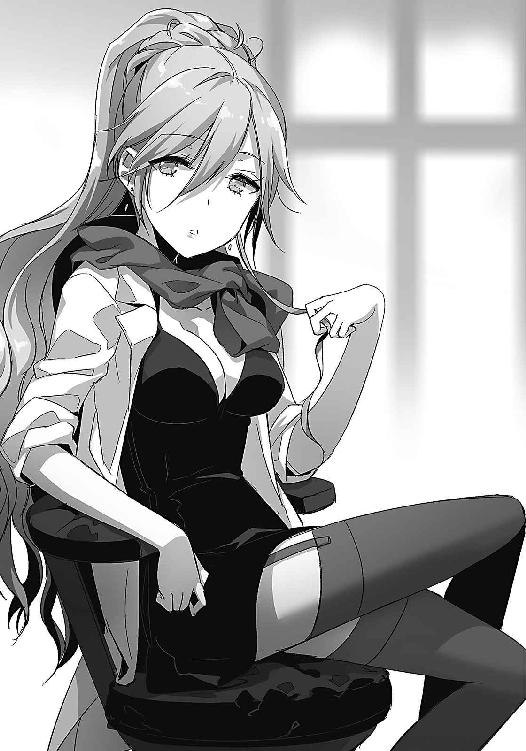
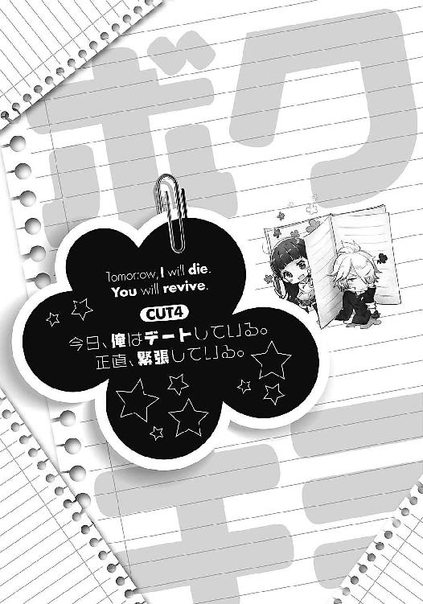
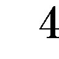

| 明日、ボクは死ぬ。キミは生き返る。 | |
| 藤まる | |
| KADOKAWA / アスキー・メディアワークス (2014) | |
本書（電子版）に掲載されているコンテンツ（ソフトウェア／プログラム／データ／情報を含む）の著作権およびその他の権利は、すべて株式会社ＫＡＤＯＫＡＷＡおよび正当な権利を有する第三者に帰属しています。
法律の定めがある場合または権利者の明示的な承諾がある場合を除き、これらのコンテンツを複製・転載、改変・編集、翻案・翻訳、放送・出版、公衆送信（送信可能化を含む）・再配信、販売・頒布、貸与等に使用することはできません。
流れ出る血は止まらない。
その日、俺の目の前で少女は死んだ。
雨に打たれ、灰色に濡れた体はついに動くことをあきらめる。
世界の端っこで起きた小さな悲劇。引き寄せられるのは、日常に生きる人々。
好奇に満ちた野次馬。垂れ下がる黒い雨。ぼやけて映ろう救急車にパトカーの影。
雑音を消し飛ばすサイレンは、深海のような世界を勢いよく揺らした。
やがて、降り続ける雨はすべてを押し流す。
あとに残ったのは流し損ねた少女の血。
それだけが、どこにも行けずに溜まっている。
日常に帰り損ねた俺は、足元に落ちていた手帳を拾い上げていた。
ぐしゃぐしゃに潰れたえんじ色の生徒手帳。
写真は破れて見えないが、名前だけはかろうじて読みとれる。
夢前光。
もう、どこにもいない少女の名前。
光り輝く夢を、未来を、摑みとるはずだった眩しい名前。
だが、それはもう叶わぬ未来。
終わった物語が紡がれることは永遠にない。
だって、彼女は──。
「おまえの寿命の半分で」
怯えるように顔をあげる。
暗い横断歩道の向こう側。
そこにいたのは、黒いローブを纏った不気味な人影。
傘もささず、雨にも濡れず。
ただ、枯れ木のように朽ちていた。
「おまえの寿命の半分で、彼女をたすけてやろうか」
笑いをこらえるようにそいつは言った。
だから俺は言ってやった。
「やってみろよ。くそ野郎」
俺は、訊いてみたかったんだ。
世界から消えるその瞬間。彼女に、この残酷な世界がどう見えていたのかを。
「記憶がないんです」
「記憶がなくなるほど彼女と熱い夜を過ごしたの？ これだから不良くんは！」
「まじめに聞いてください。本当に記憶がないんです」
「もう、どうして先生を呼んでくれないの。これだから不良くんは」
「先生、冗談抜きで記憶がないんですって」
「まったく。なんて恐い顔に産まれてきたの。これだから──」
「ぶちのめすぞコラ」
月曜日。
いや、違う。今日は火曜日。
......らしい。俺の記憶では今週初めて学校に来たはずなんだけどな。
ハッキリしているのはここが俺の通う高校の保健室であり、俺は養護教諭と喋っているという点だけ。他の情報はとにかく曖昧だ。
「で？ いつから記憶がないのかな、秋月くん」
養護教諭の日雲は、淀みのない透きとおった声で気安く名前を呼んでくる。
春だってのに、白衣の上に薄青色のマフラーを垂らした季節感の狂った女性教師。
ただでさえ男子生徒の間で話題になるほどのスタイルと美貌なのに、ゆるんだ胸元や見せつけるように組まれた脚は、挑発しているようにしか見えない。もっとも、そういう風紀の乱れを好まない俺にはなんの価値もない話だ。だからさっきから無駄に胸を寄せたり、脚を組みなおすのはやめてください。男の子なんです。
長すぎるその髪が窓から入る春風に揺れ、涼しい匂いが保健室に香る。いかんいかん、そんなことを考えている場合じゃない。それどころじゃないんだから。
「月曜の記憶がまるごとないんだ。日曜に眠りについて、目が覚めたら」
「目が覚めたら？」
「スイカ畑にいた」
「......うーん」
我ながらハズレたことを口にしていると思う。だけど事実なんだからしょうがない。
さらにおかしいのはここからだ。
「俺は首を傾げながら家に帰ってシャワーを浴びたよ。思いっきり遅刻だったけれど開き直って学校にも来たさ。そしたらなぜか火曜だった」
「えーと、スイカのシャワーを浴びたとかそういう話？」
「そんな話してねぇよ」
日曜の夜に眠りについて、スイカ畑で目が覚める。そして学校に登校したら、なぜか火曜日だった。なに言ってるかわからんと思うが、俺もなに言ってるのかよくわからん。
「うーん。寝すぎたんじゃないかな？ さすが校内一の不良くんだ」
「ありえねーだろ」
「じゃあお酒でも飲んでたんじゃない？ さすが校内一の不良くんだね」
「それもない」
「恐い顔してるからだよ。さすが校内一の──」
「いい加減しばきたおすぞ」
おちゃらけた教諭をめいっぱい睨みつける。
このアホアホな感じが生徒には人気らしいが、俺にはよくわからん。本当はこんなふざけた教師に相談なんてしたくなかったが、でかい病院に行って「いや、その、記憶がないんですよ。ふひひ」と言う勇気なんざ俺にはない。できればなにかの間違いだと思いたいんだ。
「うーん、でもねぇ。現実的に考えて月曜と日曜を勘違いしていたというのが有力なんじゃない？ 現実的とは言えないけど」
「確かにな」
言いたいことはわかる。だけどそれは絶対にない。
だからこそ俺はこんなふざけた教師に相談なんざ持ちかけている。
「よく聞いてくれ。今朝母親から聞いた話なんだが、昨日の俺は朝起きて鏡を見るなり、奇声をあげながら家を飛び出して行方をくらませたらしいんだ。パジャマ姿でな。だけど俺にはそんな記憶がない。つまり......」
「..................」
「..................」
沈黙が寝そべる。
「それは君の顔が恐くて──」
「そのネタはもういい！ 気に入ってんの!?」
くすくすと小さく笑った日雲は、ようやくまともな顔で俺の目を見つめる。
「ふーむ、君の言っていることが真実と考えるなら」
再び脚を組みなおし、人差し指を唇に当てて告げた。
「記憶喪失、だね」

「ああ」
記憶喪失。
認めたくねーけどそれ以外に思いつかん。
「うーん、記憶喪失ねぇ」
長い髪を指先で弄びながら、日雲は思い出すように呟く。
「記憶喪失と言っても色々と種類があるの。『ここはどこ？ わたしは誰？』でおなじみの逆向性健忘から『日雲先生を押し倒したところまでは覚えている......』のように一定期間だけが思い出せないパターンまで幅広いのね。君の場合は後者でいいのかな？」
「ああ、間違いない」
「押し倒したことは認めるのね」
「話を前に進めてくれ......」
記憶が全部抜け落ちていない証拠に、自己紹介ぐらいなら朝飯前だ。
名前は坂本秋月。
県立桜姫高校に通う高校二年生。
四人家族の長男であり、妹がひとり。
身長は百八十五。体重は七十ちょい。
誕生日は好きなサッカー選手と同じ日。
趣味は夏か冬に寺巡りすること。
生まれつき顔のデザインが恐ろしく、おかげで不良の看板を背負わされている。
そのため友達はおらず、クラスでは浮きまくり。席替えの度に隣になった女子が悲しそうな顔で出迎えてくれるのは恒例行事。
そんな生活が小、中、高と続いたせいでグレた俺は、本当に不良と呼ばれるにふさわしい存在になってしまい、クラスでもご近所でも職員室でもようするに地上のすべてにおいて白目で見られるイベントが常時発生している。妹からも「話しかけないでほしいのです、このクズ」と呼ばれはじめてはや二年。どいつもこいつも見た目で判断しやがって。ま、他人にどう思われようが興味ないけどな。
「え、あれ？ 泣いてるの、秋月くん」
「な、泣いてねーよ！ ぶち殺すぞ！」
「ふふ、そう」
愚問を切り捨て、あくびをひとつ。
自発的なあくびの難しさを知っている人がこの世に何人いるんだろう。
「記憶喪失ねぇ。でも、そう言われたところでどうにかできるものでもないんだよね。頭を打った可能性もあるから病院に行こっか？」
「いや、病院はいい」
あんまり大げさにしたくないしなぁ。
「もう、わがままくんめ。しかたない。とりあえず様子を見てみるということで」
「様子ねぇ......」
まったく解決になっていないが、確かにどうしようもないのも事実。
ちっ、しょうがねぇか。
あきらめた俺は、パイプ椅子から腰を浮かせる。
「じゃあな、もしかしたらまた来るかもしれん」
「あ、そうだ。秋月くん」
あ？ と気だるい声で振り向く。
「髪長すぎない？ 校則違反だね。短い方がかっこいいよ」
「......不良だからいいんだよ」
「さすが不良くん。またおいでね。いつでもＯＫだよ」
くそ、二度と来るもんか。
両腕で胸を寄せるエロ教師に舌打ちして、俺は勢いよく保健室の引き戸を閉めた。
日差しが満ちる廊下を歩く。
昨日の大雨が噓のようないい天気。
あ、違う。一昨日か。昨日は晴れていたのかどうかもわからん。
走れば汗でもかきそうな気温の中、昼休みの廊下は談笑する生徒で溢れている。
進級して数日。
そこには去年からのグループを継続している生徒もいれば、新たに輪を作りだす生徒の姿も。
無論、俺にはなんの関係もなく、何が言いたいかというと、あくびをしながら廊下を歩くしかないという話だ。
どんよりとため息をつく俺は、静かにクラスの扉を開く。
その瞬間、クラスメートのほぼ全員が俺に注目してきた。
が、目が合わないうちにどんどんと逸れていく視線、視線、視線。
「はぁ......」
中央の最後列にある自分の席。
そこに座り、片肘をついて目元を覆ういつものポーズで時が過ぎるのをひたすら待つ。あー誰か話しかけてくんないかなー。
「ねえ、真理子の話ってホントなの？」
「あ、ほんとらしいよ。３組の不良に絡まれたって話だよね」
だが、話しかけてくれる人なんかいるわけもなく、結局みんなの話を盗み聞きすることに。
「怖いよねぇ。先生がもっと注意してくれたらいいのに」
「むりむり。この学校の教師なんてビビってるだけだもん。ウチのクラスだって──」
そこで不自然に声が小さくなる。
俺か。俺のことか。
言っとくけど俺は不良扱いされているだけで他人には迷惑かけてねーぞ。
それともあれか？ 生きてるだけで迷惑とかいうそっち？
だとしたらどうしようもないわ。はは、死ぬか。
「ちっ」
無意識に舌打ちを放った瞬間、しまったと思う。
予想を裏切ることなく、近所にいた女子はガタガタン──ッ、と勢いよく席を立ち、教室の隅っこへ。
言いわけがましくそちらを見ると、寄りそうように怯える女子生徒たちが。
小柄でおさげな女の子と一瞬目が合うが、稲妻の速さで逸らされたことにより再び俺は泣きそうになる。
「くそ......」
ため息ひとつ。俺は机に突っ伏して視界を黒くする。あー早く放課後になれ。
不貞腐れた俺は、授業開始のチャイムが鳴った後もそのままだったが、先生含め誰にも注意されることはなく、それはそれでなんだか起き上がりにくくなったので、しかたなく肩凝りに苦しみながらもそのまま放課後まで堪え切ることに。
ああ、しんどい。
帰宅するなり母親に「結局昨日はどこ行ってたの！」とキレられたので「うっせー関係ねーだろ！」と、まさに反抗期のテンプレみたいな台詞で応答した。違うよ母さん。ほんとは素直になりたいんだよ。でもなんかキッカケが摑めなくて。
「お」
「あ」
階段を登り、二階にある自室に入ろうとしたら隣の部屋から出てきた制服姿の妹とばったり。
「ん、帰ってたのか」
「だからなんなのです。クズの分際で話しかけないでほしいのです」
無愛想な妹は無愛想な顔で無愛想な声を俺にぶつけてくる。おかっぱの前髪からのぞく両目は廊下の隅っこが気になるようで、一瞬たりともこちらを見てくれはしない。
この春に晴れて中学生になった我が妹、坂本雪瑚。
小柄で細身な体は母さん似であり、俺とは他人レベルにかわいらしく整った顔をしている。これでもうすこし性格が明るければ人気が出るだろうに。しかめっ面とコミュニケーションの悪さだけは残念なことに俺そっくりだ。
「今日は寝ぼけていないのですね。まったく、クズの分際で」
「ん？ 今日は？」
「とぼけないでほしいのです。昨日あれだけ大騒ぎしてたくせに」
「え──」
昨日......って。
「雪瑚！ 昨日の俺を見たのか!?」
「はぁ？ 見たもなにも実際に話を──」
「昨日の俺はなにしてた!? おまえに俺はどう見えていた!?」
困惑顔な妹の肩を勢いよく揺さぶる。
どうやらこいつは昨日の俺に会っているらしい。
「な、なにしてたって、そんなの自分に訊いてほしいのです！」
「いいから教えろよ！ おまえの気持ちが知りたいんだよ！」
「はぁ？ き、気持ち？ それって、どういう──」
「頼むよ！ 正直に言ってくれ！ おまえは俺のことをどう思っているんだ!?」
「............っ！」
俺がいつになく真剣な顔で詰め寄ると、妹はなぜか顔を赤くして口をパクパクさせる。
「ど、どうって、それは......その、か、かっこ......」
「え？」
もうちょいハッキリ喋ってくれ。
「だ、だから、か、か......」
「おいどうした？ 熱でもあんのか」
どもりまくっている妹の前髪を押しのけ、額に手を当てる。
するとそれがスイッチになったのか、妹は泣きそうな顔で俺の手を派手に払いのけた。
「や、さ、触らないでほしいのです、このドクズっ!!」
それだけ叫び残し、隣にある自室にこもってしまう妹。
階下より顔をのぞかせた母親による「なにしたのアンタ！」の声に「うっせーババア！」とかえし、俺も自室にとじこもる。なんだよあいつ、教えてくれたっていいじゃねーか。
「あーもう......」
通学カバンをそのへんに放り投げ、ベッドに倒れこむ。
自分の部屋の匂いに包まれると、なんだか眠気が襲ってきた。
だが、すぐにあることを思い出した俺は放り投げたカバンを拾い上げる。
「えっと、どこだっけ」
帰り際にコンビニで買った地元の新聞を取り出し、順番にページをめくる。
お、あった。
『滝王高校の女子生徒、事故死』
太ゴシックで不吉に飾られた見出しを確認。
地方ニュースの端っこに引っかかった、珍しくもないニュース。普段新聞なんてテレビ欄すら見ない俺だが、これだけは見逃すわけにはいかなかった。
「〝夢前光〟だよな」
死亡した女子生徒の名前を声に出してみる。
机の引き出しを開け、中からくしゃくしゃになった生徒手帳を取り出す。傷めないように丁寧に開くと、破けた写真の隣に同じ名前が。
昨日。違う、一昨日のことを思い出す。
雨の中、死んでしまったひとりの少女。
正直、そんなに思い出したいものではない。顔が見えなかったのが唯一の救いだ。死ぬ瞬間の顔なんて見たくないからな。ましてや女の子ならなおさらだ。
──おまえの寿命の半分で......。
脳内で雨のように降り注ぐ、冷たく尖った声。西日がカーテンの隙間から差しこんで、俺の顔に突き刺さる。
あいつは一体なんだったんだろうか。
黒ローブの不気味な影。
冷たい雨が見せた蜃気楼のような存在。
小さい頃見た夢がそのまま現実にやってきたような、曖昧な記憶。
俺はあいつにやってみろと告げた。だけど普通に考えてそんなことができるはずもない。現に新聞は、あの少女の死を無機質に告げている。
あの子は死んだ。
あれは人見知りな雨が見せた、ただの幻。
少女の死を目撃した俺は、ショックで月曜日の記憶を失くしてしまった。
ただ、それだけの......。
「俺、おかしくなってんのか」
思わず口からこぼれた言葉に、自分で気落ちする。言うんじゃなかった。
そして、生徒手帳に再び目を落としてため息をもうひとつ。
「これ......返しに行かなきゃまずいよなぁ」
新聞の記事が正しければ、俺の手元にあるこの手帳は遺品ということになる。だったら家族に返すべきだ。俺が持っていてもしょうがないんだから。
でも、だけど。
俺にはその勇気がない。
だって、この生徒手帳には──。
「............ちっ」
何度目かわからない舌打ちをオレンジ色の西日にぶつけ、カーテンで隙間を埋める。そしてそのままベッドに寝ころがった。
もう知らん。どうでもいいや。
静かな空間に身を委ねると、呼吸の音と心臓の鼓動がいやに耳に響いてきた。
「事故死、か」
吞みこむようにその言葉を呟いた後、俺は目を閉じた。
もしここで眠りについてしまったら、果たして俺は目覚めることができるのだろうか。
もしかしたらまた記憶が消えてしまうのかもしれない。
「大丈夫、だよな」
自分に言い聞かせるように言い放った後、俺は意識を浅い闇に溶かした。
まるで、今日から逃げるように。
大丈夫。きっと、大丈夫だ。
「大丈夫じゃなかった」
「ちょっと待って、今いいとこなの。この乙女ゲー、中々おもしろくて」
水曜。
違う、木曜。
いや、金......え、木曜であってんのか？ もうわからん！
午前九時すぎ。思いっきり一時間目の真っ只中だが、現在俺は保健室を訪れている。
理由はお察しの通りだ。
「先生、大変なことになった。また記憶が一日分......とりあえずテレビ消せ！」
「も、もうちょっとだけ！ このキャラ、秋月くんにそっくりなの。顔とか──」
「仕事しろやアホ！」
有無を言わさず、リモコンを強奪してテレビをぶちん。うらめしそうな日雲の視線に恐い顔で応え、どっかりと腰をおろす。
「んもう。で、その泥だらけの姿から察するに、またかな？」
「ああ。また、だ」
またしても俺が目覚めた場所はスイカ畑のど真ん中。そしてカレンダーは、
「木曜だよな」
「うん、木曜だね」
またも一日分の記憶が消えていた。
「ふふ、昨日は激しかったものね。記憶が飛ぶのもしかたないよね。さすが不良くんだ」
「どうしよう。やばいってこれ......」
「あれ、ツ、ツッコミ......？」
恐れていたことは現実に。またしても記憶喪失。またしてもスイカ畑。
「先生、マジでどう思う？ これやばいよなぁ......」
「うーん。一日置きに記憶が消えるなんて話聞いたことないからなぁ。なにか心当たりはないの？ 実は人造人間でした！ とか」
「人造人間か。なるほど、それなら説明はつくのか......」
「あ、あれ？ 今のはボケというやつで......」
「はは、そうか。俺は人間じゃなかったのか」
「ごめん。まじめに聞くから帰ってきて、秋月くん」
マフラーを正した日雲は、スチール製の本棚から一冊の本を取り出す。
「あれから記憶喪失について調べてみたの。だけど、一日置きに記憶がなくなるなんて事例は当然ながらなかったわけ」
「だろうな。つまり俺は人造人間なんだ」
「あの、ごめんって......。で、先生は別の可能性に気づいちゃったわけ」
「別の可能性？」
深く頷きながら、日雲は分厚い本の真ん中辺りを開く。
そこに書かれていた言葉は──。
「解離性同一性障害？」
「うん、つまり『多重人格』だね」
多重人格。
その単語は俺の頭をぶん殴るような響きを持っていた。
「ここにはそれについてこう書いてあるよ。『自己の精神を守るため、人は悲しみの記憶を封印してしまうことが稀にある。そのとき封印した記憶が、なにかの拍子に別の人格として表に出てくる。それが──』」
「多重人格か」
「そゆこと」
俺の言葉に頷き、日雲は机の上に置いてあったマグカップを手に取る。綺麗な字で『すてら』と書いてあったのが目に止まった。えらくかわいい名前してんな。いらん記憶が増えた。
「なにか心当たりはないの？」
「ねぇよそんなもん」
なんだったらこの一週間の記憶と、たった今入手したどうでもいい記憶を封印したいわ。
「そっかぁ。でも何度も続くようなら気をつけないとね。ここに書いてあるんだけど『もうひとりの人格は徐々に主人格よりも表に出ている時間が長くなり、いつしか乗っ取られてしまった』なんて例もあるらしいよ」
「────はへ？」
いかにもおっそろしい言葉に俺はフリーズする。
ちょっと待ってちょっと待って。
なにそれなにそれ。え、それって。
え。
「まあ本当かどうか疑わしい話だけどね。だからとりあえず病院に」
「..................」
「秋月くん？」
「............ぐす......」
「まさか......マジ泣き秋月くん？」
「......のに......」
「え？」
「まだやりたいこと......いっぱいあったのに......」
「たとえば？」
「女の子をナデナデしたかった......」
「不良のくせに控えめだね」
「うぅ......なんで不良になんかなっちまったんだ......」
「......重症だね」
「くそぅ......」
そこから先はあんまり覚えていない。
日雲がとりあえず病院に行けだのなんだの言っていた気がするが、そんなもん俺の頭に入るはずもない。
ふらふらの足取りで保健室を出た俺は、授業中だった教室のドアをスーパーど派手に開けて教師＆生徒を見事にビビらせるだけビビらせておいて、そのまま扉を閉める。
見事にイカれた奴に見えただろうな。なにがしたかったのか自分でもわからん。
そのまま学校を出て、よろよろうろうろ歩き回ること一時間。
俺は例のスイカ畑にうずくまって泣いていた。
「うええええええええぇぇぇぇぇええええええん、おがあざあぁぁぁああん────」
道行く人が、完全に俺を頭のおかしい人として見ている。
空は、すばらしく快晴だった。
日も暮れまくった時間帯。
涙を涸らした俺は、傾きながら帰宅する。
「遅いのです！ なにをしていたのですこのクズ！」
「ただいま......母さんは？」
「今日は出張なのです。わかったらさっさと飯を作りやがれなのです。特別に手伝ってあげるのです」
「はは、とうとう最後まで親孝行できなかったか......」
「はぁ？」
エプロン姿で怪訝な顔をしている妹の全身を眺めてみる。
いつのまにか女の子らしくなったなぁ。でももうちょい太った方がいいんじゃないか？
「な、なんなのです、じろじろ見て。き、気持ち悪いのでやめろなのです！」
「雪瑚。俺、おまえの兄ちゃんで幸せだったぜ」
「え......い、意味わかんないのですけど」
「今までごめんな」
「なにを脳にウジ虫でも湧いたようなことをはぱ──────────────ッ!?」
急に妹のことが愛おしく見えてしまった俺は、嫌がられるのを覚悟で抱きしめた。ああ、あたたかいなぁ。
「あぱ！ も、もぱっ!? な、なにをしやがれらろんです!? に、にいさん!?」
「ありがとな、雪瑚」
いっそう強く抱きしめる。
「お、おにいさま......」
そのまま二十秒ほど抱きしめた後、ゆっくりと解放すると、妹は目を泳がせまくりながらよだれを垂らし、千鳥足で自室へと向かっていった。
「ブ、ブログに書き記さねば......いや、原稿にするのが先か......っ」
そして、妹は扉の向こうへと消えていく。
ブログ？ なんのこっちゃ？
それはともかく、妹の言葉を聞いて俺はあることを思いついた。
「そうか、日記だ」
自室へ飛びこみ、鍵をかける。
閉めきったカーテンをさらに隙間が一切できないように閉めなおし、木製の学習机に設置されたスタンドだけを頼りに、暗い部屋で俺はペンをとった。
そのへんにあった新品のノートを広げ、白い紙面を睨みつけること数秒間。
.........えー。.........あー.........。
考えてもなにも思い浮かばない。こういうときはとにかく書いてみるのが大事だ。そうすれば勝手に形になるものさ。
ペンが紙を引っかく音をＢＧＭに、俺は思うがままに書いた。
もうひとりの俺へ。
最後になるかもしれないメッセージを。
『よぉ。元気か？ 俺の体で過ごす月曜と水曜はどうだった？
俺はどうやらおまえに乗っ取られるようだな。
まぁいい、後悔はないさ。
ごめん、噓。めちゃくちゃある。
だけどもうあきらめる。家族や世間に迷惑をかけた身だ。潔くおまえに譲るとするさ。
ただ、最後に頼みがある。
妹を守ってやってくれ。命よりも大切な妹なんだ。
あと、父さんと母さんにもよろしく言っておいてくれ。育ててくれてありがとうってな。
以上、よろしく頼んだぜ。
お礼と言っちゃあなんだが、パソコンに秘蔵動画フォルダを作っておいたから自由に使ってくれ。
パスは「ookiihaseigi」だ。
じゃあな、もうひとりの俺よ。
坂本秋月より』
「ふぅ」
書き終えたノートを目立つように机のど真ん中に置くと、ため息が待ちかねたように漏れる。
悔いはない。
悔いはないんだ。
自分にしっかり言い聞かせたところで、俺は目元を拭ってベッドで横になる。
いや、最後くらい妹と二人で飯でも食うか。
思いなおした俺は、妹の部屋をノックして一緒に晩飯をすませる。
風呂に入り、ほどよく体と頭がぼんやりしたところで、今度こそベッドへダイブ。
じゃあな、みんな。
簡単すぎる別れを最後に、俺の意識は闇の中へ。
その晩はいつになく深い眠りにつくことができた。
「......土曜か」
そして普通に目が覚めた。
ケータイ電話の日付はまたしても一日分のワープを俺に教えてくれる。
ただ、いつもと違うのはスイカ畑にいないこと。
さらに、もうひとつ。
「マジか」
ノートが机に置いてあった。
だが、明らかに俺が置いたのとは違う。
電気スタンドに立てかけられたそれは、俺に読めとでも言いたげに強調されていた。
迷う暇も考える暇もない。
俺は謎の義務感に急かされるように、ノートを勢いよく開いた。
そこには──。
「..................あの黒ずくめ野郎」
気づいてしまった。
あの日からずっと、脳内に降り注いでいる雨音の正体に。
「半分って、こういう意味かよ」
糸の切れた操り人形のように、崩れ落ちる。
笑えばいいのか泣けばいいのか。
俺は、あらためてノートに書かれた文字を見ながら、頭を抱えた。
『坂本秋月くんへ。
あなたがもうひとりのわたしなの？
夢前光より』
「遅刻じゃねーか......」
けたたましい目覚ましの音にどつかれた俺の意識は、現状にため息をつく。
ただ今現在八時すぎ。
授業開始まであと二十分。
学校までは歩いて三十分。
「あのドあほんだら......」
愚痴っていてもしかたがない。
急いでカバンを......あれ？ カバン？
「なんでこんなとこにあるんだよ！」
ベッドと壁の狭間で死んでいたカバンを救出し、中身を確認。
「宿題は......してない」
「時間割も......してない」
「制服は、えーと......どこだよ！」
怒鳴ったあたりで、なぜか床に散らばっているのに気づく。あーもう。
「秋月、ごはんできてるわよ」
「あ？ いらねーよ！」
「はぁ？ 昨日いるって言ってたでしょ！」
母親の半ギレボイスに怒鳴りかえす。俺じゃねぇんだよそれは。
着替えをすませ、机の上に置いてあったノートを通学カバンに突っこみ、ようやく準備完了。
「だぁもう！ 先生に怒られたらおまえのせいだぞ！」
誰に言うでもなく吐きすてた俺は、朝日が降り注ぐ通学路を走り抜けた。
全身で浴びる風は、まだすこし冷たい。耳とうなじを踊る髪は、どこかいつもよりしっとりしている。
そこだけに感謝しながら、俺は二日ぶりの学校へと急いだ。
授業中の教室に息切れしながら突撃した俺は、いつものようにクラス中の注目を集めた後に謝罪しようと「ぜぇ、はぁ......あの」と呟いたあたりでなぜか教師から陳謝され（なんで？）自分の席に座った。俺が来ただけで平和が終わったこの空気。もうみんなほんとごめん。
周囲の注目が薄れたのを見計らい、俺はこっそりとカバンの中からノートを取り出す。本当なら家でゆっくり見たかったのだが、あのアホのせいでそんな暇もない。
慎重にノートを開くと、そこにはあいつからのメッセージが書かれていた。
『じゃあ細井さんのＳＦパワーでわたしは坂本くんに憑依しちゃったの？』
「たぶんな。てゆーか細井さんてなんだよ」
緊張感のない文字列に、俺は返事を書き記す。
あの日。あの雨の日。
〝おまえの寿命の半分で、彼女をたすけてやろうか〟
俺は黒ローブにこう迫られた。
言葉面だけを捉えるなら、俺の寿命が半分になるかわりに、夢前光がたすかるという意味になる。俺はそう思っていた。普通そう思うだろう。
だが、それは勘違いだった。
俺と夢前光は何をどうやったのかは知らんが、一日置きに二人の人格が入れ替わるという状況に陥っていたのだ。
つまり俺の体には二つの魂が宿っており、それが交互に表へ出てくる。
表に出ていない間の記憶は残らないため、実質体感寿命は半分だ。黒ローブが言っていた半分とはそういう意味らしい。わかりにくすぎだろ。半分サギみたいなもんじゃねーか。半分だけに。ははははは、はぁーあ......。
先週の土曜日にそう気づいた俺は、ノートにそのことを細かく書き記した。
信じてもらえるのかと疑ったが、実際にこうなった以上信じるしかなくなったらしい。夢前光はとくに疑うでもなく、質問事項をノートに綴りまくっていた。そのうちのひとつが先ほどの文章というわけ。細井さんというのはたぶん黒ローブのことだと思う。俺がノートに『黒ローブの細い奴が......』とか書いたせいなんだろ。
ちなみに今日は水曜日。
交換日記を数回重ねたことで、大体お互いの現状が把握できていた。
それでも夢前光にはまだまだ訊きたいことがあるんだろう。
学校のことや友達のこと、普段どんなキャラで通しているのか、口調はどんな感じなのか、などなど。俺への質問がびっしりとノートに並んでいる。まぁいきなり見知らぬ男の体になっちまったらこうなるのもしかたないわな。
ひとつひとつに赤ペンで答えを書き記しながら俺は思う。
「自己紹介しといたほうがいいのか」
とりあえずここ数日は現状をお互いに報告することで、状況の把握につとめていた。
だが、この状況がずっと続くのだとしたら、情報の共有をより密にしなければならない。
さしずめ俺のことを夢前光に知ってもらい、それに合わせてもらうのが一番だ。なんせ今日の俺が不良キャラで「ああ？」とか言っているのに、明日の俺が女子高生キャラで「マジ？ うける～☆」なんて言いはじめたらそれこそ俺の人生が崩壊してしまう。
「と言ってもなに書きゃいいんだか」
思いつくまま、ノートに俺のことを書いてみる。
見た目が恐ろしく、他人とのコミュニケーションがド下手。
おかげで不良のレッテルを貼られており、友達はいないし彼女もいない。
クラスメートと最後に会話をしたのは五年ほど前。
家族ともうまくいっておらず、反抗期という設定。
うん、なんだろ。書いててすごく悲しくなってきた。せめて友達だけでも......。
ぐすん。
うんざりしながらも俺は、何度も訂正しながらノートに文字を書き連ねていく。
そうこうしているうちに、時刻は夜の十一時。そろそろ寝る時間だ。
「明日は学校に行かせてみるか」
これまでは自宅に引きこもれという指示を出していたが、いつまでもこのままってわけにもいかない。明日からはあいつも学校に行かせてみよう。
そう考えた俺は、しっかりと時間割や予習をすませ、目覚ましも早めにセットする。
制服もきちんとハンガーにかけ、アイロンをかけたシャツも目につく場所に配置完了。
もちろんノートには注意事項や連絡事項をしっかりと記入。たぶんこれで大丈夫だろ。
「..................」
そして、俺は考えこむ。
ドタバタしていてなんだか蔑ろにしていたが、あいつ自身のことをまだ聞いていない。
夢前光という人間は死んでしまったのだが、そこに関してどう思っているのか。
自分の死に関して夢前光は『そっか。事故で死んじゃったんだ。......よ、他所見してたからねぇ～（笑）。でもしかたないよね！ もう忘れよう！ はい、この話題こっから禁止！』という一文であっさりすませていたわけだが、普通に考えて嬉しいわけがない。
家族や友達に会うことは可能だが、それは夢前光としてではなく、坂本秋月として会うことになるのだ。
それと、もうひとつ。俺はあいつにどうしても訊いておきたいことがあった。
それをノートに──。
「......やめといたほうがいいよな」
誰かに同意を求めるように呟き、ノートを閉じる。
余計なことはしないでおこう。ただでさえやっかいな生活になったんだ。今はこの生活に適応することを優先しなければ。
「明日の俺を頼んだぜ」
そして俺は眠りにつく。
不安と、すこしの焦燥を抱えたまま。
「......はぁ」
浅い眠りから目覚めた俺は、ノートとにらめっこする。
ため息をついている理由は単純。予想外のことが起こったのだ。
無論その原因はこのノートに詰まっている。
夢前光を学校に行かせ始めてから一週間が過ぎた木曜日。
あれからノートの書き方にもすこしずつルールが構築されている。基本的にはページ上段に今日一日の出来事を記入して、下段に明日の俺へのメッセージを書きこむ仕組みだ。俺が左ページに書きこみ、夢前光が同じように右ページに記入する。重要事項なんかは、色ペンを使ったりイラストを混ぜたりして詳しく解説するのが鉄則だ。学校への行き方はこのルートを通れだとか、明日の小テストは単位に関わるから気をつけろとか。
同時に、共同生活（と言えるのか？）を送るうえでのルールなんかも作成中である。
ルールはノートの最終ページに書いていく仕組みであり、ここに書かれたことを守ることで、俺たちは問題なく奇妙な日常を送ることができる。
......そう思っていたんだけどな。
「あのドアホが......」
ため息がエンドレスなことからなんとなく察していただけるかと思うが、ただ今現在、俺と夢前光の共同生活はミラクルド派手に遭難中である。
理由はただひとつ。
夢前光だ。
まさかこの女がこんなにぶっ飛んだ奴だったとは。
俺はノートをぱらぱらとめくりながら、ここ数日間の出来事を思い起こす。せっかくなので、ノートの中身をいくつか紹介しておこう。そして、どれだけこの女がアホなのかを知ってくれ。
とりあえず、ある日のノートにこんなことが書いてあった。
『すまぬ』
「は？」
なんだ？ すまぬって。
............。
え？
朝起きてノートを広げると、これだけが書いてあった。
内容を訊こうにも明日にならないと訊けないうえ、俺が答えを知るのは明後日。
「詳しく書いてくれよ......」
結局どうしようもないので、そのまま支度をすませて学校へと向かう。
そしたら俺は逮捕された。
なにを言っているのかまったくわからんと思うが、俺もさっぱりわけわからんかった。
学校に到着するなり警察から「とりあえず話聞かせてね」とか言われて、学校の一室を借りて尋問が開始されたのだ。
その内容をかいつまんで説明すると、
──なぜ女子更衣室に堂々と侵入したんだ？
──さらに、なぜ動じることなく着替えをはじめたんだ？
──そのうえ怯えていた女子生徒に向かって『その下着かわいい～！ 見せて見せて』とか言ったらしいな。
──あげくの果てには『へへ、やわこいの～』とか言いながら触ったと。
──さらにトランクスを見せつけながら『スースーして気持ち悪い。坂本くんの男の子、邪魔だし』などと言ったとか。
──もうね、呆れてものも言えん。我々警察は恥ずかしい。こんな若者がいる国を守らねばならんとは。
──そこまで事に及んだ君は『ああ！ しまった！ これヤバイかも!?』と言ったそうだな。
──さらに『違うの！ 忘れてただけなの！ いつもの癖で！』などとまったくわけのわからない言いわけを並べたあげく逃走したと聞いている。
──いつもの癖って。いつもこんなことをしているのか貴様ァ！ うらや──けしからん！
──おまえみたいな不良がいるから日本はだめになるんだ......。
──つまり貴様を逮捕する。異論はないな。
以上。
そして俺は叫んだ。
「あのアマァァァァァァアアアアアア────ッッッ!!」
そこからはスーパー言いわけタイムだ。
だけど真相を話すわけにもいかず、警察は「はいはい、このクソが！」などと言うばかり。
結局、日雲が「ふふ、この子に盾突くとはすごい度胸だね。この子を逮捕しちゃうとあとが怖いよ？ バックにすっごいのいるから。見てよこの顔。私もこの顔に脅されて昨日は激しく......ぐすん」みたいなキワドイ事を言ってくれたおかげで、被害者の女子は訴えを取り下げてくれた。おまえ教師なんだからもうちょいうまくおさめてくれよ。おかげで、クラスにおける俺のただでさえ狭い居場所は木端微塵に消え失せたじゃねぇか。
というわけで、最初のルールができあがった。
『ルール１：男としての行動を意識すること。痴漢あかん！』
トラブルはもちろんこれだけではない。
ノートを広げ、そこに、
『ドラマ録画しておいてんぷら！ もちろんブルーレイでよろしくらめん！』
とだけ書かれており、なんのドラマか書けよもう、などとため息をついていた朝のことだ。
洗面所へ向かう途中に妹とすれ違ったのだが、なぜか妹が、
「ぴぃ」
と、虫みたいな声を鼻から漏らして真っ赤な顔で逃げていったことがあった。
いやまぁ避けられるのはいつものことなんだが、いつもと違うというかなんというか。
そしてその夜に事件は起こった。
「に、にいさん。いいですか？」
ノックと同時に俺の部屋にやってくる妹。
なぜかバスタオルを抱えており、目は個人メドレー王者並に泳いでいる。
「きょ、今日もお願いするのです。は、早くするのです」
「は？ 何が」
訝しさを投げかえす俺。
すると、妹は不意打ちをストレートに食らった顔で慌てだす。
「い、言わせないでほしいのです！ 昨日のです！ さ、さっさと準備するのです！」
「え、昨日？」
昨日のことはわからんのだよ。あのアホがきちんとノートをとらないせいで。
「だ、だから、昨日みたいに、そ、そ......」
「ん？」
俺の意識がデンプシーロールをはじめたあたりで、妹は真っ赤な顔で怒りだす。
「も、もういいのです！ うそつき！」
──バダンッ！
そして部屋を出ていく妹。
「あのバカなにしたんだよ」
とりあえずノートに『妹の様子がおかしいぞ。心当たりは？』と書いておくと、翌々日にひときわまるっこい字で返事が書かれていた。
『ぐへへ。妹ちゃんは女のよろこびを知ってしまったようだね。綺麗だったよ（じゅるる）』
「このやろう......」
そしてまたルールが増えていく。
『ルール２：妹で遊ばないこと。女のよろこびは十年早い！』
こいつの生活が予想以上に適当なので、いちゃもんをつけてみることに。
だってこの女、目覚ましはギリギリにしかセットしないし、宿題はしないし、服は脱ぎっぱなしだし、布団は干さないし、ケータイは充電しないし、テレビ点けっぱなしで寝るし、ゲームを勝手に進めるし、深夜アニメ見るために夜更かしするせいで俺が眠いし、ケータイの待ち受けが勝手にキ●ィちゃんだし。女子トイレに頻繁に出入りしやがるせいで登校した瞬間に教師から呼び出しをくらったこともある。いい加減慣れてくれよ。あとブラとパンティはやめろ。体育の着替えのときに周りドン引きしてたから。
そんなこんなで怒りをノートにぶつけまくった翌々日。
そこには、
『下着がないと落ち着かないんだもん！ 坂本くんの男の子、ぶらぶらして使いにくい！』
などと書かれていた。んなこと言われたって......。
さらにその下には、
『坂本くんって不良なのに姑っぽいね。「光さん、まだ埃がパネェほど残ってますわ。お掃除をマジやりなおしなさい！」とか言うの？ ぶひゃひゃひゃひゃ（笑）』
とか書かれていたのでブチ切れた俺は、録画したドラマを大相撲で上書きしておいた。そしたら翌々日、妹の悲鳴で目が覚めた。
あたりを見回すとそこは妹の部屋であり、俺が寝ころがっていたのは妹のベッド。隣には起きたばかりにも関わらず、恐怖で顔をひきつらせた妹。そしてなぜかパンツ一枚の俺。「違う！ 生理現象！」という言いわけが自分でもまずかったと思う。「あんたって子は......」と、青くなってしまった母親の顔は一生もののトラウマです。
『ルール３：生活習慣は正しましょう。深夜アニメは録画すること。間違っても深夜に暗い部屋にてテレビの前でエンディングダンスを共に踊るのはやめましょう。妹が引いてたから』
マジで。
「そういやなんでスイカ畑にいたんだ？」
かねてからの疑問をぶつけた日のことだ。
なぜか二連続でスイカ畑に埋もれるという珍事件。
その真意についての返事がこちらだ。
『目が覚めたらなぜか男の子の体で、わけがわからなくなったわたしはさ迷う内にスイカ畑を見つけて、ああ、スイカといえば巨乳だなぁと考えるうちに眠くなってきて、なにが言いたいかというと君のパソコンの秘蔵動画フォルダはスイカ方面に偏りすぎじゃない？ 「ゴラァのマーチ」一週間分で考えてやろう』
「しまった！」
急いでパソコンを起動させ、動画フォルダを開こうとするも、パスワードが一致しないのメッセージ。ちくしょう、やられた。
しかたなく量販店でお菓子「ゴラァのマーチ」を大量購入し、机の上に置いておく。
翌々日のノートには、
『ゴミ箱の中にあんなものを潜ませていたなんてね！ 美少女に斬新なセクハラをしたんだからこれぐらい当然だよね！ ティッシュは大事に使うこと！』
というお言葉が。
ちくしょう、どうも遊ばれている気がする。結局なんでスイカ畑にいたんだよ。
『ルール４：処理に気をつかうのだ！ 一日一回まで！』
「なんだか疲れてるね、秋月くん」
「ああ、死にそうだ」
「ふふ、昨日は激しかったものね」
「昨日何があった!?」
どたばたしていたらあっという間に休日は過ぎ去り、気づけば今日は水曜日。休日まで半分ってのはなんだか損した気分だ。
どこぞのアホのせいでまたしても寝不足な俺は、ただ今保健室にて休憩している。
決して諸事情により教室に居づらいとかじゃないぞ。女子の視線が犯罪者を見るそれだからとかそんなんじゃないぞ。そんなんじゃないんだ......。
「それよりさっきから俺のケータイでなにやってんだよ」
「はい、できました。これね、先生が開発した『パンツだから恥ずかしいもん！』ってアプリなの。このアプリを起動した状態で写真を撮れば、もれなく被写体はパンチラになるという夢のようなアプリなんだ」
捻ったおかげで逆にストレートなネーミングだな。
「しかもね。被写体の顔や服装からどんなパンツが似合うかを想定してくれる賢いアプリなんだよ。はい、ちーず☆」
ぱしゃり。
無機質な機械音を発したケータイに映し出されるのは、恐い顔をしたＴバック姿の少年。削除削除......あれ!? 消せない!? くそ、いらん改造しやがって！
「で、あれ以来もうひとりの人格は出てきていないのかな？」
「あー。まぁ......」
日雲が言っている〝あれ以来〟というのは、夢前光が更衣室でフリーダムだったあの日のことだ。一応あの日のことは多重人格のせいということで日雲には言いわけしている。噓なんだけど噓じゃない。俺じゃないのは確かなんだから。
日雲には夢前光のことを話そうかとも思ったが、今のところはまだ話していない。どうせ信じてもらえないだろうし。
「でも最近楽しそうだよね。職員室でもキミが元気そうだって話題で持ちきりだよ。凶器を持ちだした生徒への対処マニュアルが配られたくらいなんだから。一冊あげるね」
「だめじゃねぇかそれ！」
パラパラとめくって中身を読んでみる。なになに？
『生徒を興奮させてはいけません。まずは家族の話題等で落ち着かせましょう。「このまま補導されれば、ＨＤＤの中身も家宅捜索の対象だぞ」と言えば効果は抜群です』だそうだ。俺はたてこもったテロリストかよ。
でもまぁ急におとなしかった不良が活発になれば警戒するわな。俺もあいつがあんなにおてんばだとは思わなかったし。つーか死んだんだからもうちょい悲しむとかそういうイベントはあってもいいんじゃねーか？ なに普通に他人の人生楽しんでやがるんだ。
「..................」
頭の内側に、冷たい水が流れこむ。
そう、あってもいいはずなんだ。
死んだことへの悲しみとか。
〝夢前光〟を失ってしまったことへの嘆きとか。
普通はあるはずだ。ないわけがない。
そんな話を一切しないのは気にしていないからじゃない。気にしていないフリを、あいつがしているからだ。
そこに関して俺が言えることは少ない。というかない。
一生言うつもりもないし、あいつが強がって生きるんならそれを疑うことなんてしない。
でもひとつだけ。どうしても知りたいことがある。
「なぁ、先生」
「うん？」
らしくないことを訊こうとしていると自分でも思う。
「もし、あんたが誰かのせいで見知らぬ世界に放りこまれたとしたらどうする？ そこではあんたは右も左もわからない。誰も自分をたすけてくれないし、そこからもとの世界に帰れる保証はまったくない。もしそうなったら......やっぱりそいつを恨むんだろうか」
言い終わった瞬間に後悔する。
なんでこんなわかめみたいな生き方してる奴に俺は相談してるんだか。どーせ「不良のくせに繊細なこと言っちゃって。もしかして溜まってるの？」みたいなことしか言われないのに。しかし言っちまったもんはどうしようもない。
不自然な沈黙だけが空気を読まず、そこに居座る。
日雲はというと「う～～～ん......」と悩みながら、考えこむ始末。適当に答えてくれりゃあいいんだよ。
「そうだね、先生だったら」
「あんただったら？」
「案外気楽にその生活を楽しむんじゃない？ 逆にふっきれるみたいな」
「......そうか」
穴でもあいたように肩の力を抜いて、いつも通りのんびり答える日雲に納得する。
まぁそうだよな。なにが正解なんだって言われても困るわな。
「ただし」
「あん？」
授業終了のチャイムがゆっくりと鳴る。
鳴り終わるのを待ちわびたように、日雲は残りの言葉を追いだした。
「気になるなら、本人に訊ねてみたらどうかな？ なんのことかは知らないけど」
「────っ」
顔を上げると、日雲が目を細めてこちらを見ていた。
どこか笑っているようにも見える、そんな顔で。
「怖がらないで。君は優しい。優しい子はなにをやっても許されるんだよ」
「俺が優しい？」
「うん」
「なんで」
「そんなこと気にしてるから、だね」
「........................」
まったく理解不能な言葉を意識から放り投げる。
なのに、そいつはしつこくもどってきては俺の頭にしがみつく。ああもう、うっとうしい。
「じゃあな、帰るよ」
日雲の言葉をこの部屋に置きざりにするために、俺は椅子から立ちあがる。
そんな俺の背中に、さらなる言葉がへばりついてきた。
「秋月くん」
「あ？」
「髪、切らないの？」
「余計なお世話だ」
「ふふ。今日はしっとりしてるね。こだわり？」
「......余計なお世話だ」
なんでこの人が生徒に人気なのか。
ほんのすこしだけ、わかった気がした。
その晩、俺はノートにできるだけ綺麗な字で短く記した。
丁寧に書こうとすればするほど、文字は乱れる。
だけど書きなおしたくはなかった。もし消せば、二度と書きなおせない気がしたから。
『恨んでるか。俺を』
「恨まれても、しかたないよな」
それだけ書き終え、ペンを静かに放す。
あいつはもう、一生元の生活にはもどれない。
望む望まざるに関わらず、もう坂本秋月として生きていくしかない。
やりたいことだってできないし、辛くなったからといって、逃げ出すこともできやしない。俺があいつを閉じこめてしまったから。
生き延びることができただけマシ、という考え方もある。
だけど、それは通用しない。
だって──。
「..................」
これ以上悩んでいるとノートを燃やしてしまいそうだったので、俺は現実から逃げるようにベッドへ飛びこむ。
そして、今日の俺に背中を向けて別れを告げた。
朝、ふいに目が覚める。まだあたりはうす暗い。
色を失くした世界に、灰色の足音を落としながらノートを手にとる。
パラパラとめくり、そこに書かれた文字を見つめた。
「ふぅー」
なぜか漏れ出た軽いため息。
青みがかった暗がりの中。くっきりと浮かぶノートの文字。
そこには、
『たすけてくれてありがとう。悲しくて不安でどうしようもなかったけど、案外この生活楽しいよ。男の子ってのも悪くないぜ！ これからもよろしくだぞ、相棒っ！』
と、俺とは比べものにならんくらい綺麗な字で書かれていた。
締めとして、
『坂本くんでよかった』
とのお言葉も。
さらに、机の上には綺麗にリボンで飾られた小さな箱がひとつ。ほのかにチョコレートの匂いがするってことはまぁそういうことなんだろう。左手人差し指に巻かれた絆創膏とどんな関係があるのかは知らん。
それだけ確認した俺は、腫れぼったい目をこすりながら再び布団をかぶる。
「これからもよろしくな、夢前光」
一生会えない相棒に呟く。
目覚ましをいつもの時間にセットしなおし、俺は二度寝に旅立った。
夢を見た。
小さい頃の夢。まだ小学生になりたての頃。
確か夏だったと思う。うん、夏だった。
家族で出かけたキャンプ場。川沿いでバーベキューをやっていたんだ。
俺たち以外にも子供連れの家族がたくさんいた。
そうなれば、あとは自然にガキが集って数年来の友達のように一緒に遊ぶ。
川があるんだから川で遊ぼうというのは、自然な発想だったと思う。
だけど、大抵ひとりはいるものだ。
泳げない子が。水を異常に恐がる弱虫が。
深くもない川の向こう側で、怯えて涙目になっている少女がいた。
誰かが手を引いてやれば歩いて渡れる程度なのに。
涙をいっぱい目にためて、うじうじもじもじと怯える少女。
キャンプ場には似合わないドレスが川面に眩しく映る。
髪はかなり長く、両手で抱きしめたパンダのぬいぐるみがとてもいじらしい。
ぼんやりとしか思い出せないが、かわいらしい女の子だったということだけは覚えている。
そして、大抵ひとりはいるものだ。
かっこつける奴が。無茶をする愚か者が。
たまたまその時の馬鹿は俺だったのだ。
「待ってろ、今たすけるぞポラリス姫！ オータムーンの名に懸けて！ 約束だ！」
アニメを真似した変身ポーズと台詞を威勢よく叫ぶ俺。
ポラリス姫ってのは当時ハマっていたアニメのヒロインだったと思う。
オータムーンってのは、あれだ。オータムとムーンで......その、そういう設定だったのだ！
それはさておき、ここまではいい。
動機はどうあれ、困っている人のために頑張るヒーローなのだから。
だけど、この後がまずかった。
俺は足を滑らせ、それはもう見事に川の流れに逆らえず流されていった。てゆーか溺れた。
パンダ少女が泣きそうな顔で流されていく俺を見つめていたことは今でも忘れない。
死んだ。
幼いながらにそう思ったときだ。
いったいどこから現れたのか。川岸を猛スピードでひとりの少女が走ってきた。
子供たちがあっけにとられる中、その子は勢いよくジャンプする。
そのまま川に飛び込み、流される俺の腕をしっかりと摑んで引き上げてくれた。
太陽に輝くショートカットと、美しく深い瞳。眩しい純白のカチューシャ。
弾ける笑顔に見惚れていたことは今でも忘れない。
その後の台詞も含めて、一瞬で俺は心を奪われたからだ。
「わたしはキミの命をすくったヒーローだ！ きょうからキミはわたしのしもべだね！」
続く「約束だよ！ ゆびきりげんまん！」という言葉と共に差しだされた彼女の白い小指。無意識に絡めたそれは、とても温かかった。
そして俺は言ったんだ。
必ず借りは返すと。おまえがピンチな時に必ずたすけてやると。約束すると。
小指と小指が離れる瞬間。あの寂しさは今でも忘れない。
あれからもう、十年が過ぎた──。
「あああああっ!!」
休日に起床した俺は絶叫する。
ちくしょう！ やられた！
『オータムーン（笑笑笑笑笑笑笑笑笑笑笑笑笑笑笑笑）』
そんな言葉が書かれたノートの隣に置いてあるのは、一通の手紙。
「くそ......しまった......隠し残しが......っ！」
苦い表情で俺は日記を読み進める。
『ベッドの下を探索していたらとんでもないお宝を発見！ まさか坂本くんが女の子と文通していたとはね。かっわいい～～～～～！』
と続いている。
「昔の話だよ！ ほっとけ！」
隣に置かれた手紙を手に取り、愚痴を吐き出す。
それは、かつて俺がキャンプ先で出会った少女から貰った手紙だった。
溺れかけていた俺をたすけてくれた、ショートカットとカチューシャがすてきな少女。
その子と俺はすぐに意気投合し、キャンプが終わるまでずっと一緒に遊んでいた。その後も、時代にそぐわないとは自覚しつつも文通という甘酸っぱいやりとりを繰り広げていたのだ。
夢前光に見つかると確実にからかわれると思い、ダンボール箱にしまって天井裏へと隠していたのだったが、どうやら一通だけ取りこぼしがあったようだ。ちくしょー......そもそもなんでベッドの下なんて漁ってるんだよ。想像はつくけど。
『せっかくなので全文を複写させていただきましたぁーっ。
──こんにちは。秋月くん、げんきにしてる？
もうすぐ夏だね。夏になると必ずキミのことを思い出すよ。
今でも覚えてる。失敗しちゃったけど、ヒーローになりたかったんだよね。
とってもかっこよかったぞ、ヒーローのオータムーン！
約束、今でも覚えてるから。忘れないでね。お返事ください──。
ちょ、オータムーンて（笑笑笑笑笑笑）。
やるじゃんヒーロー（笑）失敗してるあたりがさすが坂本くん（笑笑笑）
というわけでわたしにもお返事ください（チラッ）』
しつけー！ 人の過去を笑うんじゃねー！ そういう時代もあるよ！
「あーくそ......余計なもん見つけやがって......」
懐かしい手紙を広げながら、ため息ひとつ。ったく、人の思い出に踏みこみやがって。
ノートの最終行には、
『ふふふ、オータムーンオータムーン♪ いいこと聞いちゃった☆』
という楽しそうな文章が。いいや、ほっとけ。そのうち飽きるだろ。
「......もう随分、手紙来てないな」
頻繁に交わしていた手紙も、時の流れと共にだんだんと届くまでに時間がかかるようになっていた。そして、今ではもう最後に手紙を交わしたのがいつかすら思い出せない。
「............元気でやってるんだろうか」
遠い記憶を掘り起こし、どことなくさびしくなる。
いつしか顔も思い出せなくなった、太陽のように輝いていた女の子。
記憶の隅っこに埋もれた、埃だらけの記憶に未練がないといえば噓になる。
でも、もう忘れよう。昔の話なんだから。
そうして俺は思い出に蓋をして、手紙を机の奥へと押しこむ。夢前光もそれ以降はこの件を話題にすることはなかった。
だけど、これが関係しているのかしていないのか。
それは定かではないが、このあたりから夢前光が俺に隠れて変なお遊びを始めたのだ。
ヒーローごっこ、というお遊びを。
「筋肉痛が翌日にくるシステムはどうにかならんのか？」
「昨日の君に文句を言うしかないね」
「昨日の俺が言うこと聞かねーんだよ」
「ん？」
「なんでもねー。湿布くれ」
「貼ってあげる。上着脱いで」
「とか言いながらなんでベルトに手をかける！」
カレンダーはゴールデンウィークを飛び越えた火曜日。土日までまだ距離があることに憂鬱を感じる。
まず思うのは、異様に太陽が眩しいってことだ。五月ってこんなに暑かったっけ？ 一年たつと季節の記憶ってリセットされるよね。
そんな俺がいるのはおなじみになりつつある保健室。
夢前光がむやみに暴れまくるせいで、慢性的な筋肉痛に悩まされているからだ。
『念願の不良の体を手に入れたぞ！ もう怖いものなしだ！』
こんな日記が書かれていたのは数日前のこと。
いったいあいつはなにをしていやがるのか。知らないうちにトレーニングジムの会員証が作られているし、原因不明の生傷が頰に二つも。頼むからトラブルはやめてくれよ。あと絆創膏貼るの下手すぎなんだよ。角度を考えてから貼りなさい。
「しかし昨日の君はすごかったね。びっくりしたよ」
「え、なんかしたっけ？」
そういう話題の振られ方は非常に困る。
「下半身をあれだけの速度で動かすとはね。さすが不良くんだ」
「は!? 下半身!?」
「ベッドで寝ていた女子生徒もびっくりしていたよ」
「ベ、ベッ──!?」
ちょ、それ──、
「すごいスピードで走って帰ってたでしょ。ここから見えてたよ。急いでたの？」
「え、ああ、まぁな......」
そういうことか、びびらせんな。
夢前光の破天荒ぶりはすでにご紹介したとおりだが、日ごとにそれは悪化の一途を辿っており、やはり共同生活をするうえで問題は多い。
朝起きたらペットのパンフレットが部屋中に散乱しており、ノートには『飼ってくれなきゃネコミミフォームでニコ○放送してやる！』とかいうよくわからん脅しが書いてあったのは一昨日のことだ。
そんなのはまだかわいいほうであり、妹からの呼ばれ方が「おにいちゃん☆」になっていたり、メイド喫茶のポイントカードが財布に入っていたこともある。きわめつけには俺とメイドさんのツーショットがケータイの待ち受けになっていたので即行削除したのは記憶に新しい。金遣いも荒く、部屋にどんどん物が増えているのも悩みの種だ。たとえば、本棚にきちっと収納されている萌え系アニメのブルーレイや同人誌なんかがそれにあたる。他にも例を挙げるなら最近では、部屋の隅っこにホワイトパズルがいつの間にか置いてあった。真っ白なパズルに文字や絵を描くことでオリジナルパズルにできるアレね。
最初はちょっとずつ埋められていたのだが、だんだんと放置気味になってきたのでここ数日は俺が組み立てている。ほとんど無地なので難しいが、やってみると案外おもしろく、ピタッとはまったときは幼い頃の興奮が蘇ってなんだか嬉しくなる。そして次の日に、
『勝手に進めるな！』
と怒られる始末。おまえやってねーくせに。
ちなみに、これだけ夢前光が無駄遣いをしているにも関わらず、俺はお金の面だけは苦労していない。なぜかというと、妹からめぐんでもらった貯金がたんまりとあるからだったりする。
ん？ なんで雪瑚がそんなにお金を持っているのかって？
それでは衝撃的新事実をお教えしよう！ なんと我が妹、坂本雪瑚は中学生にしてすでに出版社と契約している小説家なのだ！
何を書いているのかは教えてくれないので詳しく知らないのだが、そこそこ売れているらしく、妹の口座には毎月どかどかとお金が振りこまれているらしい。まぁ妹は口座を持っておらず、俺名義の口座を貸してやってるから厳密には俺の口座なのだが（小説家をやっていることを親に知られたくないらしいのでこうなった。なぜかは知らん。おかげで契約の時に俺が成人のフリをさせられるなど、とにかくめんどくさかった。まぁ詳細はいつか話すとして......）。
んで、そのお礼として俺は、妹がどこぞの小説大賞で受賞した時の賞金を使わせてもらっているというわけ。もちろん遠慮したのだが妹自身が、
「にいさんが文章の中でくんずほぐれつ大活躍なおかげで受賞できたのです。そのお礼なのです。遠慮するななのです！」
などと言っているので、意味はよくわからんがせっかくなので使わせてもらっている。まぁたまに取材とやらに協力してやってるからべつにいいよね。ん？ 取材？ 妹が指定する服装やポーズやシチュエーションで写真を撮られるだけだよ。あれ何に使ってんだろうな。小説書くのとなんの関係があるんだろ。
「じゃあな。授業だから戻るわ」
「うん。あ、秋月くん」
「切らんぞ」
「ちぇー」
しつこい奴め。
「ちなみにシャンプー変えた？」
「......じゃあな」
明日の俺がうるせーからな。
誰かさんのせいできちんととられていない古文のノートにため息をかぶせること約五十分。
授業終了のチャイムと同時に、クラスメートは思い思いに席をたち、友達と世間話に花を咲かせる。もちろん俺の周りは荒野と化しており、花どころか雑草すら見当たらない。みんな遠慮しないで話しかけてくれたらいいのに。俺なんでもするよ？ お金払おうか？ 友達料っていくらかな？ はぁーあ......。あれ、涙が止まらない、なんでだろ。
「最近ジムによく顔出してるらしいよ」
「ジム？ なんで？」
「どこかの組と抗争するとか......」
「そういえば絆創膏貼りまくってるよね」
「こわーい」
敏感な俺の耳をくすぐるのは、少し離れた席にいる女子のこそこそ話。組って。
「え、ちょっ！ なんか白い粉飲んでるよ!?」
「うわ、や、やばいって！」
ただの胃薬だ。大食い女のせいで俺が苦労してましてね。深夜にカップメンはほんとやめてほしい。しかも食いかけを放置するせいで部屋に匂いがつくし。ゴラァのマーチも毎日ひと箱消費してるし。
「......ちっ」
またしても無意識にはみ出した愚痴が、離れた席の女子をびくつかせてしまう。
反射的にそちらを見ると、さらにびびらせる始末。どうしろっちゅーねん。
小さな咳払いで悲しみを少しだけ吐きだし、ノートを取り出す。
昨日の俺からの報告はたいしたことが書いておらず、
『ぐひゃひゃひゃ。楽しんでもらえたかな？ 萌えーっ！』
という謎の書き出しの下にドラマの感想という、非常にどうでもいい内容を流し読みする。
そして、一番下に書かれている文章が俺の視線にブレーキをかけた。
『ねぇ、なんで友達作らないの？』
「なんでだろうね」
俺の勝手な予想だが、夢前光はたぶん人間関係であんまり苦労してこなかったんだと思う。こんな質問ができるってことはつまりそういうことだ。
ちなみにこの質問は今回が初めてではなく、すでに六回目である。
一回目は、
『なんで友達作らないの？』であったが、無視した俺に腹をたてたのか、
『なんで友達作らないのよ！』と続き、
『無視するな！ 友達作れ！』という命令形を経て、
『あれか？ 友達よりも子供作りたいとかいうアレか？ このヘンタイ！』を経由して、
『ヘンタイヘンタイヘンタイヘンタイ！ 小さいくせに！ 友達！』
という暴走を超えた姿が今日の文章である。どうやらちょっと怒ってるっぽいな。これまでのやりとりでわかったことだが、こいつが『ねぇ』というワードを使うときは、だいたい機嫌が悪いときだ。文章だけでも案外人の中身ってのは見えるもんだね。
んで、質問への答えだが単純に苦手だからだ。べつにおもしろい理由なんかない。
正直俺だって気まずい酸素を毎日吸うのもアレなんで、親友とまではいわなくても気軽に喋れる友達くらいは欲しいと思うが、どうにもならんのが現状だ。
「なんかきっかけでもあればなぁ......」
俺みたいに受け身な奴が結局成功することもなく死んでいくんだろうな。まったくテンションの上がらない話だ。
睨みつけるような陽光から目を逸らし、俺はなにも記入することなくノートを閉じた。
「..................」
どうしよう。あいつなにやったんだよ。
授業終了と共に学校から吐き出された俺は、ただ今家に向かってとぼとぼ歩いている。
ただ、いつもと違う点がひとつ。
明らかに誰かにつけられているということだ。
えー待って待って。なにこれマジで？
トラブルとか勘弁してくれよ。俺は見た目の割にけっこうビビリなんだからな。ケンカだって弱いんだぞ。こないだも風呂上がりにいきなり妹から見事な右ストレートを叩きこまれて悶絶したくらいだ。「お風呂に入る時はひと声かけてくれなのです！」とか言い残して妹は去っていったわけだが、まったく心当たりはなかった。どうせあいつが変なこと言ったんだろうけど。
それはともかく、学校を出たあたりから誰かがこそこそとつけてきている。
俺が立ち止まるとモロにばたついたり、交差点を曲がるたびに慌てた足音が追いかけてくる。なんて経験値の低いストーカーだ。
このまま走って逃げてもいいんだが、なんだかそれはそれですっきりしない。
もう振り向いちゃおうか。
大丈夫だよな。
いざとなったら俺の恐い顔で脅せばなんとかなるよね。俺の顔恐いもんね。はは、もうどうにでもなれ。
悲しい理由付けを経た俺は、曲がり角を越えたところで立ち止まって身構える。
案の定、初心者マークをつけたストーカーは駆け足で追いかけてきた。さぁ深呼吸。
タイミングを合わせて──、
「誰だゴラァ!! ぶちのめされてーのか!!」
「ひゃん────っ!?」
精一杯の恐い声と普段通りの顔で思いっきり恫喝する。
そいつは燕のクシャミみたいな甲高い声をあげ、そのまま後方へと吹っ飛ぶ。手にしていたカバンが地面に落ち、中からオレンジ色の飴玉がいくつかばらけた。
そして、肝心の正体はというと......。
「女？」
ちっちゃい女の子だった。
しかも見覚えがある。
この子、うちのクラスのおさげっ子じゃん。
制服が高校のそれでなければ、小学生と言ってもギリ許されるレベル。左右でまとめられた、できそこないのおさげを揺らしながら少女はおしりをさすっている。幼く見える大きめの瞳には涙が溜まっており、ミルク色の肌はほんのり赤い。たぶんハタから見れば不良が小学生をどつき飛ばした構図にしか見えないと思う。その証拠に、通りがかったチャリのおばちゃんがすんげー目でこっち見てるもん。逃げるか？ 逃げとくか、俺？
「あ、だ、大丈夫か？」
「ひぅっ！」
声をかけるとびびられる。
よし。もう逃げよう。なんかおばちゃんがどっかに電話しだした。これいかんパターンだ。
とりあえず転んだままの少女をむりやり引っぱり上げて、カバンをその手に握らせる。そのまま俺は背を向けて逃げ去ろうとしたんだけど──。
「え？」
すぐに立ち止まることに。
服に伝わる微弱な抵抗に視線をやると、そこには裾をつまんだ小さな白い手が。
さらに辿ると、震えながらも俺を見上げるおさげの少女。
「........................」
そしてなにも喋らない。なんなのこの子？
逃げようにも裾をおさえられた手前どうしようもないので、しかたなく俺はハンカチでおさげっ子の涙を適当に拭いてみる。ハンカチと言えばこないだ夢前光に、
『ハンカチ持ち歩いてる不良とかマジ王子様☆』
という完全に偏った批判を食らった俺だが、見ろ、役にたってるじゃねーか。その証拠におさげっ子も少し笑顔になって肩を震わせ──あれ、笑いこらえてる？ もしかして俺、馬鹿にされてる？
「えーと、俺になんか用？」
いい加減訊いてみる。そもそもこの子が勝手にストーキングして泣きだしたんだ。俺べつに悪くないし。
すると、笑いをこらえていた少女はまたしても緊張感たっぷりの怯え顔を披露し、視線をスイミングさせる。ええい、なんなんだこの子。
「あ、あの、その、えと......んと......」
「............」
「その、き、昨日は......」
昨日は？
「あ、ありがとうごじゃまさした！」
嚙んだ！ めっちゃ嚙んだ！ まさし！
かわいそうなくらい綺麗に嚙んだ少女は、赤い顔でうつむいてしまう。
それよりも今、昨日って言ったよな。
残念ながら昨日のことはわかんないんだよなぁー。
どーせロクなことじゃないんだろうけど、あいつはなにをやったんだろうか。
「え、えと、せくしーどりーむ、だよね」
「は？」
なんて？
「またの名をびゅーてぃふぉーらいとにんぐ」
「ら、らいと？」
「か、かっこよかったです......。どりーむ......」
「はぁ」
もうぜんっぜん意味わからん。誰か訳せ。なんだ、どりーむって。
「お、お、お礼、なんだけど......い、①番でいい？」
「①番？」
「②番と③番は、やっぱりまだ高校生だし......その、心と体の準備が......もにゅもにゅ」
どうやらお礼を言われる系の何かをしたらしい。
①番とか②番ってのがなんなのかよくわからんが。
「だから、①番......」
「はぁ。まぁいいんじゃね？」
よくわからんけど。
そう思った矢先だ。
ちゅ。
「────────────────────────────────」
「ば、ばいばい......」
精一杯の背伸びの頂点で、俺の唇にキスした少女は駆けて行く。
駆けて、いく......。
かけて......。
..................。
「ほおおおおおおおおおおおおおおおおおおおおおおおおおおおおおおおおおおおおおおおおおおおおおおおおおおおおおおおおおおおおおおおおおおおおおおおおおッッッ!?」
とりあえず叫んだ。
とりあえず叫んでおいた。
そして俺は動揺と混乱をまき散らしながら、自宅へ向かって走り出す。
や、やべ、ちょ、え、いや、は、おはわ!?
な、な、なにが起こりましたん!?
や、なんか、あたたかい気配が顔に近づいて。
女の子のいい匂いがして。
くらくらする吐息がかすめて。
やわらかい感触が触れて。
オレンジの甘い味が流れて。
ぬくもりがほんのすこし、俺の──。
「がアアアアアアアアアアアアアアアアアアアアあああああああああああああああああああああああああああああああああああああああああッ!!」
とにかく俺は吠えながら街を走り抜け、家に飛びこんだ。
その勢いのままに腕立て伏せをハイスピードで繰り出しながら「なめこなめこなめこなめこなめこ!!」などと叫びつつ、枕相手にジャーマンスープレックスをかますというぶっ壊れた奇行に身を任せること十数分。
ぜえぜえ言いながら俺はノートを広げる。
「なにしやがったんだ昨日の俺!!」
基本的にノートの罫線は守るタイプの俺だが、今日だけはそんなもんどうでもよくなり、そばにあったカラーマジックでどつくように書き殴った。
「ざっけんなよあのドアホ！ 意味わからんわ！」
とりあえず夢前光に対して『不良が道を歩いていたら突然美少女にキスされる確率を証明せよ！』というメッセージを残したところで、ふと気づく。
昨日の俺が残した文章の一番頭。
まったく意味不明ということで、とくに考えもしなかった謎の書き出し。
『ぐひゃひゃひゃ。楽しんでもらえたかな？ 萌えーっ！』
萌えー。
............。
じゃねぇよっ！
「あのナスボケっ！」
結局その後、昼間のオレンジキャンディー大事件が脳内で暴れまくったおかげで疲れ果てた俺は、早々に寝てしまうことに。
そして目覚める木曜日。いつも通りの一日とばし。
ノートを両手でゆっくり開いた俺は、あいつからのメッセージに目を通す。
『ヤンキーにからまれていたから、たすけてあげたのだ！ お礼として、
①おくちに
②おくちで
③ええっ!? そっちのおくち!?
この中から好きなのを選んでね～って言っておいたの。その様子からすると①番みたいだね！ 萌えた？ 童貞くん萌えちゃったかな？ ③番のほうがよかったかな？ でもごめんね！「夢前家の家訓その一、③番は十八歳になってから」を破るわけにはいかぬのだ！』
だそうです。
さらにその下にはカラーペンでおさげっ子のイラストが描いてあり、その隣にはしゃくとり虫みたいなポーズでよだれを垂らしながら笑っているヤンキーのイラストが。
「はぁ......ほんと」
俺は赤ペンを手に取り、がっつり跡が残るくらい力強くノートに刻んだ。
「『言っとけよそんな大事なこと！』」
というわけで、またしてもルール追加。
『ルール21：おくちは禁止。エロゲの選択肢を現実に持ちこむな！』
増えたなぁ......ルール。
さーてそんなわけで週明けの月曜だー。学校行きたくねー。
なんでかって？ 話は土曜日に遡る。
朝起きて習慣と化したノートチェック。そこに書かれていたのは、
『かすみちゃんに「なんで②番じゃないの？ 普通お礼と言えば②番でしょ？ どれだけ楽しみにしてたと思ってるの？ 童貞に夢見させようとか思わないの？ 週明け、朝一ね」って言っておいたよ！ もしかしたら月曜はもしかするんじゃない？ 感想文よろしく！（42文字×34行で原稿用紙八十～百三十枚）』
などという、救いようのないアホな文章が書いてあったからだ。小説書けってか。
クラス名簿でかすみという名前を探してみると『真田霞』という名前が見つかった。ああ、確かそんな名前だったっけ。それはさておき、こいつはどうも俺を退学に追いこみたいらしい。
「絶対、ガキの頃誰かいじめてたわ......」
下の方に書かれている、
『てゆーかこの子ちょーかわいい！ おっぱい大きい！ 落としにかかっていいよね？』
という文章に辟易しながら、俺はだらだらと支度をする。
天気は入道雲が見事な快晴模様。
のろのろ歩いているうちに、結構時間がやばくなってきたので駆け足で校舎へと急ぐ。べつに遅刻するような時間でもないんだが、あいつが予習や宿題をやっているとは思えん。早めに行かないと後がめんどうだ。
息をきらしながら階段を上っていると、神のいたずらか。なんと上から降りてきたかすみちゃんといきなり鉢合わせ。わぁい、気まず～い。
「あ、おはよ......」
「あ、あと、お、おはようごじゃいます......」
また嚙んだ。どうやら「ざ」行に弱いらしい。
もじもじしていたその子は、真っ赤な顔で大きく息を吸いこんだかと思うと──。
「い、い、今、いい──？」
「へ!? い、今!? ここで!?」
「う、うん」
に、②番か？ ②番なのか!?
こんな朝っぱらから!? こんなとこで!?
「え、えと、こないだのアレなんだけど......」
「いや！ あれは噓、噓だから！ 本気にしないで！」
きっとあとで後悔するんだろうなぁー......とか思いながら、ヘタレな俺は早口で伝える。
だって、さすがにここでは。
「え、うそ？ え......え？」
「いや、ほら、だから②番の......」
「にばん？」
「え、あれ？ ②番じゃないの？」
「な、なんのこと？」
俺のテンパりマックスな言葉の切り身に首を傾げるかすみちゃん。
くそ、やられた。あの女、噓書きやがったな。
かすみちゃんはというと今さら②番の意味を思い出したのか、さらに真っ赤な顔になってうつむいてしまう。ぼそっと「えっち......」と呟いていたのがなんかあれだ。あの、萌えた。
「えっと、その、頑張ったんだけど、これが限界で......その、どうぞ」
そう言いながら差しだされたのは、一枚の写真。
デジカメで撮った写真を家庭用のプリンタで印刷したような、まぁ若干ちゃちい感じのする普通の写真だ。
写っているのは、顔を半分ほど手で隠した女の子の自画撮り写真。
セミロングの黒髪はしっとりと濡れており、風呂上がりを思わせる。
ななめ俯瞰の構図であり、隠しきれていない右目の上目づかいがなんともそそられる。
ただ、意味不明なのは──。
「パジャマ？」
その小柄な女の子は、なぜかオレンジ色のパジャマ姿。
しかもボタンをいくつかはずしているせいで、ゆるゆるになったパジャマからは白く豊かな胸元がきわどくも姿を見せており──。
「あ、あんまり見ないで、恥ずかしいから......」
「え!? これ、君なの!?」
写真を落としそうになって慌てる俺は、肩をこわばらせる。
髪型が違うし、顔も半分隠れているせいでわかりにくかったが、確かによく見ればこの子だ。胸のサイズ的にも間違いない。
「え、だってこないだ『かすみちゃんのできる最大限が見てみたいな』って言ってたから......」
「あ、や、それは」
あのボケ！
「い、言っておくけど、普段はこんなこと絶対にしないよ？ さ、坂本くんには恩があるからここまでするんだよ？ 他の人には絶対に見せちゃイヤだからね......？」
俺だって言わせてもらうけど、普段は絶対にこんなこと頼まないからね!?
「もうひとつのリクエストにも応えようかと思ったんだけど、さ、さすがにあれやると、その、見えちゃうから......」
そこから先は、うにゅうにゅと喋るせいで聞こえない。
とにかくわかったことは、あいつがこの子に無茶ブリをしまくっているということだ。
さすがにこれはいかんだろう。
いくらたすけたからといって、こんなきわどい写真を撮らせるとはなんてけしからん話だ。まったくけしからん。実にけしからん写真だ。けしからん。
「うう......あの、お願いだから早くしまって......」
「はっ！ ご、ごめん！」
やべ。無意識にめっちゃ写真見つめてた。
ばたばたしながら俺は写真をカバンにしまう。この魅力的な写真については後で考えよう。ゆっくり考えよう。
「あ、それでね。こないだ坂本くんに貰った『セクシードリーム』の写真、ケータイの待ち受けにしてみたの。ど、どうかな？」
「セクシードリーム？」
つい最近聞いた記憶のある謎めいた単語に頭をひねっていると、はにかみながら彼女はケータイの待ち受け画面を見せてくれた。
最低限のアプリだけが表示されたトップ画面には、ぴっちぴちのタイツに身を包んだ、パピヨンマスクの変態がひとり。指先まで気持ちのこもった謎のポーズで良い笑顔をしている。
ああ。あのアホはいったいなにをしていやがるのでしょうか。
「坂本くんって意外におちゃめだよね。こんな格好してたすけにきてくれるなんて......なんだか、かわいい」
かすみちゃんは笑いをこらえる顔で俺とケータイを交互に見ている。
「あ、ごめん。この姿のときはセクシードリームだよね。坂本くんじゃないんだよね」
もう坂本くんでいいよ。どこからどう見ても坂本くんだよ。なにやってんだよ坂本くん。
膝に手をつきながら、頭を悩ませる俺をのぞきこんでくるかすみちゃん。ふと目があった瞬間に、予鈴が鳴った。
「あ、もどらなきゃ。さ、先に行くね、ばいばい」
小さい手をハイスピードで動かす彼女に「ああ......」とうめき声を預け、俺もゆっくりと後を追う。
なんかあれだ。
早いとこどうにかしないとあいつ、何するかわからんぞ。
疲労を顔に貼りつけ、廊下に残る生徒たちを端に追いやりながら、俺は教室を目指した。
そして、俺はさっそく後悔することになる。
事件は昼休みに突然やってきた。
「出てこいやオラァァァァァ────ッ！」
野獣みたいな怒号が教室に轟き、談笑していたクラスメートは一斉にビクつく（ちなみに俺はいつものように寝たフリで現実から逃げていた）。
「隠れても無駄だぞセクシードリームッ！」
騒々しく教室に入ってきたのは、三人組のヤンキー。声の主らしきモヒカン頭のいかつい男が、教室内を睨みつけている。
うわーめんどくさそうなのが来たなぁ。不良なんて存在しているだけで迷惑ってことを理解しろよ。俺はちゃんと理解してるぞ。えっへん。
で、それよりもあいつ今なんて言った？
「な、なによあなたたち、なにしにきたの!?」
ドア付近にいたショートカットの女の子が、モヒカン男に嫌悪感をぶつける。
それを受け取ったヤンキーは、おかえしとばかりに女の子を睨みつけながら続けた。
「ここ最近、俺らにケンカ売りまくってる『セクシードリーム』とかいうのがこのクラスにいるんだろ！ さっさと出てきやがれ！」
「せ、セクシードリーム？」
ショート少女は、もひかん野郎に怯えながらも一応訊きかえす。
まぁそれが普通だ。そこで「うそ!? このクラスにセクシードリームが!?」みたいな知名度バッチリな反応をされても困る。どうやらそこまで顔は広くないらしい。
「俺らのナンパを毎回毎回邪魔しやがって！ どれだけ勇気出して声かけてると思ってんだ！ 横取りすんな！」
なるほど。そのために最近筋トレしてやがんのか。生傷も絶えないと思ったら。
そんなことを考えていたら、ちくちくと視線を感じたのでこっそりそちらに視線を送ると、かすみちゃんが明らかに挙動不審な顔で俺をチラ見していた。あんまり見ないでくれよ。ここで普段ひとことも喋らない不良が「バレちゃあしょうがない！ 俺がセクシードリームだぁ！」なんて展開になったらみんな困るだろう？ 想像してみてくれよ。いや、やっぱ想像しないで。
「ちょ、ちょっと待ってよ。このクラスにその、セクシー......がいる証拠でもあるの？」
いささかふざけたネーミングにもめげず、ショート少女の向かいに座っていたポニテ少女が真剣に抗議する。
それに対して、もぴかん野郎は低い声で応えた。
「セクシードリーム自身が『わたしは桜姫高校２年２組在籍の者だ！ 悔しかったら明日か三日後か五日後に仕返しにこい！』とかほざいとったんじゃい！ 文句あんのか！」
いやいやいや。
ずるくね？ それ、ずるくない？ つーかおまえらも律儀に日付守るなよ。
カレンダーを囲んでリベンジの計画を立てる不良という、なんとも間抜けな妄想をしていた俺とは対照的に、クラスの雰囲気はなんだかやばげになってくる。
怒り心頭のもぴりん野郎がダンダンとつま先で床を蹴るが、誰も名乗り出ない。まぁあたりまえなんだけどね。
どうしよう。やっぱり名乗り出るべきなのだろうか。
個人的にはめんどくさいし恥ずかしいのでこのままうやむやにしたいところだが、どうやらもぴりんにあきらめるつもりはないらしい。
ったくもう、しかたねぇなあ。さくっと名乗り出てあやまって──、
「はやく出てきやがれセクシードリーム！ おまえが横取りするついでに、女の子の体を触りまくってるのも知ってんだぞ！」
............。
あのバカ......。
「うわ、サイテー。ただの変態じゃん」
「セクシードリームとか、キモ......」
「絶対そいつ友達いないよね」
「仲良くなりたくないわー。死ねばいいのに」
「このクラスにいたら絶交だね」
............。
はい。完全に名乗り出るタイミングが消え失せました。
そうしてどうにもならない時間が過ぎること数分。もぴりんのイライラは最高潮に。
「くそ、さっさと出てきやが──ん？」
きょろきょろと教室を見渡していたもぴりんの視線が、ある一点で止まる。
「おまえ、こないだセクシードリームと一緒だった女だよな？」
「あ、あう、あう......」
視線の先にいたのは、他ならぬ例のかすみちゃん。
俺に話しかけるあたり勇気ある子なのかと思っていたが、やっぱり不良は怖いらしい。すっかり縮こまって、目を合わせられないでいる。
「おまえセクシードリームについてなにか知ってんだろ！ 教えろ！ 教えねぇとツーショット撮るぞ！」
意味不明な脅しでドカドカとかすみちゃんに迫るもぴりん。
周りの女子生徒が止めに入るが「ああ!?」という恫喝に圧され、委縮してしまう。
「おい！ さっさと答えろや！ セクシードリームは──」
もぴりんがそう言いながら、かすみちゃんの肩に手を置こうとしたその瞬間だ。
「──触らないでっ!!」
かすみちゃんが自身の体を抱きしめながら、大声で叫んだ。
それはまさに怒りの叫び。
教室が完全に静まりかえり、彼女に注目が集まる。
そんな緊張の空間で、涙目のかすみちゃんは震える口を開いた。
「わたしに、わたしに触ってもいいのは、さか......セクシードリームだけなのっ！」
あああぶなっ！ 今ちょっと危なかった！
え、てか、今......えええ!?
「な、え、あ、あああ!?」
うろたえているもぴりん（と俺）を突き飛ばすように、かすみちゃんはさらにまくしたてる。
「だ、だって、セクシードリームはわたしをたすけてくれたし、ぎゅって抱きしめてくれたし、①番で許してくれたし、それに、それに......」
教室の空気が緊張感で張りつめる。
それに？
「か、かわいいって......言ってくれた......」
......ああ、だめだ。
あれはだめだ。
顔がマジで恋する乙女だもん。
あのアホ女......あんな純粋な子で遊びやがって。
「う、ううう......おのれ、セクシードリームぅ......っ」
対してもぴりんは悔しそうに唸っている。とりあえずその呼び方緊張感なくなるから一回やめない？
なんとも言えない沈黙が寝そべる微妙な空気。
緊張を破ったのは、意外な奴だった。
「なぁ、森下。こいつもしかしてセクシードリームの女なんじゃね？」
そんなことをほざいたのは、もぴりんの後ろにくっついていたヤンキーだった。
「てことはさ、ケータイにセクシードリームの連絡先が入ってるかもよ？」
「そうか。なるほど、その手があったか」
もぴりんはにやっと大きく笑うと、かすみちゃんに顔を思いっきり寄せて叫んだ。
「おい！ ケータイよこしやがれ！ ここでセクシードリームに電話かけてやらあ！」
「え、あ、だ、だめ！」
「やかましい！ さっさとよこせ！」
涙目でいやいやするかすみちゃんに構うことなく、もぴりんは彼女のカバンをひっつかむ。
抵抗するかすみちゃんだが、どう考えても腕力差がありすぎる。あっさりカバンを奪われてしまった。
え。これ、まずくね？
「ちょ、ちょっとやめなさいよ！ かすみ嫌がってるでしょ!?」
「返してあげてよ！」
さすがに慌てた女子が止めに入るが、そんなもんが通用しないからこそ不良なのだ。
もぴりんはそのまま通学カバンを開け、中をのぞきこんだ。
まずいまずい、この展開はやばいって。
「ま、待って、やめて！ 番号とか入ってないから！」
「フン！ 見え透いた噓つくなや！ 焦るあたりが怪しいんじゃい！」
そのままもぴりんはカバンの中をごそごそと漁りだす。
やばいやばい！ 電番が登録してあるかどうかは知らんが、あの子の待ち受けはセクシードリームだぞ！ 思いっきり俺ってバレるじゃん!?
「ねぇ、やめて、やめてってば......！」
そして泣きモードに入っちゃうかすみちゃん。
やばいってこれ、ケータイが見つかったら俺......。
「あ、あったぞ！ ケータイ発見！」
あ......。
「やめてよぉ......えぐ......」
ちょ......。
「え、と。これどうやって使うんだ？」
......くそ......。
「森下機械に弱すぎだろ。そこをスライドさせてロック解除するんだよ」
............なんで俺が。
「おお、こうか。さ～て、じゃあロックを──」
..................こんなこと。
「できた。次は──」
「しなきゃなんねぇんだおらああああああああああああああああああああああああああああああああああああああああああああああああああ────────────ッッッ!!」
「「「────────ッッッ!?」」」
思いっきり吠えた。
吠えてしまった。
教室は不良トリオの登場シーンをはるかに上回る恐慌状態に陥る。
そりゃそうだ。
普段ひとことも喋らない２年２組の最も危険な不発弾がいきなり爆発したんだ。だけどもうヤケだ。ここでバレるわけにはいかねーんだよ。
「お、おおいこらモヒカンオンドリ野郎ッ！ い、嫌がってんだからやめてやれよ、この......えーと、く、クズボケがぁ！ 汚ねー手......で触ってんじゃねぇぞ、あ、アホンダラ!!」
「ああん!? な、なんだテメェ！ 引っこめよこの──」
「おまえが引っこんでろよ、ぶ、ブタ肉チリカス野郎ッ！ さっさと失せねぇと、し──しばき倒すぞ！」
「な、な、お、おまえ、俺に逆らったら──」
「やや、やんのかゴラァ!! そ、その首、き、斬り飛ばしゅぞ!! ああん!?」
慣れないケンカ腰で超舌っ足らずな台詞を吐きだす俺。
一瞬やってしまったかと思われたが、どうやら逆にその詰まり具合が相当怒っているように見えたらしい。効果は抜群だった。
「......ゴメンナサイ」
完全に目が点になって青線混じりのもぴりん君。
まさかこんなモロなヤンキーを震え上がらせるとは。俺すごくね？ 悪い意味で。
複雑な気持ちになりながらも、ケータイを奪い返した俺は大きく息を吸い、最後の咆哮をあげた。
「に、二度と俺の前に現れるな！ く、クラスの奴に手ぇ出したら、えーと、その............め、めちゃくちゃにしてやんよオラぁッ！」
「は、はひぃぃぃぃぃぃぃぃぃぃ！」
そして、あちこちに躓きながら逃げていくヤンキーたち。
そして、教室中の視線を集める俺。
そして、沈黙するクラスメート。
そして、そして......。
「............さて、死ぬか」
そう言い残し、俺はフルダッシュで教室を飛び出した。
やっちまった、やっちまった。
さすがにこれはもう取り返しつかんだろう。クラス中がドン引きだ。終わったぞ！ 俺の人生はここで終了だぁ！ ヒャッハー！ うえぇん......。
なんかもうヤケクソになった俺はノートに『ひゃっほう！ ほうれんそう！』という完全に頭のおかしいメッセージを残して、ハイテンションに格ゲーしながら勢いよく眠りについた。
ごめんな夢前光。
やっぱり俺にセクシードリームの鎧は重いようです。
翌々日は容赦なくやってくる。
ジョーズのＢＧＭで憂鬱に目覚めた俺は、さっそく愚痴った。
「勝手にアラーム音変えるなよ......」
それと同時に、一昨日の記憶が一発で蘇る。
クラスに現れたヤンキーをこれ以上ないくらいの恐怖で追い返してしまい、完全にクラスメートを爆引きさせた一連の事件。
思い出しただけで顔が熱くなる。マジでやっちまった。うわああああ。
ひと通り枕に顔をうずめてバタバタした俺は、しなびたニラのごとくだらしない動きでベッドから這い出て、それを目にする。
「くそが......」
机の上に立てかけられたノート。
無駄にリボンで飾られており、わざわざ花まで添えられている。
もうこれだけであいつがニヤニヤしながらセッティングした姿が目に浮かぶ。
『坂本くんｗｗｗ 坂本くんｗｗｗ さっかっもっとっくんｗｗｗｗｗｗｗｗ』
「この野郎......っ！」
ノートの先頭には、さっそく俺をイラつかせてくれるすてきなお言葉。
『かすみちゃんから全部聞きましたー。ネットに、
【で、出た～！ 不良の本性がバレてクラスメートから白い目で見られてる奴～】
ってスレ立ててやったぜ！ 残ってたらレスしてあげてね！』
という、大いなる楽しさだけは全力で伝わってくる、限りなく腹の立つ文章が続いていたので、むかついた俺はすぐさまノートを閉じた。くそう。
パソコンを立ち上げてみると確かにそんなスレが立てられており、あのアホが煽りに煽りまくっているせいで非常に盛り上がっていた。はは、《１はどこいった？》てレスがあるよ。もう１はあぼーんしたさ。明日生き返るからそれまで待ってあげて。
「勘弁してくれよ。俺の毎日がむちゃくちゃじゃねーか......」
果たして昨日、クラスはどういう空気になったのだろうか。
こいつのテンションから察するに、どうせ俺がうんざりするような事態になったのは間違いなさそうだが。
通学途中にひたすら「案外みんな気にしてないかもよ？」とか「一日たてば忘れるだろ」などの励ましをひたすら自身に浴びせるが、到着する頃には、
「不良って生きてるだけでゴミだよねー」
という結論に辿り着いてしまい、うんざりしながら教室の前へ。もういいわ、どうにでもなれ。どうせもとから浮いてたんだし。
心なしかいつもより重い引き戸を開け、下を向きながら教室に突入したときだ。
予想外の言葉が飛んできた。
「あ、坂本くん。お、おはよ！」
「......あぱ？」
間抜けな音が俺の口より漏れる。
え。今、なんて？
あごがはずれたようにぽっかり口を開ける俺に、談笑していた女子生徒が若干緊張気味な顔でさらなるパスを飛ばしてくる。
「おはよ、さ、坂本くん」
「お、おは！ 坂本くん！」
「おはよぅ坂本くん、えへへ......」
「へ？ あ、お、おは......ょ......ます......」
ごにょごにょとかえす俺。
なにがウケたのか知らんが、顔を見合わせて笑いだす女の子たち。
こ、これは？
挨拶をされるという前代未聞の大事件に頭のメモリがいっぱいになるが、どうにか自分の席まで辿り着く。とりあえずカバンを置いて座──。
「あ、坂本くん。そこじゃないよ、席」
「おえ？」
近くに座っていた男子生徒に言われて気づく。よく見ると俺の机じゃねぇ。席替えしたの？
「ほ、ほらほら、坂本くん！ 君が来るの待ってたんだから！」
さらに別の方向から慌てつつパスを回した女子が、教室の真ん中あたりを指差す。
そこにいたのは──。
「お、おはよう、ごじゃ......ます」
また嚙んだ。
かすみちゃんが真っ赤な顔をさらに真っ赤にしてうつむいていた。
その子の隣にあるのはまぎれもなく俺の机。
えーと、まさか。
「ほーら、はやく座りなよ。昨日の席替えでゲットしたかすみの隣にさ。うふふっ」
半笑いのアシストが教室の端からとんでくる。
そしてクラス中に巻きおこるくすくす笑いと、熱でもあんのかと疑うくらいまだ赤くなるかすみちゃん。
「それにしても昨日の坂本くん凄かったよねー」
「うんうん。職員室に飛びこんで『不良をのさばらせるなんて何考えてんだ！』って教頭に怒鳴ってたもんねー。かっこよかったわー」
「『おまえが一番不良だろ！』ってつっこまれてたけど、ぶふっ」
「坂本くんっていい人だったんだね。ご、ごめんね、今まで勝手に怖がってて」
「席替えの時もおもしろかったわー。『かすみの隣じゃなきゃ......』ぶははっ、思い出しただけでウケる！」
「あそこまで熱愛宣言されたら譲るしかないわよね～～～」
その後もクラス中から称賛やらからかいのチャントをふっかけられる俺。
え......と、えーと。
「坂本くん......？」
「は、はいっ!?」
隣からかけられる、かすみちゃんの声にびくつく。
クラス中が俺たちふたりを凝視する緊張と好奇の空間。
こっぱずかしい空気の中、彼女は俺の顔を見つめながら口を開いた。
「こ、こないだは、あ、ありがとう......ました......」
「あ、いや、こちらこそ......」
思わず頭をぺこり。
「あ、か、カバン持つね......」
まるで会社帰りの旦那をいたわる若奥様のような動きで、彼女は俺のカバンを預かろうとする。ただ、緊張しているのか足取りがかなり危ない。ああ、そんなわたわた走ったら......。
「あっ！」
「危ない！」
のあっ！ 言わんこっちゃない！
なにもないところで躓くという、まさにドジっ子の教科書のような動きで彼女はつんのめる。そして、俺は思わず彼女の体を──
「あぶっ！」
「だ、大丈夫!?」
抱きとめた。
そして、かすみちゃんと俺の目が合う。
「あ」
「あぅ............」
そして、そして──
「「「「「「きゃ──────────────────────ッ!!」」」」」
クラス中の女子が甲高い声を上げた。くそ！ やっぱりか！
「ちょ、やだ！ かすみ、やるじゃない！」
「何それ何それ！ ねぇかすみちゃん！ あててんの？ それ、あててんの？」
「かすみ！ いきなり昨日の目標達成じゃん！ さすが！」
「くっつきすぎ！ 坂本くん抱きしめすぎ！」
予想通りと言うべき野次馬根性が爆発する。ああもう、そんなんじゃねぇ！
「いや、違うって！ 俺はただ、受け止めようと！」
「ちちちちちがっ......！ 何言ってんのみんな！ ごごご、ごめんなさい坂本くんっ！」
クラス中から沸き上がる煽りに、俺たち二人は必死に弁解する。
「も、もうっ！ 違うって！ 偶然こけただけ！ 違うから！」
俺の胸から脱出したかすみちゃんは、必死にクラスメートに誤解だと訴えている。俺はというと放心状態だ。だって、その、予想を遥かに上回るいい匂いが未だ......。
「ごごごごめんね坂本くん！ わ、わたし、ど、ドジだから！ ごめんなさい！」
「ああいや、き、気にすんなよ。俺の方こそごめんな」
そうして、クラスメートの温かいブーイングを食らいながら教室の真ん中に並んで座る俺たち二人。うう、恥ずかしい......。なんでこんなことに......。かすみちゃんも恥ずかしかったのか、小声でずっと何かを呟いている。
「......うまくいった............次は......っと......触............装って......」
「え、な、何？ なんか言った？」
「え──う、うううん！ なな、なんでもないの！ 気にしないで！」
その後も、一日中彼女はぶつぶつと何かを呟きながら、時折舌足らずに嚙みつつ、一生懸命に話しかけてくれた。そのたびにクラスの温度が上昇しつつあるのに疲れ果てたけどな。
ま、悪い気はしなかったけど。
そして放課後。家に帰ってノートを開き、目にする。
朝は目を通さなかったが、ノートの下の方に書かれたメッセージを。
『やったな、ヒーロー』
「......ったく」
あたたかい声が口からこぼれる。
笑いをこらえるように唇を嚙んだ後、誰に向けるでもなく咳払いをして、俺はノートに書きこんだ。
『やったぜ、ヒーロー』
明日は木曜日。次に俺が目覚めるのは金曜日。
どこか楽しみにしている俺がいた。

夢前光との奇妙な共同生活がはじまって、はやひと月半。
あいつとの共同生活にも慣れてきた俺は、あれからとくに問題もなく平穏無事に......過ごせてなどはいなかった！ わかってたけどね！
「なにやってんだ俺......」
五月も後半にさしかかった日曜日。
ただ今俺は、ボランティアで地域のクリーン作戦なんぞに参加している。
「いやぁ～若い子が参加してくれると捗ってありがたいよ！ 恐い顔なのにえらいねぇ！」
などと、町内会のじじいが褒めてんだかけなしてんだがよくわからん言葉をかけてくる。
「おいオッサン！ ポイ捨てしてんじゃねーぞ！」
「ひぃっ！ す、すいません！」
すこし離れたところでは、例のモヒカン率いるヤンキー軍団がゴミ袋片手に色とりどりの髪形とジャージ姿でドブさらいをするという謎の光景が。なんかマナーの悪い通行人を脅しているが、まぁいいや。
「なんでこんなことに」
悪態をつく俺だが、なんでこうなったかはわかっている。
夢前光だ。
あいつはどうも俺が近所から白い目で見られているのが気に入らないらしく、それならばとばかりに、地域奉仕活動に応募しまくったのだ。ただでさえ半分になった休日がさらに減っていくという毎日。悪いことをしているわけではないので、文句も言いにくい。
「坂本さん！ ここら一帯のゴミはぶちのめしましたぜ！」
「え、あーじゃあ、あっちのばーさんでも手伝ってやれ」
「へいっ！」
威勢のいい挨拶でばばあの群れに駆けて行くもぴりん君。
なんか知らんがいつの間にか俺の舎弟みたいになっており、すれ違うたびに「おつかれっした！」という挨拶をかましてくる。ヤクザじゃねぇんだから。
ちなみに女の子をナンパしまくって何をするつもりだったのか訊ねてみると「ツーショットをケータイの待ち受けにして幸せに浸りたかったんです！」との答えが返ってきた。なんてささやかな願いなんだ。こっちなんか①番だぞ①番。
ばばあ共にモヒカンをくちゃくちゃにされるという誰も得しない映像から目を逸らし、ふと空を見上げる。雲ひとつない快晴。なのに俺の口からはため息ばかり。
原因？ もちろんあいつ。
夢前光です。
そのうち落ち着くだろうと思われたあいつの奇行は日を追うごとに激しくなっており、ここ数日はもう完全に俺のキャラをぶち壊しにかかっているとしか思えない。
セクシードリームの勝利報告は日に日に増え続けており、明らかに俺の体つきもなんだか強烈になっていて、恐さに磨きがかかりまくっている。
他にも交友関係に幅ができており、ケータイに登録されている女子のアドレスがばんばん増えているうえ、誰かもわからん相手からガンガンとメールが舞いこむ日々。
例を挙げると、
『一緒に服買いに行こうよ！』とか
『またカラオケに行こうね！』なんてものもある。
送信履歴をのぞくと、
『みぃちゃんとデュエットしたぁ～い！ むちゅっ☆』
などというおぞましいデコメが居座っていたことも。これはおそろしい。強面のヤンキーからこんなメールきたら出家するレベルだろ。
他にも部屋がどんどんかわいくアレンジされていくし（でも掃除はしない）、むだ毛処理が完璧すぎるし（すね毛まで）、くそでかい荷物が届いていると思ったらアニメな女の子の抱き枕だったし（後日、ベランダに堂々と干されるという公開処刑付き）。その他諸々の事情により、俺のキャラは大崩壊です。
あ、どうでもいい報告だけど例のホワイトパズルはカタツムリ並のスピードではあるが、一応完成に向かって進んでいるみたい。今のところパズルの表面には、
『パンツは恥ずかしいのになぜ水着は恥ずかしくないのか』
という文字が浮かび上がっている。こいつはなにがしたいんだ？
さらにさらに、最近では男友達も増えてきたようで、
『男同士のエロトークではどんなキャラでいけばいいの？』
なんてことが書いてあった日も。
とりあえず『硬派でいっとけ』と書いておいたら、
『あんなエロエロ動画見といて硬派とか』
なんてやりとりも。最初に動画フォルダの存在を知られたのは本当に失敗だった。
──とまぁこんな感じで俺の生活は激変しつつあるわけよ。
「夢前光か」
見たことのないあいつの顔を勝手にイメージしながら、なぜか笑顔のすてきな美少女が思い浮かんだところで猛烈に首を振って脳内から消し飛ばす。考えるな、俺。あいつの顔なんてどうでもいい。どうせ会うこともねーんだから。
誰に言うでもなく言いわけしながら、俺はドブに埋もれていた空き缶を火箸でとらえ、勢いよくゴミ袋に放りこんだ。
『かすみちゃんかわゆす！ めっちゃタイプタイプ！ 乳タイプ！』
その日の書き出しはこんな感じだった。
「最近多いな、かすみちゃん」
少しずつ強くなる朝の日差しに右目を細めながら、ノートに返事を書く。
クラスメートのかすみちゃん。
ここのところ、どうもこの子との接触が増えている気がする。
席が隣同士になって以来会話が増えたのはもちろんのことだが、メールのやりとりも頻繁に行われているようだ。動物が好きなのか知らないが、受信ボックスにはペンギンやハムスターの絵文字をかわいらしく備えたメールが大量収納されている。こういうのかわいいよね。まさしく女の子って感じで。ちなみに送信済みにはう●ことか毛虫とか、おまえは小学生かと言いたくなる絵文字にまみれたメールが多数在籍している。もうね、同じ女とは思えん。恥じらいというものを習ってきてくれ。
他にも昼飯時に弁当を作ってきてくれるので、クラスメートの生ぬるい視線に囲まれながら一緒に食べたりもしている。
どうやら夢前光が、
『きみを食べたい──あ、間違えた！ きみの手料理が食べたいな～！』
などとほざいたらしい。セクハラで訴えられても知らんぞ。他人事じゃねーのが悔しいわ。
おかげでクラスの男子からはうらみの波動を放たれたり、女子からは「付き合うの？ 付き合っちゃうの？」ビームでＨＰをゴリゴリ削られる毎日。
「相当気に入ってるんだな」
今日のノートもほとんどかすみちゃんのことしか書かれておらず、
『小柄な体がかわいい！』とか
『かすみちゃんのツーサイドアップ萌え──────っ！』とか
『体操服＋マラソン＋女の子の汗×おっぱい＝進撃の巨乳！』とか
『やわらけー！ 揉ませてもらったけどやわらけー！』とか
『あー押し倒したい』と......か......。
「......................................................え？」
揉ませて......もらった......？
..................。
「はああああああああああっ!?」
ちょっ！ ちょっと待て！
今なんて!? も、も、も揉ませて!?
「あのバカ！ なにやってんだよ！」
寝ぼけた頭が一気に目覚める。
あんのくそボケカボチャ女！ さすがにそれはいかんだろ！
慌てて目をこらして全文を読み進めてみると。
『なんてね、冗談だよ。男女混合でバレーやってた時にスパイクを胸に当てたらすっごく揺れてたの！ おもしろかったから何回もぶつけまくってやったぜ！ 恥ずかしそうにしてたけど、満更でもなさげだったね！ がんぷくぷくぷく』
いや、それでも十分まずいだろ！ もっと気をつけろよ！
さらにその下には、
『いいなぁかすみちゃん、おっきくて。脚もすべすべだったし』
という文章まで。
「なんだよ『だった』って!? なんで過去形!?」
俺のツッコミが入ることを予想していたのか、ノートの続きには俺への返答が先回りで書かれてあった。
『ぐひひひ。美しく貞潔な坂本くんに教えてさしあげよう。あの手の女の子は押しに弱いと相場が決まっているんだよ。それにああいう子に限って人一倍、欲求不満しているものなのだ。まぁギブアンドテイクしといたから訴えられることはないといいな！ てへっ』
「もう、あほが......」
さらに続く日記に視線を走らせる。
『それに坂本くんてば、わたしの好きな小説のキャラに似てるし。だからダイジョブさ！』
「それと何がどう関係あるんだよ」
俺は今からどんな顔で学校に行けばいいのか。
窓から聞こえる雀の囀りが、地獄へのＢＧＭに聞こえてきた。
ああ。学校、行きたくねぇ......。
「ほら、今誰もいないから！」
「で、でも、断られたら......」
「大丈夫っ！ 勇気出して！」
暖かい季節に授業という、催眠術のような時間が過ぎ去った現在放課後。
熱心に部活動にいそしんでいるわけでもない俺はいつも通り帰宅しようとしたのだが、どうもそうはさせてくれない大きな力が働いている。
その原因は、すこし離れた場所にいる女の子にある。
「ほら、かすみ！ 早くしないと坂本くん帰っちゃうよ？」
「大丈夫だから！」
「ファイト！」
昨今では女の子の気持ちに鈍感な主人公が理不尽にモテるという内容の小説や漫画が流行しているようだが、残念ながら不肖の坂本くんは女々しくも敏感な性格と耳を持っており、こんな会話がうっすらと聞こえてきては帰るに帰れないというのがつらい現状だ。来るならはやく来てくれ。さっきからケータイのチェーンメールを無意味に眺めたり、教科書をカバンに出したり入れたりして時間稼ぎしているけどそろそろ限界だ。聞こえないフリも難しいんだから。
「ほら、もう行ってこい！」
「あわわっ！」
視界の端でうっすらととらえていた女子会は、押しだしで決着が着いたようだ。
はじき出された小柄な少女が、俺の目の前にふらふらと辿り着く。
瞳はハエトリグモのごとく高速で動いており、顔はとっても苺色。
「ん、どうしたの？」
とりあえず会話を振ってみる。
「あ、あの、い、今から、か、帰る、の？」
「う、うん」
「じゃ、じゃあ、一緒に、帰り、ません......か......」
「あ、ああ......」
なんだこの恥ずかしいやりとり。
もういかにもお手本みたいな甘酸っぱい会話を成し遂げた俺たちは、クラス中のキラッキラした瞳に目を眩ませながら足早に教室を後にする。その後も好奇心の塊みたいな視線を受けとめながら下足場まで歩いていたら、かすみちゃんが「ごめんね......」と謝ってきたのがとてつもなくかわいかった。
あいつが夢中になるのもなんかわかる気がするわ。
そうして学校を抜けだした俺たちはただ今公園で休憩中。
かすみちゃんから「ここ、おいしいらしいって友達が......」という頼りない太鼓判をいただいたアイスクリーム屋でカップ入りのアイスを購入して、ベンチに並んで座っている。
日差しは暖かいけど、風は冷たい。
そしてアイスはあたりまえだが超冷温。ようするに俺はとっても寒い。
アイスはミスだったな、などと考えながら散歩中の犬を眺める。さぁてこれはデートというやつなんだろうか。教えてくれ、いぬころ。
「で、でね、そのとき、おねえちゃんが、でね......」
先ほどからかすみちゃんは必死に世間話的なものを喋っている。ただ、明らかに緊張してどもりながら喋るので半分くらい聞きとれない。そもそも俺は他人と会話をするのが苦手という致命的欠点を持ってるんだ。どうしたらいいんだろう、この空気。
「で、そのときにその、あ......くしゅっ」
かわいらしいくしゃみが耳に届く。
くしゃみといえばこないだ俺のデコに絆創膏が貼ってあったので、喧嘩でもしたのかと夢前光に訊ねたら、
『くしゃみした反動でぶつけた』
との答えが返ってきたことがあった。
もうね、おっさんでもそんなでかいクシャミしねーよっていうね。
「........................」
ここはやっぱり男として上着をかけてあげるところなんだろうか。
迷いながら上着のボタンに手をかけてみるが、かじかんではずれてくれない。くそう。
「あ......」
かすみちゃんの方も気づかなくていいのに、俺が上着を脱ごうとしているのに気づいてしまったらしい。
ただでさえテンパってボタンを外せないのに、それをハラハラしながら見守るかすみちゃんのせいで余計に焦ってボタンを外せない俺。もうね、恥ずかしいし死にたい。恋愛初心者同士が一緒にいるとダメだというまさにいい例だ。せめてどっちかが鈍感であれよというね。なんで両方敏感なんだよ。
「ほら、これ着て」
苦闘すること約二分（その間、無言！）。なんとか剝がれてくれた上着をかすみちゃんの肩にかけてみる。
「あ、ありがと......」
照れた顔で視線を一瞬だけ合わせ、お礼を言うかすみちゃん。苦労した甲斐はあったぜ。
ただ──。
「はくしゅん！」
俺が寒い！
Ｔシャツ一枚しか着てなかったせいで俺がクソ寒い！
しかもＴシャツをよく見ると『うどん星人』と描かれたくっそダサいデザインだった。どうせあいつが用意したんだろうけど、寒いうえに恥ずい！ どうすればいいの！
「............え？」
などとテンパっていると、予想外のことが起こる。
「......ん......」
凍える俺の体に寄りそってきたのは、他ならぬかすみちゃんだ。
正直、このサイズの子が寄りそったくらいじゃぜんぜん効果なしだけど、違う意味でいろんなところがあたたかくなってくる。むしろ熱い。
「ありがと......」
礼を言うのも変かと思ったけど、黙るのもアレなのでひと言告げる。
やべぇ。この子めっちゃいい匂いだ......。
「坂本くんって体鍛えてるの？」
「え、ま、まぁね」
「そうなんだ......」
そして不自然に黙る俺たち。
いかん、心臓のペースがおかしくなってきた。死ぬの、俺死ぬの？
「わ、わたし、勘違いしてた。坂本くんのこと」
「ん？」
俺の胸板付近に頭を擦りつける少女は、小さい声で続ける。
「冷たくて恐くて、その、いい人じゃないのかなって思ってた」
「ん、ああー......」
まぁねぇ。
今でこそクラスになじみつつあるが、ちょっと前までは完全に浮いたヤンキーだったからな。そう思うのも無理はない。さぞかし怖かったろうに。
「でも、そんなことなかった。本当の坂本くんは強くて頼りになって、すごく勇気もある人で、背も高くてかっこよくて、面白くてかわいくて。ちょ、ちょっとえっちだけど、そこも、わたし的にはいいかなー、なんて......」
いくつか心当たりのないフレーズがあったが、追及はよしとこう。きっと暴れたくなるだろうから。
「知らなかったの。坂本くんがこんなにすてきだってこと......だから、その......」
俺のことを思いっきり褒めちぎるかすみちゃん。
すてき......か。
「やだ、これじゃまるで............坂本くん？」
「そうだな。俺も知らなかったよ」
この俺が。
クラスで浮いてて、友達もいなくて近所からも厄介者扱いされて。
どこにいっても孤独だったこの俺がまさかクラスのヒーローになれるなんて。ほんのすこし前までは考えられなかった。
「あいつ、すげーよな」
「坂本くん？」
のぞきこんできた不安そうな顔に、意識をもどされる。
しまった、なんか変なこと考えてた。
「あ、ご、ごめん。なんでもないよ」
「そ、そう？」
その後、あいかわらずのちぐはぐ酸味百パーセントな会話を繰り広げた俺たちは、空も暗くなりつつあったので帰ることにした。
帰り際になぜかぐずぐずしていたかすみちゃんは「いつもの......」とか呟いていたけど、なんのことかわからなかったので困った顔をしていたら、明らかにシュンとした顔で「ばいばい......」と言いながら帰ってしまった。
なんだったんだろ。最後にぼそっと「ギブアンドテイク......」と言っていたのが気になった。
『ファッションを鍛える必要がありまする！ 隊長！』
「はぁ」
翌々日。もうさすがに余裕を持って対応できる一日飛ばし。
いつものノートにはいつも通りのハイテンションでいつも通りのめんどくさい文言が偉そうにのっかっていた。
「あんなＴシャツ買ってるおまえが言うか？」
はっきり言ってこいつのセンスはまるであてにならん。
ちょくちょく増えている小物なんかを見ても、いかんせん俺とは趣味が違いすぎる。
観葉植物を買うとか言い出した時も、サボテンを買うかキャサバを買うかでひとしきり悩んだ後、なぜかパセリを育てはじめるという謎采配を見せてくれた。なに、食うの？ でかくなったら食うのか？ 俺あれ嫌いなんだけど。
そんな感じでやんわりとお断りの文句をノートに書いておいたら、翌々日、ちょっと予想外の返事がかえってきた。
『だめ！ オシャレしないと女の子も振り向いてくれないよ？ 坂本くん結構かっこいいんだから自信もって！』
「........................」
え、まじか？
なんか深読みをしてしまう俺がいる。
いや、べつに深読みするところじゃないんだけどね。
さらにその下には『わたしのなかで坂本くんはワサワサされたいランキング第二位だよ！』と書かれている。なんだそのかゆそうなランキング。
ソファの上に目をやると、そこにはあいつが用意したのであろう洋服一式が。
一番上に乗せられているメモには『わたしなりに坂本くんをかっこよくプロデュースしてみました！ これできっと美形兄妹として名を馳せること間違いなし！ 妹ちゃんの服も買っておいたから着せてあげて！』と書かれている。よく見ると隣にあるのは女物の洋服だ。
「まぁ、せっかくだし......」
なんだか乗せられた気がしないでもないが、わざわざ買ってくれたものを着ないのも悪いので着用してみる。夏物だな。
「あれ？ 悪くない？」
予想に反して、姿見に映る私服姿の俺は自分で言うのもなんだがそんなに悪くない。なんだ、やればできるじゃないか俺！ そして夢前光、そこそこセンスあるくせになんであんなＴシャツ買ってたんだよ！
「へへ、なんか気分いいな」
あまりファッションに気を配らずに生きてきた分、おしゃれをしている自分がどこか新鮮に映る。こういうのも悪くないな。適当にモデルっぽいポーズをとってみる。しゃきーん！ はは、なかなか決まってるじゃないか、坂本秋月！
「そうだ、雪瑚の分もあるんだった」
思い出した俺は、妹に用意された服一式を抱え、軽快に部屋を飛び出す。
あいつだって素材は悪くないんだ。着飾ればもっと可愛くなるはず。たまには妹の喜ぶ顔でも見て癒されよう。
「おーい雪瑚！ ちょっといいかー？」
そんな風に舞いあがっていたせいだろう。
「ん............っく............あん......」
「入るぞー......あん？ 何だ？」
俺は、完全に油断してしまっていた。
「もっと......だめ......」
「......何の声だ？」
妹の部屋から聞こえる声に、耳を澄ます。
「んん......そこ......いや............ああん......」
「電話でもしてんのか？ まぁいっか」
だけど、先ほども申し上げた通り、俺は完全に油断してしまっていたわけだ。
こんなヒントが聞こえていたにも関わらず、迷うことなくドアノブに手をかけ、扉を開いてしまった。
そして、見てしまったのだ。
そう──。
ベッドの上にて、なぜか乱れた半裸姿で頰を上気させながらヨダレを垂らし、ワキを全開にするという妖艶なポーズでスカイプをしていた妹の姿を──っ！
「だーかーら！ 何度も言わせるななのです！ このシーンは〝秋星〟が幼馴染の男に無理矢理襲われるシーンなのです！ 重要なシーンなのでしっかりイラストにしなければダメなのです！」
パソコンを前にした妹は俺に気づくことなく、大声で怒りながら叫んでいる。
「そうじゃなくて、もっとこう......とにかく色気が足りないのです！ エロが欲しいのです！ この小説はそういうコンセプトなのです！ なんでわからないのですか!?」
さらに、あろうことか妹は──。
「もうっ、相変わらず理解力のない奴なのです！ もっかい実演してやるからよく見てろなのです！ 七十二ページのここ、ここなのです！ ここが一番重要なのです！ このシーンはもっとこんな感じに、服を引き裂かれてワキを全開にして色っぽく『んっはあああん♥』とか言いながら唇を奪われて、強く激しく抱きしめ──おぼろおろろろおろろおろろろろろろ!? に、にいさん!? いつからそこに!?」
「す、すまん......邪魔したな......」
妹に見つかった俺は、思わずおニューの服を抱きしめて後ずさりする。
「ちょ、にいさん！ 誤解なのです！ 待つのです！」
「いや、その、大丈夫！ なんかよくわかんないけど大丈夫だから！」
「な、何言ってるのです!? そうじゃなくて──」
「と、とにかくごめんなさい！」
「に──」
──バダンッ！
続きを聞くことなく、部屋の扉を閉めた俺は、自室で普段着に着替えることに。
やっぱりね。オシャレってのは身の丈にあったのが一番なんだよ。
そうして迎えた翌々日。ノートに『なんか妹ちゃんから変なメールが来てたよ？ 何かあったの？』と書かれていたのでケータイを見てみると、
『違うのです！ 絵師にあまりにも読解力がないので、わざわざスカイプで説明してあげていたのです！ あいつアホなのです！ べつにひとりで盛り上がってたわけじゃないので、勘違いするななのです！』
というメールが来ていました。もう知らん。
そして俺は、高校の制服に袖を通す。うん、やっぱり制服が一番かな。無難だし。
また別の日のこと。
「昨日のは違うの！ その、おねえちゃんに頼まれて！ そういうのに興味ないから！」
登校するなりかすみちゃんにえっらい勢いで訴えられる。
また昨日かよ。
「え、あー......（何があったんだろ）まぁいいんじゃない？ そういうのも」
最近なんだかお茶を濁すのがうまくなった気がする。
「わ、わかってもらえればいいの......うん......期待してるとかじゃないから......」
はふはふと息を切らしながら、かすみちゃんはひとまず安堵。
しかし、まだ何か思うところがあるようだ。うつむき加減に指をもじもじさせ、彼女は続けた。
「さ、坂本くんは、ああいうのに、興味あるの......？」
「へ？ あ、あー......」
くそう。また曖昧な質問を。こうなったら賭けだ。
「んーまぁ、あるっちゃあるかなぁー」
どうだ！
「え、あ、あるの？」
あれ？ しくったか。
「そ、そうだよね。興味あるよね......じゃ、じゃあわたしも、興味あるかな......」
「じゃあ？」
「う、ううん！ なんでもない！ 気にしないで！」
そして彼女はどこかへ駆けていく。
「今度は何があったんだよ」
というわけでノートに記入したのがこちら。
『かすみちゃんの様子がおかしいぞ。何があった』
そして翌々日の答えはというと──。
『ＡＶコーナーを探検していたら、かすみちゃんと鉢合わせるという事件が発生しました』
「おおおおおおおおおおおおおおおおいッ!? そんなに気まずい事件があったのかよ!?」
軽く大事件じゃねぇか！
『かすみ容疑者は、
──違うの！ おねえちゃんに頼まれてお使いに来たの！ ウチのおねえちゃん変態なの！
......などという意味不明な供述を繰りかえしており、未だに容疑を認めていない模様。
しかし、県警は手に持っていた円盤型の丸鋸のようなものが犯行に使われた凶器ではないかとの見解を示しており、必死に凶器を隠そうとする様子があまりにもかわいすぎたので、現行犯逮捕に踏み切ったとのこと。なお、凶器のタイトルが知りたければゴラァのマーチを箱買いすることが条件となっている模様なのでよろぴく』
「あのドバカ女......」
昼間の会話を思い出し、悶々としてしまった俺はいつものスーパーにいつものお菓子を買いにいくことに。
いや、やっぱり、その、気になるじゃん。ねぇ。
そんな感じで振り回されることの多い坂本くんだが、稀に俺が優勢になる場合もある。
散らかすだけ散らかして片付けない夢前光に舌打ちしながら部屋を掃除していた時のことだ。ベッドの下の普段目にしないようなスペースから一冊の小説が。
「......おぉふっ」
今のは中身を読んだ俺の感想ね。
「こ、これは......っ！」
適当に開いた文庫小説のとある一ページ。
そこには、
「えーと......
『秋星、もう終わりにしよう』
『な、なんでだよ雪雄！』
『知ってるんだよ。おまえが俺に隠れて、女とワサワサしてたこと......』
『──────っ！』
『今まで俺に付き合ってくれてありがとうな。さよならだ、秋星......』
『ま、待て！ おい、なんで屋上に向かってる!? まさか、死ぬ気か!?』
『ごめんな。でも、もうこれ以上、ひとり──
..................ぐ......くくくっ......ぷくく......」
アレがアレでアレな内容に思わず噴き出す。マジか。マジなのか夢前光。
「あいつ、こっち系の趣味もあったのか」
女の子がたくさん出てくる深夜アニメをかかさずチェックしており、萌え系のコミックなんかも大量に集めていたのでそういう趣味があることは知っていたが、まさかここまで守備範囲が広いとは。
少年同士の一線を越えた関係を描くその作品の表紙を見る。耽美な少年が二人、顔を寄せ合っているさわやかに不気味なイラスト。
そう、いわゆるＢＬ本がそこにあったのだ。
どうやらシリーズ化している作品らしく、表紙に五巻という表示がある。帯には『ＢＬ作家、雪まるの描く新機軸ラブコメディ「明日、ボクは逝く。キミは逝き返る。」の最新刊がついに登場！』と書いてあった。
「これはおもしろくなってきたぞ」
珍しくあいつの弱みを握った俺は小説を机の上に置いた後、日記に、
『まさかおまえにこんな趣味があったとはな（笑）ルール４を遵守してくれよ（笑）』
と書き残し、圧倒的勝利の感覚を有しながら明日の俺へバトンタッチ。
迎えた翌々日。ノートには、
『べつに好きとかじゃないし。たまたま今はこーゆーのにハマってただけ！ 流行ってるから読んでただけだもん。てゆーかセクハラ！ 女の子にそーゆーこと言うな！ ねぇ、わかってる？ 言っとくけど他の子も普通に読んでるからね。坂本くん、女の子の大事なこと知らなさすぎ。ばかばかばかバカ！ あ、童貞だからしょうがないのか（笑）』
とのイイワケが。
さらに、ノートの最終ページに、
『ルール28：女の子の秘密を探るな！ せめて知らないフリしてよ、もう！』
という新たなルールが。
あいつが赤面しながら怒り半分、恥じらい半分にこれを書いたのだと思うと、なんだかとてつもない優越感に浸れる。ぐはは、たまには俺が勝つ日があってもいいだろう。
「かわいいとこもあるじゃんか」
......まぁ、この後俺は着メロを勝手に変えられていたことに気づかず、授業中に『おにいちゃん！ 電話だよ！』という妹テロを食らうわけだが。それはまた別の話。
不意打ちでお祝いをされた日もある。
『お誕生日おめでとう！ ハップィヴァースデェ────イ!!』
クスっというよりなぜかイラっとくる文章の下には、かすみちゃんが俺にキスをしているイラストが。そして机の上にはケース入りの高そうな腕時計。
『かっこいい時計してないとモテないぞ！
──やだ、秋月くんの時計、かっこいい！
──おや、かすみの時計が止まってるね。ネジを巻いてあげるよ。
──ひゃん！ そこは違──ああんっ！ だめん！
もう！ 坂本くんのヘンターイ！』
変態はおまえだろ。
そして、問題なのはそこではない。
「俺の誕生日、今日じゃないんだけどな」
しかも、時計の費用はガッツリと俺の口座から引き落とされている。これ、誕生日プレゼントの要素を何ひとつ満たしてないんだけど。新手のサギですか？
『ちなみにわたしの誕生日は七月十八日なのだ！（チラッ、チラッ）』
なるほど。祝えってか。用意周到なんだか図々しいのか。カレンダーを見てみると、確かにでっかくマルが付けられている。
「ったく、しょうがねぇなぁ」
せっかくだしなんか買ってやるか。なんかうまく誘導されているような気がするけど、まぁいいや。年に一度の誕生日だしな。それに、最後に書かれているメッセージの、
『それはさておき、いつも優しくしてくれてありがとう。きみと一緒ですっごく楽しいよ。これからもずっと一緒にいようね。坂本くん』
という台詞に、似合わないとわかっていながらも赤面してしまう。
「ったく。そんなに俺からのプレゼントが欲しいのかよ」
おべっかとはいえ、女の子ってこーゆーことさらっと書けるからずるいよなぁ。そうわかっていながら、どこかほんわかしている自分がちょっと悔しい。
そんなことを考えながら、俺はプレゼントの腕時計を巻いてみる。お、軽いな。よく見たらデンマークのブランドものだ。時計のセンスはいいのね。
「ゴミッ！ ゴミなのですッ!!」
「ゆ、雪瑚......？」
ある日の午後のこと。
外から帰ってくると、台所にいた妹が魔王ボイスで野菜を破壊していた。
「お、おい、どした？ 変なもん食ったのか？」
「あの女......なでなでは雪瑚だけの特権なのにっ！ 潰す！ 絶対に潰すのです！ うう......ブログは炎上するし、発言小街ではバカにされるし、まとめスレまで出来てるし......ちくしょうなのですッ!!」
や、病んでる......。
なんかよくわからんが近づくとまずそうなので放置しておく。部屋に逃げこんだ俺は、ノートをいつもの癖で開いていた。
『ふ～～～～ん。そういう対象じゃないんだ』
「何が言いたいんだよ」
その日の書き出しはこんな感じ。
なぜこんなことになっているのかを説明するには、一昨日にまで遡らなければならない。一昨日のノートに書かれた日記──つまり、三日前に夢前光が記した日記には『そういえば今更なんだけど、坂本くんって好きな子とかいるの？ 文通してた女の子のこと好きだったりする？ その子のことどう思ってるの？』と書いてあったのだ。
それに対する二日前の俺の回答は『好きな子はいないし、あの子とは付き合ってないよ。ただの文通友達。そういう対象として見てないから』と書いておいた。まぁ無難な内容だろう。噓を書いているわけでもないし、どっちにしろずっと連絡とってないし。
なのに、今日ノートを開くと冒頭の文句が書かれていたわけだ。
しかもその次の行には、
『ふ～～～～～～～ん』と続き、さらにその次の行には、
『ふ～～～～～～～～～ん』と続いている。どんだけ疑ってるんだよ。
さらにさらに次の行に書かれているのは、
『童貞。文通少女。「そういう対象として見てないから（キリッ）」......怪しい。飢えているはずの坂本くんらしくない』という失礼な文章。ほっとけ！ そこまで飢えてねーよ！
そして次の行には、
『じゃあ告白されたことはないの？ あ、残酷な質問だったらごめんなさい』
という質問が綴られている。
「その気遣いが余計に残酷なんだよ」
うんざりなため息が自室に旅立った。
まぁ普通に答えるなら〝ない〟。
そもそも女子とマトモに会話すらしたことがなかったからな。告白なんざ一生縁がないものだと思っていたくらいだ。
だけど、なんて書こうか。
高校二年生まで一回も告白されたことがないって、恥ずかしいことなんだろうか。
「バレないよな？」
そんな感じで余計としか言いようのないプライドに負けた俺は、
『昔、一度だけされた。断ったけど』
などという、痛さ爆発の見栄をはってしまった。でもわかってくれるだろ？ 男の子ってこういうもんだろ？
そして、ずっと訊きたかったひと言もこっそり添えておく。
あくまでさりげなく。興味ないふりを演じて。
『おまえはどうなんだ？』
「自然、だよな......？」
自分に言い聞かせるように呟く。
こいつはかなり明るい性格だから、積極的にアタックしていても不思議ではない。
ということは。もしかしたら彼氏がいた可能性も──。
「........................」
なんか複雑な気分になったので思考を停止させる。
結局もやもやは消えることなく、強制的に眠りについた俺は翌々日、目が覚めた瞬間にノートを急いで開いた。
そしてまず、俺の青い見栄への返事を確認。
『一回か。なんか意外』
以上。
..................。
これは............えーと？
なんかしっくりこないまま視線を降下させると、そこにはもうひとつのメッセージが。
深呼吸を挟んだ後に、がっつりと目を見開いて文字を視界に入れた。
『ひみつ（はぁと）』
「..............................」
なんか負けた気分になったので『べつに興味ないからいいけど』と書いてみるも、これだと負け惜しみみたいになっていたので消そうとするが、ボールペンなので消せないことに気づいて後悔する。ぐああ。
「なにやってんだ俺......」
ほんと、何やってんだろ。
「随分お疲れだね」
「いろいろあってな」
「ふふ、昨日は激しかったものね」
「そのネタ結構引っ張るんだな」
とある火曜日の昼前。
夜更かしばっかりしやがるアホのせいでだるい体を引きずっていた俺は、体育の授業を休んで保健室で横になっていた。
そんな俺に、長すぎる髪をポニーテールにした白衣の日雲はマフラーを揺らしながら話しかけてくる。相変わらず暑そうだ。
「冗談だよ。それより最近目立ってるね」
「目立ってる......ねぇ」
白い天井を眺め、ここ最近の自分に思いを馳せる。
友達もおらず、彼女もいない。
学校でも家でも浮きまくっていた校内一のスーパーヤンキー。
というのはかつての話。
今では彼女こそいないが、友達と呼べそうな奴はクラスに何人かいる。なにぶん友達ができたことがないので、友達の基準がわからんというこの悲しさ。
家族との関係も以前ほどトゲトゲしておらず、妹との会話も増えた気がする。
近所でもボランティアに参加しまくっているせいか「反抗期は終わったのね」なんて評判をたまに耳にする。やっぱりそういうキャラだったのね。
学校での立場も日雲が言った通りだ。教師からどう見えているのかは知らんが、少なくとも生徒からはかなり信頼されているらしい。その証拠に、最近はよく頼みごとや相談をもちかけられる。箔がついたって言うのかね、こういうの。なんか違うか。
「俺、変わったのかな」
ふいに口をついて旅立つ言葉。
しまった。と思ったが、どうやら日雲には聞こえていなかったようだ。いつの間にか視界から姿を消し──あれ、どこ行った？
「捕獲成功っと」
「おおう!?」
頭上から声がしたと思ったその瞬間。
ベッドで寝そべっていた俺の胸にまたがるように、日雲が馬乗りになってきやがった。
ちょ──ミニスカでまたぐなよ......っ！ 胸元を開くな......っ！
「これで身動きできないね。ふふ、どこ見てるのかな？」
「み、見てねーよ......」
いい加減しつけーなぁこの人も。
ったく、そもそもなんで俺はこんなに気に入られてんだ？ 最初から俺に好意的な奴なんてこいつぐらいだぞ。変わった奴め。
「......先生、心配だよ。君のこと」
「あん？」
なんだいきなり。どの流れでそうなった。それよりどいてくれよ。
「ねぇ秋月くん。先生としよっか？ 秋月くんとならいいよ。先生、黙っててあ・げ・る」
「だからなんでそうなるんだよ。いいからどいてくれ」
「したくないの？」
「したくない」
「ほんとに？」
「ほんとに」
「噓だね」
「ああ、噓だよ」
嫌な味のする静寂が、グラウンドから聞こえる雑音に混じる。
くそ、なんなんだよ。なんでそんな微妙な顔してんだよ。
「秋月くん。君はお人好しすぎるよ。先生にはわかる。いつもいつも、君は自分より誰かを優先してる。なんだかそのうち、自分の命まで『はいどーぞ』って言いながら差し出しちゃいそう。もっとワガママに生きてもいいんじゃない？」
「............」
なんの話だと言いたくなるが、反論できないのが俺の素直なところ。
寿命の半分を差し出してるくらいだからな。自分でもお人好しだとは思うね。
「君は、好きな子には逆らえないタイプでしょ？」
「べつにそんなことは──」
視線を逸らしてしまったことをすこし後悔する。
「おさげのあの子？」
「......さぁね」
日雲は人差し指をねっとりと舐りながら、そう訊ねる。
なんとか言い逃れの言葉を捜索してみるが、逆にボロが出そうなのでもう黙っておくことにした。はよあきらめてくれ。
「好きな子の言う通りにすることが正しいこととは限らないよ。自分の気持ちに噓をついたら一生後悔することになる。後悔は頑張らなかったことへの罰みたいなもの。罰を背負うには、人の命は短すぎる。とくに、誰かさんの場合は──」
「............」
俺ではない誰かに言い聞かせるように、俺の目のさらに奥を見つめて言葉を落とす。
それが、なぜか俺にはあいつに言っているように聞こえた。まぁ気のせいだろうけど。
「なんてね。ふふ、かわいい」
そして日雲は──
「ん......っ」
ぴと。
「残念。先生はここまで、だね」
濡れた人差し指が俺の唇を一周して、そのまま離れてゆく。と同時に、ようやく俺は彼女の体から解放された。
「あと。やっぱり髪は短い方がかっこいいと思うな」
そう言い残し、保健室から出ていく白衣姿にため息を追わせる......なんなんだよいったい。
「......本気なのか、あの人......」
濡れた指が残した、甘く冷たい感触。
そんなものに心を惑わされながら、俺は唾を飲みこんだ。
学校から帰ってきた俺は、部屋着に着替えてからノートを開く。
今朝はいつも以上にドタバタしていたせいでノートを家に置き忘れてしまっていた。なので今日こいつを開くのは初めてだ。
ま、どうせたいしたことは書いてないんだろうけど。
『【童貞速報！】 かすみちゃんが薬局でゴムゴ●の実を買っていたとの目撃情報がッッッ!! あと一歩じゃけん！ ついにここまで来たけん！ 快賊王に俺はなる！』
「すげーたいしたことが書いてあったぁ────────ッ!!」
ウソぉ!?
いや、これは、ええええええ!?
まてまて、落ち着け。これは夢前光の噓という可能性もある。落ち着くんだ。
でも、なんか今日はいつにも増してかすみちゃんの様子がおかしかったような......。
女子が俺を見る目もいつになく輝いていて............。
..................。
「だああああああああああああああああっ！」
もうわからーん！ 忘れろ！ 忘れるんだ俺！
謎の興奮に任せて町内を一周してきた俺は、部屋に飛び込んだ後も勢いそのままに自衛隊式腹筋を一メニューこなした後、逆立ちして「しめじしめじしめじしめじしめじブナシメジッ!!」と叫んで頭からずっこけたところでようやく正気に戻った。落ち着け。落ち着くんだ俺。まだ慌てる時間じゃないから。だから電気のヒモでボクシングするのをやめろ。やめるんだ俺！
「えーと、他にはなんか書いてねーのか？」
無駄な体力を使い果たした俺は、再びノートに目を通す。
『最近皆に「好きなタイプは？」て訊かれることが多いんだけど、わたしと坂本くんで統一しといた方がいいよね？ とりあえず巨乳で美白で巨乳で小柄で巨乳でツインテール萌えってことでいい？』
「モロにあの子のことじゃねぇか」
俺の同意を求めるとは、こいつにしては非常に珍しい。
おそらく、かすみちゃんのことが絡んでいるから慎重になっているのだろうが。
「タイプねぇ」
あらためて思考を走らせてみる。
見た目は......まぁ、そこまでこだわりはないかな。
そりゃあかわいい子がいいけど重要なのは中身だ。見た目なんてあくまで飾りだ。見た目が恐いからって差別しちゃいけないんだ。いけないんだ。
汗を拭い、あらためて考え直す。
性格はそうだな、やっぱり明るい子がいいな。
それでいて、元気いっぱいで俺を引っ張ってくれるような子だとたすかる。
他には多少無茶をする意地っ張りな性格も悪くないと思うし、空気が読めなくてわがままなところも、逆に芯がしっかりしていると考えればすてきだし、いたずら好きなとこも......。
..................。
............。
......。
「なに考えてんだ俺ッ!? しっかりしろ!!」
頭を机に叩き落としながら、俺は叫ぶ。
ちがう、ちがうんだ！ そんなんじゃないんだ！
「くそ、くそ。噓だろ......」
日雲のにやけ面がなぜか脳内でフラッシュしはじめたので、再び頭をシェイクする。ああもう、誰か俺を殺せ！ どっかに銃はないのか!?
そうしてひと通り暴れまくった後に、ベッドへ飛びこむ。
──知らなかったの。坂本くんがこんなに、すてきだってこと。
かすみちゃんの言葉が頭を包みこむ。
マジかよ。マジかよ、俺。
「俺だって気づかなかったよ。あいつが──」
こんなに、こんなにも──。
『告白キタ──────────────────────────────────────────────────ッ!! ついに来た！ ついに来たぞ────ッッッ！』
いつになく目覚ましが早めにセットされてるなと思ったのも束の間。
こういうわけか。
「うお......」
なぜか口をついて出たのはそんな言葉。
ノートの続きには、
『付き合ってくださいって言われたよ！ しっかりした言葉で返事したいから一日だけ待ってくれって言っておいてやったぞ!! お膳立てはしてやったぜ！ あとはおまえ次第だ！ びしっと決めてこい!!』
と、楽しそうに文字が躍っている。
さらに一番下には、
『爪切りしておいたよ』
という文言が。
「..............................」
文字の勢いを見ただけでわかる。
どれだけこいつが楽しそうにこの文章を書いたのかを。
だけど、だからこそ、俺は──。
使われていない空き教室にかすみちゃんを呼び出す。
夕陽で満たされる放課後の校舎。
この子の好きな、暖かく優しいオレンジ色。
吹奏楽部の演奏が遠くから聴こえてきた。それに混ざって、夕空にひびが入る音も聞こえてくる。
きっともう、直せないひびが。
「ごめん。きみとは付き合えない」
思ったよりもすっきりと言えたことに驚く。
心臓の鼓動も耳鳴りも、すべてがおかしく狂っているというのに。
「............いやだ」
「ごめん」
意外にも、かすみちゃんは目を逸らさなかった。
泣きもしない。震えもしない。すべてのやり方を忘れたように、そこにいた。
根負けというのもおかしいだろうか。
堪えられなくなった俺は、ついに目を逸らしてしまった。
悲しむ顔なんて見たくない。できればこれだって夢前光に代わってほしかったくらいだ。だけど、さすがにそこまで終わってはいない。
だから、俺がこの子を泣かせなきゃいけないんだ。
「どうして......？」
夢を落とす音に似た、かすかに響く小さな声。
こらえるような、あきらめるような、あきらめきれないような。
そんな声で彼女は俺を責める。そう聞こえたのは、俺のうぬぼれだろうか。
「気になる奴が、できたんだ」
酷い言葉を言っていると思う。
美しいけれど、どこまでも残酷な言葉を。
「そいつは自分勝手でわがままで。すぐ怒るうえに、いたずらばっかりするバカな奴なんだ。後先だって考えないし、常識がないどころか他人の迷惑なんてなにひとつ考えていない。本当に、本当にどうしようもない奴だ。いつもいつも俺を困らせてばかりで、うんざりすることもしょっちゅうだ。......でもな、そいつは俺にはないものをたくさん持っている。そして、俺のすべてを変えてくれた奴なんだ。俺は今まで自分のことが大嫌いだったけど、そいつのおかげで自分を少しだけ好きになることができた。こんなの生まれて初めてだったんだ。だから、だから......俺は──」
そこから先は言葉にならない。
言葉にする勇気を、俺が持っていないから。
「君が好きなのは俺じゃないんだ。だから、ごめん」
「意味、わかんない......」
怒りの言葉が湿った床を流れ落ちる。
だから俺は、謝ることしかできやしない。
「......誰なの。その女の子」
「............」
「......わたしの方が......その人よりわたしの方が、坂本くんのこと、好きだと思う」
「......俺も、そう思う」
「......それでも、だめなの......？」
「ごめん」
「............っ」
最後の抵抗を、俺は無残にも踏みつぶした。
「......もういい」
激情を抱え、悲しみをこぼし、彼女は去っていく。
その後ろ姿は、一生許してくれないことを、俺に悟らせる。
床に刻まれた涙の粒跡。
それは、いつまでも消えようとしなかった。
翌々日。
俺の部屋は大崩壊していた。
どこから実況すればいいのかわからんくらいにぶっ壊れた部屋で、俺は軽いため息をひとつ漏らす。ま、予想通りだけどね。
体は重いし、目も痛い。
手の痛みは、擦り傷が原因だ。壁でも殴ったのかね。
時間でも確認しようとケータイを手にすると、妹から、
『なにを考えているのですか、バカ兄貴！ くたばるのです！』
というメールが入っていた。
答え合わせのために送信済みフォルダを開放すると『この悲劇は禁断の昼ドラを呼びおこすッ！ 妹よ！ 兄を慰めるのだ！』という気持ちの悪い文章が三十通ほど爆裂していた。
「......この程度で済んだってことにしておこう」
ぶちまけられた衣類に、ひっくり返った家具や雑貨。
その他、不機嫌な台風に蹂躙された数々の物品たちを順番に片づけていく。パセリだけが無事だったのはあいつなりの優しさかね。
最後に、机の上に引っ越していたゴミ箱をどけて、下敷きになっていたノートを開く。
そこに書かれていたのは実にシンプルな言葉。
『ばか』
という、おひと言。
「おっしゃるとおりで」
誰にともなく、俺は頭を下げた。
「四時五十九分か」
さすがに今日もベッドで目覚めていたら温厚な俺もぶちキレるところであったが、あいつなりに頑張ったらしい。机の上は教科書や参考書で学生らしくデザインされており、端に寄せられたノートには、
『光ちゃん大勝利......だったらいいな......』
という断末魔のようなメッセージが残っていた。
「朝はまだ寒いか」
六月上旬の薄暗い早朝。
赤色を裏返したような不気味な空に、俺は呟く。
「どうやらこの時間で間違いなさそうだな」
中間テストが目前に迫った憂鬱な月初め。
俺は偶然にもあることを発見していた。それは〝俺たちが入れ替わる時間は決まっている〟ということだ。
これまでは夜眠りについて、朝起きたら勝手に入れ替わっているというのが共通の認識だった。だが、どうやら俺たちが入れ替わる時間は固定されているらしいのだ。たまたま俺がテスト勉強のために徹夜をしていたら、不意に意識が途切れてベッドの上で目覚めるという現象が起こった。
そのことから〝ある時間になれば寝ていようが起きていようが意識が入れ替わるのでは〟という仮説をたてた俺は、早速実験を行うことにした。
実験の内容は〝夢前光を朝まで眠らせずに徹夜勉強させ、入れ替わる時間を調べる〟というものだった。これならば、人格が俺に変わった瞬間に時計を見ることで二人が入れ替わる時間を知ることが可能となる。さらに、まったくテスト勉強をしようとしない夢前光に無理矢理徹夜させる理由にもなるわけだ。
夢前光はというと、いつも夜更かしばっかりしているくせに、
『朝まではイヤ』
とダダをこねやがったが、いつになく強気な文章をノートに書き殴ることでしぶしぶ納得させた。冗談抜きでそろそろ勉強してくれないとまずいんだよ。だいたい試験科目を二人で半分こするんだから負担は通常より減っているんだし、これくらいやってくれ。
その結果、幾度もの挫折（つまり夢前光の寝落ち）を繰りかえしたが、なんとか今日、ついに成功したようだ。その証拠に俺は現在くそ眠い。人格が切り替わった瞬間に眠いというのはなかなか辛いもんだ。
「消失点は四時五十九分。それまでに寝ることを徹底させなきゃな」
そうじゃないと、いきなり入れ替わると混乱してしまう。
たとえば視界の端に映っているこのコーヒー。
果たしてこいつは作りたてなのか、それとも冷めきったものなのか。
細かいことだが、いきなり入れ替わるとこんなことですら疑問を抱かないといけなくなる。他にも、果たして一度口をつけたのか、そうでないのか──。
「............」
いや、べつに間接キスといっても自分なんだけどね？ 数分前の自分なんだけどね？ でもまぁ感覚的にはなんていうの？ みたいな。
「もらっとくか」
自分で飲もうと思って淹れたんだろうが、タイミングが悪かったな。せっかくだからいただくぜ。
そんなことを考えながら俺はカップを手にとり、甘ったるい味を流し──。
「あっちぃ！」
熱かった！ 予想以上に熱かった！
湯気出てたけど予想以上でした！
「作りたてだったのか......あん？」
カップの重みから解放されたカップソーサーをよく見ると、その下には一枚の紙キレ。
そこに書かれていたのは、
『そろそろだと思うんだけど』
という、ふらついた文字。
「........................」
あ、なるほど。そういうことか。
じんわりと胸の奥に火が灯る。
わかりにくいメッセージに思わず笑みが漏れた。
「おつかれさん、夢前光」
青さを思い出したような灰色の空。他人を忘れさせてくれる奇妙な色。
異世界に迷いこんだような、不思議でわくわくする、はじまりの時間。
あいつがさっきまで見ていた空を眺めながら、俺は冷えた体を甘い色であたためた。
「なんじゃこれ？」
中間テストも無事に終わった後の、ぼんやり晴れた日。
暇つぶしにネットサーフィンでもしようとパソコンを立ち上げた俺は、奇妙なフォルダを目にする。
ハートマークのアイコンにカスタマイズされたそれは、デスクトップのど真ん中に堂々と居座っており、タイトルには『わたしの本当の気持ち』と表示されている。
「..................」
本当の気持ち。
ハートマーク。
............。
ま、別に興味ないんだけどねっ。ま、見てみるのもいいかなって思ってねっ。
唾を飲みこみながら鼻息荒くフォルダをダブルクリック。
が、どこぞの動画フォルダよろしく鍵がかかっていた。くそ、パスワードかよ。
とりあえず思いつくままにあらゆるワードを叩いてみるも、すべてエラー表示。
「あいつが思いつきそうなパスワード......」
俺のパソコンに作られたフォルダということは、俺に見てほしいという意味に違いない。
わたしの本当の気持ち。俺に見てほしい。わたし。俺。わたし。俺。わたし。
「............」
《坂本光》
「な、なんちて」
えんたー。
えらー。
ちくしょう。
「落ち着け、落ち着くんだ俺」
小学生が思いつきそうなほっこりする妄想を経て、あらためてハートマークとにらめっこ。
気になるけどパスワードがわかんないんじゃなぁ......くそ、あきらめるか。あいつは何がしたいんだよ。いつものことだけど。
後ろ髪を引かれるようだが、強引に開き直ってインターネットに接続。
ネットサーフィンでもして気を紛らわせようと思っていた時だ。
「あ」
俺は気づいてしまった。
見知らぬ閲覧履歴が残っていることに。
「あいつしかいないよな」
このパソコンを使うのは本来俺一人だけ。
て、ことは。
ここに表示されている俺の知らない履歴はあいつのものであって。
あいつが普段なにを見ているのかがわかるわけであって。
プライベートをのぞけてしまうわけで。
「........................」
どうしよう。
見てもいいのだろうか。
もしかしたらえっちなサイトが出てくるかも──。
............。
「ちょっとだけならいいよな」
なかなかせこいことをしているとは思うが、俺だって散々プライベートを漁られまくっているんだ。こないだなんか動画フォルダ内のファイルを閲覧回数ごとに並び変えられ、見事一位に輝いた動画のタイトルが『ティッシュを倒した数なら誰にも負けない』に変えられており、非常にげんなりしたこともある。よし、遠慮が消えた。
「とりあえず上から順番に」
好奇心に乗っかりながらページを開いていく。
表示されるのは、犬やら猫やらの写真が詰まったホームページや通販サイト。動画サイトや映画の公式サイトなんかも数多くあり、ネット掲示板にもしょっちゅう入り浸っているようだった。
他にも、検索履歴には【ひげ 剃り方】とか【寝起き 静め方】とか【高校生 平均】などの単語が。さらには【セクシードリーム 目撃情報】なんて検索履歴まで。あるわけねーだろそんなもん。え、ないよな？
さらには、【雪まる 新刊】とか【男の子 ヘタレ受け】とか【明日、ボクは逝く 名言 使いどころ】など、謎の検索履歴が続いていたが、中でも俺が一番気になったのは、
【彼氏 誕生日 プレゼント】
という履歴だった。
「....................................」
......彼氏..................かれし。
これは......えーと？
んー......。
もしかしてもしかすると──。
──べちんっ。
思わずにやける顔をビンタで叩き起こし、首を振る。
焦るな。落ち着け。
これだけだと俺のことかどうかわからんからな。それに、その直後の検索が【エロゲ 妹もの おすすめ】と続いているのも大問題だ。場合によっては家族会議に発展する。
そんな感じで夢中になりながら履歴を掘り進めていくと、意外なサイトに辿り着いた。
「......知恵ぶくろ？ こいつこんなの利用してんのか？」
辿り着いたのは、誰もが一度はお世話になったであろう「ヤロォ！ 知恵袋！」だった。
しかも閲覧だけでなく、質問もしている。顔もわからん相手になにを訊いてんだか。
「どれどれ。なに質問してんのか見てやろうじゃねぇか」
まず一番最初に目に入ったのがこの質問。
『坂本くんのアレがガタイの割にかわいいんです。これって異常なんでしょうか？』
「ふざけんなテメェ!!」
しかも名前まで出しやがって！ そこは友達とかでごまかしとけよ！
それに対する返答には『坂本さんの身長は？』とか『アレのサイズは？』などの質問がひっついており、夢前光はそれに対して律儀に答えていた。ちょっともう......。
「あいつ何やってんだよ」
うんざりしながら他の質問にも目を通すと、
『坂本くんてばみみっちい。全裸で寝てたら怒られた。細かすぎますよね？』
『坂本くんに髪を切れって言ってるのに切らないんです。短い方が絶対かっこいいのに』
『そういえば、坂本くんの生え際がちょっと心配』
『あ、だから髪伸ばしてるんですかね？ うける～（笑）みなさんどう思いますか？』
といった質問がもう山ほど。
とにかく感想としてはなんとかして明日の俺に復讐してやりたい。なにかいい方法を思いついた人は教えてくれ。
「人が気にしてることを......」
こんなくだらない質問に答えてくれるやつなんているのかよ、と疑った俺だが世の中にヒマ人てのはいくらでもいるもんだ。どの質問にもしっかりと回答がぶらさがっていやがる。
たとえば〝ＨＮ：雪の降る夜〟さんは、
『わたしの兄も小型サイズです。でもわたしは知っています。朝になったら......』
という、なんだか思わせぶりな回答を載せている。
他にも〝ＨＮ：保健室の積乱雲〟さんは、
『髪の長い男の子は、コンプレックスを抱えている傾向が強いです。あなたの言葉から察するに、彼は小さいことを悩んでいるのかもしれませんね。しかし小さいことは罪ではありません。そういう男の子こそ、虚勢を張って強がっているものです。心の中で嘲笑いながら、優しく見守ってあげましょう』
という、耳と心の痛くなる答えがあった。しかもなぜかベストアンサー。くそう。
「ったく。アホなことばっかしやがって」
その後もぐったりしながら質問箱を漁ってみると、
『坂本くんへのイタズラ大成功！ 次はどんなイタズラがいいでしょうか？』
『なんだかんだで許してくれる坂本くん萌え──っ！ 男の子ってかわいいですよね？』
『風呂上がりの坂本くんにちょっとドキッとしました！ わかりますよね？』
『血管！ 腕の血管がぷにぷに！ 男の子の血管って素晴らしいと思いませんか!?』
『相変わらずヘタレだなぁ坂本くん。でもそういう人の方が萌えますよね？ ある意味』
『坂本くん友達少ないなぁ。すっごくいい人なのに。ここはひと肌脱ぐべきですよね？』
『坂本くんのために彼女を作ってあげたいと思います！ きっと喜んでくれるよね？』
『坂本くんの趣味を調査。巨乳動画ばかり見ているということはそういうことですよね？』
などなどなど。
質問というより途中からただのブログみたいになっていたが、まぁあいつの楽しさだけはよく伝わってくる。
「......よかった」
正直、すこし疑っていた。
本当は無理しているんじゃないかって。
それを紛らわすために、明るいフリをしているんじゃないかって。
安堵のため息を吐き、俺は最後の質問に目を通す。
『なんで付き合わなかったんだろう。余計なことしちゃったのかな』
「なんで、か......」
その晩、俺はノートにこう書いた。
『悪い、噓ついてた。本当は好きな人がいるんだ。だから、かすみちゃんとは付き合えない。ごめんな、ずっと隠してて』
「............ばれない、よ、な」
何回も何回も頭のなかで繰りかえし、音にする。
あれから夢前光は一度もかすみちゃんの話をしてこない。
だけど、気にしていないわけがなかった。ただ、なにもできなかっただけなんだ。
「それくらい察してやるべきだったのかね」
不安と、ほんのすこしの期待を文字にこめて俺は眠りにつく。
翌々日。ノートを目にした俺は、安堵感と、ほんのすこしの口惜しさに包まれながらその文章を読んだ。
「『教えてくれてありがとう。ごめんね、勝手なことしちゃって。わたしなりに坂本くんにたすけてもらったお礼をしたかったんだけど、余計だったよね。かすみちゃんにも悪いことしちゃったし......。かすみちゃんにはできるだけ普通に接してあげて。急に距離を置いたら傷ついちゃうから。わたしもかすみちゃんのこと、できるだけ気をつけるようにする。本当にごめんなさい。
んでんで、やっぱり好きな子いたんだ！ んもう、恥ずかしがらなくていいのに～！ 坂本くんて結構かっこいいし、実はヘタレ萌えキャラだから母性本能がアレでコレで絶対うまくいくよ。がんばれ坂本くん！ 応援するぜぇ！』か......」
そしてその下には、俺に抱きついている夢前光のイラスト付き。
嬉しいような悲しいような、むずかしい言葉。
でもまぁ。
「しかたないよな」
近くて遠い、背中合わせの俺たち二人。
誰よりも近いのに、触れあうこともできなければ言葉を交わすことも許されない。
それは死ぬまで、死んでも、永遠に。
だから、あきらめるしかないんだ。
あきらめるしか──あきらめ──。
「はぁ......」
気持ち悪いことを言うが、俺ほどもやもやした気持ちを抱えている男はこの世にどれほどいるのだろうか。あいつに会えたらきっとこの気持ちに答えが出る。そう思うのは、ただの現実逃避なのだろうか。
「......学校行こ」
似合わない切なさを纏った後に、いい加減ノートを閉じる。
いつも通りのギリギリの登校。
曇り空を見てひとしきり悩んだ後、俺は傘を持たずに飛び出した。たぶん大丈夫だろ。
そう、思いながら。
そう、願いながら。
だけど、世界は彼女を許さなかった。
どこか様子がおかしい。
疑いが確信に変わったのは、六月下旬のとある朝だった。
梅雨も本格的な憂鬱な季節。
ノートに書かれる文字を見て、俺は違和感に気づいた。
「風邪でもひいたのか？」
すぐに、それはあり得ないことに気づく。
ノートに書かれた日記はどことなく元気さに欠けており、もっと具体的にいうと事務的になったというかなんというか。情報不足なのは前からだったけれど、どこか淡白になった感じがする。
お得意のイタズラもここ最近は影をひそめており、学校でもおとなしくしているらしい。クラスメートからも「元気だしなよ」と、反応に困る励ましを受けたほど。
部屋の隅っこでちまちまと埋められていたホワイトパズルも、その動きを止めてしまっている。今のところ、
『パンツは恥ずかしいのに、なぜ水着は恥ずかしくないのか。
すなわちそれは、隠れている面積の問題ではないことを意味している。
わたしが思うに』
というところまで完成している。続きが気になるような気にならないような。
それはさておき心配になったので『調子はどうだ？ 困ったことはないか？』と書いてみたのが一昨日の話。結果は、
『べつになんともないよ？』
とのこと。
「べつに、ねぇ」
こいつが「べつに」という単語を使うときは、残念ながら噓をついているときだ。これまでもあいつが勝手に金を遣ったり、妹にちょっかいを出したときなど、散々同じやり取りをしてきたからな。二心同体。これくらいならすぐにわかる。
「ほっといても......いいわけないよな」
幸か不幸か、細かい性格の俺がもう半分の俺を放っておくなんてできるはずもない。
それに、もしかしたら俺に被害が及ぶ可能性もある。なんたってあいつは俺なんだ。
そんな微妙な言いわけを自分に跳ね返しながら、とりあえず俺は二番目に身近な少女に協力をあおぐことにした。
「......えーと、今なんと言ったのです？」
「だから、最近の俺を見ていてなにか変わったことはないかって訊いてんだよ」
我が妹、坂本雪瑚。
中学生になって色気づいたのか、それとも夢前光がオシャレプロデュースをしまくったせいか。どこか以前よりも髪型や服装が大人っぽくなったように見える妹へ問いかけてみる。とは言っても中学生なんでたかが知れているが。
「それは、まぁ......以前よりもかわいがってくれて......一緒に............たり、こないだも......ただ、兄妹でアレは......もにゅにゅ......」
「はぁ」
おかっぱ頭から前下がりなストレートショートボブに進化した少女は、もじもじしながら口をもにゅもにゅ動かしてばかり。
なんか曖昧だな。そうじゃなくて。
「もうちょいこう、明らかな変化とかないか？ 今までと違った行動をしているとか」
「......随分と変なことを訊くのですね。まぁとくには思い当たらないのですけど」
「そう、か......」
あいつが俺に隠れてなにかをしているとしたら。当然、ばれないようにそれなりの対処はしてくるだろう。ちっ、手がかりなしか。
だけど、こんな特殊な共同生活で隠しきれるはずがない。
しかたねえ、自分で探るか。
「ありがとな、雪瑚。変なこと聞いてすまん。今のは全部忘れてくれていいぜ」
「はぁ」
不審がる妹に背を向け、俺は部屋に戻ろうとする。
しかし、予想外の言葉が背中に引っかかった。
「そういえば、あの男の人はどなたなのです？ 随分親しそうでしたけど」
「え？」
腹をえぐるような単語が聞こえた。
おいおい、今なんて......。
「え、えーと。いつの話だそれ？ 俺、誰かに会ってたっけ？」
不自然にならないように、最低限の単語でどうにか喋らせる方向にもっていく。こういった行為は慣れたもんだが、落ち着かない単語のせいで鼓動が乱れる。
「いつでしたか？ 喫茶店で他校の生徒さんとお喋りしていたのを見かけたのです。あれって確か滝高の制服では？」
滝高。滝王高校か。
俺とは縁もゆかりもない私立高校だが、確かそこって──。
「にいさんが友達と一緒だなんて珍しいな～と思っていたのです。あのさわやかイケメンは中学時代のお知り合いなのですか？」
ちくっ、さくっ、どすっ、めごぉ。
今のは見えないトゲか針か槍か銛が少年心に刺さった音だ。
おかげさまで心臓から機関銃みたいな音が聞こえる。
「......ああー、そういやあいつと会ったの先週か。えーと、どこの喫茶店だっけ？」
ごまかしながらなんとか細い藁で会話を繫ぐ。
「自分で行った店まで忘れるなんてどれだけアホなのですか。『南極星』です。カップルがよく行くって評判の店なのです」
かっ......。
「..................まじかよ............」
「にいさん？」
「............雪瑚、大きくなったなぁ」
「は？」
「兄ちゃん嬉しいぞ。こんなに大きくなったおまえの姿を見ることができて」
「な、なんなのです。し、死ぬのですか？ このアホは......」
「うん......死にたい......」
そう言い残し、振り返ることなく俺は自室に戻る。
混乱と反乱が大戦争中の脳内で思う。
なんなんだろうな、この切ない気持ちは......。
「つーか雪瑚のやつ、なんでそんなこと知ってるんだ？」
頭をベッドに埋めこみ、涙目でどたどたすること十数分。
すこし冷静さを取り戻した俺は、そんな疑問を抱いていた。
まぁ今はいい。それよりも、だ。
ただ今俺はネットで『南極星』のＨＰをじっとりと見つめている。
ＨＰを見る限りではなかなかにしゃれた雰囲気の喫茶店であり【このお店を利用したユーザーのブログ】なんかをのぞくと「彼女と映画の帰りに寄りました！ とってもすてきでした！」とか「落ち着いたＢＧＭにより、ゆったりできます。彼氏も満足そうでした」とかいう声がボロボロ出てくる。なにこれ、あてつけ？
「滝王高校の制服......」
思い出すのは例の新聞記事。
『滝王高校の女子生徒、事故死』
それが、夢前光の終わりを告げた新聞の見出し。
その夢前光が、滝王高校の制服を着た男子と会っている。
滝王高校。男子。カップルまみれの喫茶店。さわやか。イケメン。いけめん。
『わたしのなかで坂本くんはワサワサされたいランキング第二位だよ！』
いつかの言葉が蘇る。
二位。せかんど。二番手。第二候補。ナンバーツー。ぐああ。
「わかってたよ。わかっていたけどね......」
高校生で女の子でお年頃。
そりゃそれくらい普通かもしれんけど。
あーくそ......マジかよ......。
さすがに踏み入っちゃまずいよなぁ。
でも俺には話してくれてもいいんじゃないかなー。それはうぬぼれすぎなのかなー。
なーんて思ったりもして。
「あーあ、なにやってんだろ......」
その男についてもっと調べてみたかったが、さわやかなイケメンという情報だけではどう考えても無理がある。妹にそのことを訊くのもなんだか不自然だし。
くそ、手詰まりか。
と言いつつも、しぶとく利用者のブログを眺めながら憎しみを募らせていたら、俺は変なブログに行き着いていた。
「あん？ なんじゃこれ」
かわいらしいフォントや、カラフルなアイコンで飾られたメルヘンチックなブログ。
それだけならべつに普通なんだが、ブログのタイトルが、
『ゆきりんのおにいさま観察日記☆』
である。
なんかヤバげな雰囲気だな。こんなブログを開設するなんてどんな変態だよ。
そう思いながら俺は、興味本位に日記を適当なところから読み進めていく。
そこには、
『おにいさまが挙動不審！ ゆきりんのこと好き過ぎておかしくなっちゃった？』
『おにいさまに自分のことどう思ってるか訊かれた！ これってどういうこと!?』
『おにいさまに抱きしめられた！ お、おにいさまのにおい！』
『おにいさまと一緒に水着でお風呂入っちゃった しかもおにいさまに背中を──きゃっ』
などの文章が。
なんだこの兄妹、普通にきもすぎるだろ......。ブラコン＆シスコンじゃねーか。まったく、親の顔が見てみたいぜ。
好奇心に釣られて他の記事にも目を通してみると、さらにやばい文章が。
『おにいさまがゆきりんのブラジャーを盗んでた。アレに使うのかなって期待してたら着用してた。どういうことなの......？』
『朝起きたらおにいさまがパンツ一枚で隣にいた。てんぱって追い出しちゃったけどもったいないことしちゃったな......本気にしていいのかなぁ？』
『おさげにおにいさまの唇を奪われた......死にたい......』
やれやれ。おそろしい兄妹だぜ。
まったく、親の顔を......。
『おにいさまをＮＴＲ寸前の妹だけど質問ある？』
『【壁殴速報】おにいさまとおさげが部屋で二人きり。ヘンな声も聞こえる』
『【安価で兄に】兄 女 部 屋 四 時 間 淫 音 妹 発 狂【メールする】』
............。
『おにいさまが告白された。大丈夫。おにいさまはゆきりんを見捨てない。ぜったいに』
『ざまあああああああああああ！ フラれたのです！ ざまぁなのです！ メシウマなのです！ プギャーなのです！』
『おにいさまから「慰めて」というメールが！ お、おもわず拒否っちゃったけど、これってオトナな作家になれる大チャンスだったんじゃ......あああ......ゆきりんの馬鹿』
「..............................ふぅ」
ここまで読んだ俺は、ひと息つく。
そして、叫んだ。
「雪瑚ぉおおおおおおおおおおおおおおおおおおお────────────ッッッ!?」
ちょっ、ちょっ......ええええ!?
「いや......いやいやいや!!」
ちょっとまてちょっとまて！ 噓だろ!?
いや、噓じゃないと困るって！ だって、次の記事が──、
『だめだよおにいさま......ゆきりんたち兄妹だよ......』
──なんですけど!?
「な、なにやってんだあのバカ......」
もう言葉にならん。まさか雪瑚がこんなブログをやっていたなんて。
でも、登場人物や文章から察するにこれは間違いなく──。
「か、考えるな......考えるな、俺......」
火星を目指して出発した意識をなんとか連れ戻し、息切れしながら日記の続きを読む。
こんなのはどうでもいいんだ。
もしこれが妹のブログなら、きっと手がかりが──。
『お、お、おにいさまが謎のイケメンとお茶してるのです！ キタコレなのです！ 不思議ななにかが目覚めそうなのです！ ストーカーしていた甲斐があったのです！』
あった！ 手がかりがあった！ そして妹よ、おまえもそっちの嗜好の持ち主なのか！ もうどうでもいいけど！
で、続きは!?
『おにいさまもいい趣味してるのです。「カゼシロくん」って呼んでました。みなさん、この雰囲気はどう思いますか!? もしかしますよね!?』
文章の下には、目にモザイクをいれたツーショット写真が載せられている。
遠めなのでわかりにくいが、手前に座っている男は俺に間違いない。ガタイも髪も、俺のそれだ。そして、向かいに座ってコーヒーカップを傾けているのは。
「こいつが〝カゼシロ〟か」
目が隠れているのでよくわからないが、なんとなく品の良さそうな顔がぼんやりと見える。
..................こいつが。
「ちくしょう」
急になんだかやる気がなくなり、俺はそのままパソコンを落として机にうなだれた。
ここでノートに『カゼシロって誰だ？』と書いてみるか？
でもそれをやると、なんで知ってるんだってことになるよなぁ。
「これ以上は無理か......」
結局この件についてはなにも書けず、その日は無難な文章だけを残した。
あきらめよう。あいつが俺に黙っている以上、俺が踏み入るべきではないんだ。どれだけ俺たちが近い存在だとしても、心まではひとつになれない。
あいつが、それを選んだのだから。
「まずいよなぁ、絶対」
曜日は金曜。時刻は午後三時半。
ぶつぶつとぼやく俺がいる場所は滝王高校。の、校門前。
はい、結局来てしまいましたよ。
まず思うのは、なんせ天気が悪い。
どことなく世界の色は薄暗く、灰色のスモークを目ん玉に貼りつけたような雰囲気。
空気も梅雨らしくじめじめと不機嫌であり、なんだか俺みたいだ。
不機嫌なのは俺だけではないらしく、高級そうな制服に包まれた生徒もぐったりとした顔をしている。校門を出ては俺を見るなり避けながら──ああ、なんかこういう扱いもなつかしいわ──背中を丸めて帰って行く様が印象的だった。
「怒られるだろうなぁ。でもなぁ」
必死に言いわけを探すが、なにひとつ思い浮かばない。だってこれ、ただの嫉妬だもん。
あれからふっ切ろうと何度も自分を説得した俺だったが、やっぱりあきらめられないあたり、ああ、こういうところがだめなんだろうなぁ俺は、と認識させられるだけだった。
結局、そいつの顔だけでも拝んでやろうと馳せ参じる始末。もうね、自分でも思う。俺めっちゃださいわ。冗談抜きで。
「カゼシロくんねぇ」
妹のブログからケータイに移動させた画像を見つめながら、ぼそっと呟く。
果たして俺はこいつに会ってどうするんだろうか。
──夢前光さんとはどういった関係だったんですか？
と訊ねるのもありかもしれん。しかしそこで、
──ラブラブでした～☆
なんて答えられたら俺はどうするんだろう。殴って憂さでも晴らすんだろうか。しかしこんな醜いことをやっている俺にそんな勇気があるのでしょうか。断言できるけど無理だろうな。たぶん「そ、そうなんだ」とか言いながら、ヘラヘラ愛想笑いして逃げ帰るだけで精一杯。そして枕をびちゃびちゃに。
「いかん、これはいかん」
ここまで来といてなんだけど、すんげー恥ずかしくなってきた。うわ、やべ。めっちゃ情けないわ俺。なにやってんだろ。
帰る？ やっぱ帰るか？
今ならまだ間に合うぞ？
うん、よし、やっぱ帰──。
「──坂本？」
「ほばぁああああああああああああああああああああああっ!?」
いきなり肩を叩かれた俺は死ぬほどびびる。
おそるおそる振り返ると......あら、イケメンが。
「なにしてるんだこんなところで？ みんな怖がってるぞ」
「え、あ、お、おう」
うるせーあほ、急に話しかけんな。ついでに失礼だぞ、自分がイケメンだからって。イケメンなんて性格悪い奴ばっかりだ。
「よ、よぅ、奇遇だな」
馴れ馴れしく声を掛けてきたそいつに返事をしながら、観察開始。
体は細く、でも引き締まった感がある。背は俺よりすこし低いくらいか。清潔感のある短髪は、端正な顔立ちをさわやかに香らせている。カバンを肩にかける手は白くて、女の子みたいだ。ただ、青く透き通る血管がなんとなく不健康そうに見える。
間違いない。写真で見たのとほぼ同じ。
こいつがカゼシロくんのようだ。
「もしかして俺のこと待ってたのか？」
「ん、まぁ、な」
さて、俺とこいつは果たしてどういう関係なのだろうか。前情報なしにいきなり会うのは結構キツイな。「会いたかったよ、ちゅっ」とでも言えばいいのか？ しかしそれで「僕もさ。ちゅ」なんて返しをされたら俺はあらゆる意味で生きていけない。
「せっかくだし座るか坂本。あの店でいいよな」
「お、おう。そうだな」
最低限に言葉を発し、なんとか違和感なく接触に成功する。
うし、こっからが本番だ。
曇り空の下。連れられるままに入った喫茶店『南極星』は、まぁ事前に調べていたからわかってはいたが、えっらいおしゃれな喫茶店だった。男だけで来るような店には到底見えない。ってことはあれか？ あれなのか？ あれなんですか？
平日の昼過ぎにもかかわらず席はいっぱい。順番待ちのリストに件の男が〝風城〟と書き込んで数分。店員に呼ばれたのでギリギリの平静を装いながら慣れない雰囲気に腰をおろす。
アンティークなコーヒーミルや、いかにも熟成してますと言いたげなワイン棚がカウンター奥に見え隠れしている。いたるところに星座のシンボルマークがふよふよと貼りついており、よく見たら天井からでっかい天球儀がぶら下がっていた。すげぇ。
入口付近に置いてある、ガリレオさんが愛用してそうな古くさい望遠鏡を眺めていたら「とりあえず先に頼むか」という風城の気の利いた台詞が聞こえてくる。つられてメニューを見るが、なんか難しい単語が並んでいて全然わからん。いいや。適当なの頼もう。
淋しいオルゴールが流れる店内をひっそりと歩くウェイターさんに、メニューの一番上を指して示す。そんな俺とは対照的に、風城は横文字のなんだかエロそうな単語を告げていた。なにこの子超かっこいい。俺こんなんできねぇよ。
そんな感想と一緒にウェイターさんが消えて、すこし間が空いた。さぁて、ここからだ。
果たしてこいつと夢前光は付き合っていたのか。付き合っていたのだとしたら、今はどうなのか。さすがに夢前光が正体をバラしているとは思えないし、まさか俺の体のまま付き合っているとも思えないのだが。でも、もしかするとこいつは同性愛者という可能性も──。
「風城」
というわけで。
「なんだ？」
俺は訊いてみた。
「今、付き合ってる人とかいるの？」
「随分突然な質問だな。今はいないけど、それがどうかしたか？」
今は？「は」？
なんだよ「は」って！ そういうどっちとも取れるのはやめてくれよ！
「そ、そっか。今はいないのか」
「ああ。あんまり興味なくてな」
くそ、なんだよ。もうちょい詳しく説明してくれたらいいのに。
どうにか訊き出せないかと隙をうかがってはみるものの、この話は終わったとばかりに備えつけのアンケート用紙をいじっている風城を見る限りでは、曖昧な答えの正体をこれ以上訊くことはできなさそうだ。くそー。
でもまぁ、今現在の俺と付き合っている疑惑は消えたわけだしよしとするか。
「そっか。誰とも付き合ってないのか。よかった」
俺がそうぼやいたその時だ。
「──え？」
風城がぽかんと口を開けて顔を上げた。え、何？
「............ちょっと待て。なんでそこで安心する」
「ん？ ああ、気にすんなよ。大したことじゃないし」
「いや、気になるって。おい、冗談だろ？」
「え？ な、なんでそんなに焦ってんの？」
「いや、だっておと────......ま、まぁいい。なんでもない」
ぼそぼそと呟いた風城は、苦い顔で運ばれてきたコーヒーに早速口をつける。なんだ、どうした？ 顔色悪いぞ。
「おい何だよ。なんか俺まずいこと言ったか、風城」
「いや、まぁ気にしないでくれ。ちょっと昔のことを思い出してな。よく言われるんだよ。風城はそっち系の顔してるって」
うん？
「なんだ、そっち系って」
「その、アレだよ。アレ。その、男同士の............。前に知り合いに言われたことがあるんだ。男の子が好きそうな顔してるってな。どんな顔だって話だよ」
まっすぐな黒髪に深い瞳を見え隠れさせながら風城は言いにくそうに呟く。ああ、まぁ......言わんとしてることはすごくわかるわ。俺もさっきまで疑ってたし。
「くそ、父さんに似てたらこんなこと言われずにすんだろうにな。坂本は父親似か？」
「いやどうだろ。親父は地味で小柄なサラリーマンだけど、俺は無駄にでかいし」
砂糖をコーヒーにつっこみながら答えると、風城は怪訝な顔をした。
「え？ こないだ親父さんは筋肉質なラグビー選手だとか言ってなかったか？」
だぁもう！ あのボケ！ テキトーぬかすな！
「あ、いや、それはまた別のお父さんで......」
「別の？ ......あっ」
いかん、テンパって言いわけがパラダイスだ。風城も気にしなくていいのに「......すまん、あんま訊かない方がいいみたいだな。謝るよ」などと言っている。
「ははは......はは......」
なんとか強引に愛想笑いで橋を繫ぐが、俺の心中はまさに曇り空だ。つーか、こいつが誰かもわからん、夢前光との関係もわからん、俺との関係もわからんってやっぱりムリゲーすぎるわ。ここからどう攻めるんだよ俺。
すっかりびびってしまった俺は、その後、テストの話題やテレビの話で適当にごまかすしかなくなる。だってボロが出るの怖いんだもん。
「......で」
ヘタレな自分に心の中指を立てていた時だ。
風城はアクリル製のレシート立てをいじりながら、ひときわ低い声を放った。
「わざわざ学校にまで押し掛けてきて。そんなに知りたいのか？ 坂本」
......おおっと、変な切り出し方してきたぞ風城ちゃん。
思わぬビッグチャンス。俺が返すべき言葉は──。
「──ああ、当然だ」
とりあえずのっかってみる。
当然ノープラン。この後の返され方次第では詰むのは必至。
「本当なら相手にしないんだがな。坂本には酔っ払いからたすけられた恩があるし、困ったな」
どうやら恩があるらしい。
「まだやってるのか？ セクシードリームとやらは」
......まだやってるんだと思います。
「いや、まぁ、その、暇な時に」
「ほんとうに羨ましいよ。暇つぶし程度で誰かを守れるなんて」
ぼやく風城の顔は、どこか切なく儚げである。
くそう、あいつもこの顔に落とされたのか。
「でもどうしてそんなにこだわるんだ？ 俺の──。......復讐におまえが興味を持つ理由がわからない」
「────は？」
油断していたにも関わらず、ハッキリとその単語は耳に飛びこんできた。
復讐？ 今、復讐って言ったのかこいつ？
まてまて、なんか変な方向に話が──。
「あ、いや、その......なんで復讐するのかなーなんて......」
視線を打ちあげながら、なんとか追いつこうと言葉を引っ掛ける。
おいおい。思ったより面倒な話になってるぞ。
どういうことだ......？
「口は災いのもとだな。あの時なんとなく口にしただけでこんなに食いつかれるとは。あの日以来、やたら連絡よこすようになったよな。そんなに気になるか？」
黒く光るコーヒーを見つめ、風城は困った声で俺を牽制する。
これ以上食いつくなってか？
でもそうはいかん。
あいつが食いついたってことはつまり、あいつが関わっているということだ。
「短い付き合いだけどおまえが悪い奴じゃないのはわかってる。だけど、これを話すのは勇気がいるんだ。悪いけどあきらめてくれ」
復讐。悪い奴。勇気。聞きなれない単語に、俺はなにも言えない。
「..................」
無言の俺に複雑な表情を向けた後、風城は黙してコーヒーをすする。
結局それ以上の情報は聞き出せず、その後はぎこちない会話を放り投げてはすぐに撃沈するというちぐはぐな時間が過ぎていった。
思ったよりこいつはよく喋る奴であり、聴き上手なうえに、適度に知的。ユーモアセンスも十分で、ようするに男としてまさに完敗じゃーってことがとてもよくわかった。くそう、これじゃあ夢前光が好きになっててもおかしくないよな。はぁ......。
俺の話す内容がところどころ食い違っていたようだが「坂本は変なところあるからな」で流してくれた。
こういう器の広さもモテる要素なのかね。
ちくしょう。
『セクシードリームごっこやってた時に、たまたま高校の友達に会ったの。一ヶ月くらい前だったはず。元気にしてるかなーって思って何度か遊んでたんだ。ごめんね、黙ってて。風城くんがなにか変なこと言ってたかもしれないけどべつに気にしないで。あの子、ちょっと勘違いしやすいところあるから』
「そんなこと言われてもねぇ」
一昨日、俺は風城に会いに行った。
嫉妬からくる情けない行為だったのでノートにそのことを書くかどうか迷ったわけだが、どうせばれるだろうと思って、正直に全部書いてやった。
で、そのお返事はただ今ご紹介した通り。
だけど、これをそのまま受け取れというには無理がある。
こいつはどうやらセクシードリームごっこをしていた時に、偶然、昔の友達である風城をたすけたんだろう。その後、どうしてるかが気になって俺に隠れてこっそり会っていた。だが、ある日風城がうっかりと「復讐」という単語を口にしてしまった。なにか心当たりのある夢前光は、それを気にしている。......こんなところか。
だとすると、どう考えてもこの日記は「これ以上関わらないでくれ」と言っているようにしか見えない。おまけに締めの言葉が、
『とにかく風城くんのことは気にしないで。わたしは大丈夫だから』
となっている。
「大丈夫、か......」
これが少年漫画だと「わかった、信じる！」とかっこよく言いきるところなんだが、現実とは複雑に濁ったパレットだ。「わかった、信じる......」というのが精一杯。女々しい俺にそんな勇気があるわけもない。
「思ったよりもやっかいなことになってんな」
風城が夢前光の元彼なのか。そんな心配をしていた俺だが、どうもそれどころではないらしい。いや、もちろんそのあたりの真相も気になるんだけどね。
問題となっているのはあの単語。
夢前光が必死に訊きだそうとしている「復讐」とやらを解決しないことには話にならん。
夢前光がどう関わってるのかは知らんし、もしかしたら全然関係ない可能性もある。
でも、なんせロクな言葉じゃない。
ぶっちゃけ風城がどうなっても俺にとってはちょっとへこむ程度で済むが、夢前光になにかあると冗談抜きで困る。なんせイコール俺だからな。それ抜きでも、あいつが酷い目に遭うのはできれば避けたい。叶わぬ想いでも見捨てるわけにはいかないんだよ。
「復讐か」
クローゼットの端に追いやられた中学時代の制服をひっぱりだす。
なんとなく捨てられずにいた、かつての相棒。
そのポケットに隠した生徒手帳を、取り出して開く。かさりという紙の音が、俺の内側をざわつかせる。
夢前光の生徒手帳。
あいつが生きていた証であり、あいつが死んだ証でもある。
少女の事故死。
運転手や目撃者の情報をもとに警察が出した答えは、他所見による事故死。うっかり赤信号の横断歩道に進み出たことによる不幸な事故。
「風城......おまえ一体何する気なんだよ」
そんなこんなで、ねずみ色に染まった翌々日。
重々しく日記を開いた俺は拍子抜けする。
『君が喜びそうなエッチな写真を手に入れたぞ！ 机の上から二番目の引き出しを開けるのだ！ 感想文よろしく！（42文字×34行で原稿用紙十五～三十枚）』
「今度は短編でも書けってか」
肩すかしを食らった俺はげんなりと引き出しを開ける。そこにあったのは『エッチな写真だと思った？ 残念！ 光ちゃんでした！（Ｖｅｒ：やらないか）』という、ベンチに座った黒髪美少女がツナギのホックをはずして胸元を露わにするという謎のイラストが。これどっかで見たことあるぞ。あれだろ。男同士の関係を描いた漫画だ。ほんとこーゆーの好きなんだな。そして無駄にクオリティが高い。
「ったく、毎度毎度アホなことばっかしやがって」
言いながらすこしほっとする。
よかった。どうやら落ちこんでいるわけではないようだ。
ここ最近の様子のおかしさに気をもんでいたわけだが、たまには機嫌が悪い日だってあるよな。この調子なら大丈夫そうだな。
「あんまり心配させんなよ。おまえはバカやってるくらいが丁度いいんだから」
誰かに言い聞かせるように呟いた後、俺は学校へ行く支度をする。
だけど、俺は甘かった。
いや、ほんとは気づいていたんだろう。これが、ただの強がりだってことに。あいつに気をつかわせているということに。
でも、だけど。俺は目を背けていたかったのだ。後悔することになるとわかっていたのに。
この日の晩。俺はそれを思い知ることになる。
「ん？」
夜。なんの変哲もない普通の深夜。
間接照明の灯った部屋で眠りについていた俺（真っ暗な部屋で寝るのは嫌だという夢前光のワガママ）は、誰かがこっそり部屋に入って来た気配に目を覚ます。
「ん......誰だ？」
「は、はわっ！」
布団をめくり、薄ぼんやりした部屋でうごめく人影を確認。
その正体に、俺はかなり意表を突かれた。
「雪瑚......？」
「......あ、その......」
なんと、部屋に侵入してきたのは我が妹、雪瑚だった。
「何やってんだ。ん？ それ──」
「あ！ いや！ こ、これは、その......」
雪瑚が両手で大事そうに握っていたものに目を凝らす。
慌てて背中に隠そうとするが、ええいちゃんと見せなさい。何隠してるんだ。
そうして引っ張り出させた両手が握りしめていたものは──。
「なになに、『豪華ツアー招待券、日本の夏をめいっぱい楽しもう！ 気になるあの子とご一緒に』......これは？」
「だ、だから、その......あの......」
それは旅行の招待券だった。
さらによく見ると『気になるあの子とご一緒に』の隣に手書きで『妹を誘うのもいいと思うのです』と書いてある。えーと......。
「これ、俺にくれるのか？」
「うう......こっそり渡したかったのに......と、とにかくありがたく受けとるのです！ さっさとお礼を言うのです！」
ほんのり上気した顔で薄い胸を反らす雪瑚。いや、ありがとうなんだけど、なんでまた旅行のチケットを？ 高かったろうに。
「き、気にするななのです。にいさんが元気になってくれるのなら安いものなのです！ だから、だから──もう落ちこむななのです！」
「落ちこむ？」
俺がいつ落ちこんだんだ、と言おうとして、俺はハッとする。
その言葉が、何を意味しているのかに。
「ま、まったく。ここ最近のにいさんは見ていてイライラするのです。ひとりで家中をうろうろしていたかと思えば、ごはんも残すし、夜も遅くまで起きているみたいですし。それに、その、あんな思いつめた顔でひざを抱え込んでいるのを見せられてはもう黙っていられないのです！ 何を焦っているのか知らないのですけど、とっとと元気になるのです！ 旅行にでも行けばきっとストレスも発散されるのです！」
「..............................」
怒った顔で雪瑚が腕を組み、言い放つ。
そして俺は自分の甘さを思い知る。
夢前光のことを誰よりもわかったつもりでいたのに。
俺は、あいつの強がりすら見ぬけていなかった。
こうやって妹に教えてもらうまで、ひとりで思いつめていることすら知らなかった。
そうだ。やっぱり大丈夫なわけがないんだ。
あいつは強くなんかない。強がっているだけなんだ。
「......雪瑚」
暗がりで黙ったままの妹に、俺は呟く。
「おまえの言う通りだ。昨日の俺には悩んでいることがあって、そのせいで明日も苦しむんだ」
妹はじっと俺を見つめる。
「明日の俺はきっと憂鬱に目覚めるだろう。それほどに大きな問題を抱えているんだ。だけど、そんなの辛すぎる。ひとりで抱えこむなんて、やっぱり辛すぎるんだ」
「じゃあ全部話すのです。そうすれば、少しは元気に──」
「ごめん、それはできない。明日の俺は、ひとりで戦うと決めているんだ」
「............そんな」
悲痛な声が絞られる。そんな顔するなよ。かわいい顔が台無しだぞ。
「でも、やっぱりひとりで戦うなんて辛すぎるんだ。憂鬱な目覚めなんてつらいんだ。だから、だから雪瑚──」
俺は妹の目を見据え、力強く言い放った。
「明日、俺が起きた時に『おはよう、大好きだよ』って言ってあげてくれないか」
「──────はぽ？」
..................。
............。
夜が静かにざわめく。
感情の消えた埴輪のような表情の妹に、俺はさらに続ける。
「頼むよ。明日の俺はおまえのことが大好きなんだ。だから、おまえに起こしてもらえるならきっと幸せになれると思う」
「し、しあわ──」
「そして、できればずっと一緒にいてくれないか。食事の時も、風呂の時も......とにかく俺をひとりにしないでほしいんだ」
「ふ──」
「それで寝る時は一緒に寝てくれ。もしかしたらいじけてしまうかもしれないけど、その時は甘えさせてほしいんだ。おまえの、その胸で」
「──────」
「だから明日の俺を..................雪瑚？」
あれ？ どした？
この埴輪、赤くなってきたぞ。え、何？ 進化すんの？
「つ、ついに......ついにキタのです......」
「え？」
「ようやくここまでキタのです......勇気を出した甲斐があったのです......月に手が届いたのです！ アポロなのです！」
あ、アポロ？
「え、えーと、任せて大丈夫なのか？」
「もちろんです！ 必ずにいさんより先に起きておはようを言うのです！ むしろもう寝ないのです！」
そして上機嫌にチケットを押しつけた雪瑚は、えへえへとよだれを拭いながら部屋を出ていく。怒ったり笑ったりいそがしいやつだな。まぁいい。今の問題はそこじゃない。
「俺もハラくくらないとな......」
あいつがどうして焦っているのかは知らない。だけど、だからといってそれを見過ごすなんてできるわけがない。
あいつは苦しんでいる。間違いなく。これ以上は見過ごすべきではない。俺は、夢前光のことを知らなければならない。
でも、どうやって？ 俺はあいつのことをどうやって知ればいい？
俺は夢前光のことをなんにも知らない。その顔も、声も、肌の色も髪の艶も、何もかも知らないんだ。家族のことも知らなければ、友達のことすら知らない。知っているのは風城のことと、滝王高校に通っていたことくら......い......。
「あ──」
そこまで思考が走った時、思わず間抜けな声が漏れ出た。
「もしかして──」
四月上旬の記憶が蘇る。
そうか、そうだったんだ。
ようやく気づく。と同時に、俺は覚悟を決める。
ずっと先延ばしにしてきた夢前光の秘密。そこに、俺は足を踏み入れなければならない。
気が進まないが、もうこれしかない。
「待ってろよ。夢前光......風城」
決意を胸に、俺は温かい夜空を見上げた。
翌々日の放課後。
すこしだけ光がさす曇り空の下、辿り着いたのは例のスイカ畑。
奇妙な同棲生活のはじまりの時。まだ、交換日記もしていなかった頃。
二連続でここに埋まっていた奇妙な事件。おかしいと思ってたんだよ。
あいつはここに用事があった。ここしか頼る場所がなかった。
だから真夜中になっても、ここから動かなかったんだ。
「ごめんな。遅くなって」
ボロボロの生徒手帳を広げ、住所を確認。滝王高校からほど近いあぜ道の続く土地。
間違いない。ビニールハウスの奥に見える、こじんまりとした一軒家。
ここが、夢前光の生まれ育った家だったんだ。
右も左もわからない俺の体で、あいつは家族に助けを求めていた。
きっと震えて怯え、泣きながら。ひとりで孤独な世界で戦っていたんだろう。
あいつは強くなんかなかった。ずっとずっと、我慢していただけなんだ。
「キッカケでいい。あいつのことを知る、キッカケがあれば......」
いざ、乗りこんで──。
と思ったが、さて、ひとつ問題がある。
俺はかつてここに二度埋まっていた。
つまり、あいつは死んで間もない頃に俺の姿で二回ここに来ているわけだ。
「やらかしてねーだろうな......」
やらかしてるだろうなぁ。
あんときはまだ現状すら把握できてなかったし。そもそも俺だって多重人格を疑って泣きわめいていたぐらいだ。
あいつの家族に俺は会っているんだろうか。
会っているんだとしたらどんなキャラになっているんだろうか。どうせロクなことにはなっていないと思うが。
やっべ、どうしよ。なんも考えてなかった。
そもそもあいつの家族構成すら知らんわ。えーと......。
「あ」
「ん？」
静かに響いた声が、俺を無意識に振り返らせる。
そこにいたのは、どえらい美人。
髪と瞳は深い黒。そのおかげか、肌はやたらと白く見える。小柄なその体がどこかやせ細って見えるのは気のせいか。
買い物袋搭載の自転車を押すという、まさに奥さまなスタイルでフリーズしていらっしゃるこのお方はもしや......。
「あ、あの、もしかして夢前さんの──」
続きを言おうとしたときだ。
「きゃあああああああああああああああああああああああああああああああああああああああああああああああああああああああああああああああああああああああああああ!!」
めっちゃ叫ばれた。
ああもう......。やっぱりやらかしてやがったか。
「ちょ、ち、違うんです！ あの、俺は」
「たすけてぇ！ こないだの幼児性オカマさんです──！ 誰かぁ──ッ！」
幼児性オカマ!? なにそのキャラ!?
うろたえる俺はなにもできず、ただテンパるのみ。
そうしていたら、確変中の奥さまを取り囲むように、通りすがりのおっさんやご近所のおっさんがわらわらと集まってくる。おっさんばっかだ。
そして俺はがっちりと肩をつかまれ──。
「な、ちょ、放してください！ 俺は怪しい者じゃ──」
「てめぇが例の幼児性オカマか！」
「よくも傷心の陽菜子さんを襲ったな！」
「なにが『たすけてお母さん！』だ。俺たちだって我慢してるのに！」
「そうだそうだ、話しかけるのもおこがましいわ！」
なんか意味わからん罵倒が俺を責めたてる。例の奥さんはというと、顔を手で覆いつくして完全に怯えなさっている。ああもう。
「聞いてください！ 俺はあなたとどうしても話がしたいんです！ 過去のことはいったん忘れて話だけでも聞いてください！」
必死に叫ぶが、おっさんの群れは俺に詰め寄るばかり。
「ざけんなぁ！」とか「陽菜子さんをお守りしろ！」などの気持ち悪い声が。
くそ、こうなったら......。
「〝光さん〟のことで話があるんです！ お願いします！」
思わず名前を出した。
そして後悔する。
周りの空気が一瞬にして変わってしまったからだ。
怒りのひと言ではすませられない、冷淡なものに。
その証拠に、いきなり死角から飛んできた拳によろめく。
本気の拳。俺の方がでかくなけりゃ確実にぶっ倒れてた。
マジギレしたおっさんの後ろで、奥さんは明らかに青い顔になって力無く座りこんでしまっている。まずかったか。
「このクソガキ、いい加減にしろよ......」
「どれだけ陽菜子さんが苦しんでいると思ってるんだ」
怒りはしつこく俺を非難する。
わかってるよ。そんなことわかってる。だけど、もうこの人に縋る以外ないんだよ。
俺は夢前光のことをなんにも知らない。
母親とは天と地ほど、あいつのことを理解できない。だったら、俺にできることなんてせいぜい土に塗れるくらいだ。
鉄の味がする唾を覚悟と一緒に飲みこみ、俺は地面に這いつくばる。
いわゆる土下座というやつだ。そして、力いっぱい叫んだ。
「夢前家の家訓その一！ ③番は十八歳になってから！」
あっけにとられる空間。
なに言ってんだこいつ？ みたいな気配がわきあがる。
だけど、陽菜子さんとやらだけは反応が違った。その証拠に、俺を驚愕の目で見つめている。
「お願いです、話を聞いてください。お願いします！」
「お邪魔しまーす......」
おっさんパーティから解放された俺は、スイカ畑を横切り、夢前家へ招かれた。
おっさん共から相当警戒されたが陽菜子さんの、
「勘違いでしたわ～。よく見たら光の友達の恐井くんじゃな～い。もぉー相変わらず恐い顔なんだから～」
という微妙なごまかしのおかげでなんとかなった。とりあえずその台詞だけで「あ、この人夢前光の母ちゃんだ」と確信できた。ネーミングセンスがいいかげんなのは遺伝だな。
「お」
三和土を越え、ギシギシと年季を呟く廊下を歩いていたら猫を発見。黒猫だ。灰色の目がじっとこちらを見据えている。そういや猫を飼えとか言ってたっけ。
「どうぞー。今、お茶淹れてくるわねぇ」
ぱたぱたと駆けていく陽菜子さんに頭を下げた俺は、低い位置にある鴨居をくぐる。
弱い陽のあたる和室でとりあえず正座。音のない空間が俺の心臓をドカドカ叩く。ああ、緊張する。
しばらくして陽菜子さんが盆を携えてやってきた。
緑茶だ。いい匂い。
「驚いたわぁ。まさか夢前家の家訓を知ってる子がいるなんてね。光ちゃんから聞いたの？」
「あ、すいません」
大人しく差し出されたお茶に頭をぺこり。「緊張しないで」と言われたので、もそもそと足を崩す。落ち着けって。
お茶をひと口すすった彼女は、優しい笑顔で俺に笑いかける。
恥ずかしくなった俺は目を伏せてしまう。すると、くすくす笑いが聴こえてきた。
「ね、お名前教えてくださる？」
「あ、坂本秋月です。その、光さんとは昔、仲良くしてまして」
嬉しそうに俺の声にうなずいてくれる。楽しそうな表情の影で、やつれて見えるのは気のせいだと思いたい。
「あの、この間はすいませんでした。僕も突然のことで混乱して......」
まずは謝罪と言いわけ。
たぶん察するに、あいつは俺の体でそうとうやらかしたっぽい。とりあえず夢前光の死で錯乱したということにしておこう。話がややこしくなる。
「うふふ、気にしないで。私の方こそ大切なところを蹴り飛ばしてごめんなさいねぇ。もう大丈夫？ ちゃんと使えてる？」
「は？ え、え？」
な、なにが？
「腫れてない？ 見てあげよっか？」
「い、いや、大丈夫です！ 腫れてるくらいがちょうどいいんで！」
よくわからんが大変なことがあったみたいだ。もうこの話はやめにしよう。
「そっか。光ちゃんのお友達だったのね......」
「はい......」
「ふ～～～ん」
「......？」
な、なんだ？
「あの子ったら、やることはやってたのねぇ」
「はい？」
「ふふ、お友達かぁ。それって、つまり──」
ゆっくりと喋りながら、陽菜子さんは自身を抱きしめる。さらに、人差し指を立てて──、
「イケナイ関係だったのぉ？」
「ばぼほぉっ────ッ!?」
盛大にむせた！ ちょ、な、なんてことを！
「だ、や、ちがっ！」
「うそだ～。あの子かわいかったでしょ？ ワサワサしてあげた？」
「や、あの──っ！」
「でもあの子、変な趣味があるからねぇ。おかしなことされなかった？」
「いや、ちょ、あの──」
「ほんとよぉ？ だってあの子、隠れて変な小説とか読んでたもの。女の子同士の恋愛ものを読んでたかと思えば、小学生の女の子が五人でバスケをしている小説を読んだりしてたわぁ。最近の流行りはイケメンな男の子ばっかり出てくるやつだったかしら。墓まで持っていったつもりなんでしょうけどねぇ～」
「あーっ！ あーっ！ 聞こえないーッ！」
なんだこの人!? よ、読めん！ 平和そうな顔でなんてことを！
人差し指を立てる彼女に気圧され、俺は苦笑で逃げる。さすが夢前マザー。ひと味違うぜ。
「んんっ」
軽く咳払いをしてペースを戻す。いかんいかん、そんな話しに来たんじゃないんだ。
「これを返しに来ました」
できるだけ目を合わせないように、生徒手帳を差し出す。
もうボロボロになったが、それでもあいつの形見だ。俺が持つべきではない。
でも、俺は今の今まで返しにくることができなかった。
その手帳に書かれているそれを、俺は受けいれる勇気がなかったから。
「......ふふ、ありがとう。秋月さん」
陽菜子さんはゆっくりと手帳を手に取り、愛おしそうにページをめくる。撫でるように優しく、自分を傷つけないように。
「これを持ってくるの、とっても勇気が必要だったでしょう」
「いえ、そんな......」
「あの子が家訓の話までするなんて。よっぽど秋月さんがお気に入りだったのね」
ゆっくりと落ち着いた声が心地よく届く。
温かく、まぁるい声。誰かを傷つけることなんて知らない、そんな声。あいつも、こんな声をしているんだろうか。
「ねぇ、秋月さんにあの子はどう見えていたの？」
「へ？ あ、え～と......」
意外な質問が飛んできた。ど、どうだろ。えー......。
「明るくて、元気いっぱいで......。そのせいでよくトラブルに巻きこまれたりもしたんですけど......まぁ、一緒にいると退屈しなくて、えーと......」
言いたい言葉はあるが、恥ずかしくて言えない。
今しか言うチャンスはないと理解しながらも、そこで俺は言葉を仕舞った。
「あの子はね。本当は弱い子なの」
「はい？」
「強がってはしゃいで、無茶ばっかりする子だったけれど。小さい頃は泣き虫でね。落ちこみやすくて引っ込み思案な、そんな子だったの」
「..................」
「そんな自分を変えたいっていつも言っていたわ。小学生の時に進級するたびに。中学校に入学したときに。嫌なことがあった次の日に。いつもいつも口癖のように言っていた。誰かをたすけることのできる、ヒーローになりたいって。でもね、人はそう簡単に変われないの。いっつもうまくいかなくて、失敗して、泣いてばかり。強くなるんだ、って言って次の日にはまた泣いている。そんな、不器用な子だった」
生徒手帳のあるページを開き、視線を落としたまま彼女は続ける。
「高校に入ってからはすこし変わったように見えた。ふふ、高校になってからあの子ったらやたらこそこそするようになったのよ。何してるのかな～って思って見てみたら、おかしな本とかマンガとかいっぱい集めてるの。好奇心だけは旺盛な子だったからね。女の子がいっぱい出てくるアニメとか男の子ばっかりの小説とか、楽しそうに集めてたわ。好きなものがやっと見つかったみたいでね。同じ趣味の友達と一緒に遊んで、よく笑うようになったの。小さいころに大人しくしてた反動かしらね。イタズラっぽい性格になって、いろんな人にちょっかいかけては楽しそうにしてたわ。相変わらず泣いてしまう時もあったけれど、次の日には笑顔を見せてくれる。ちょっとずつ、ちょっとずつだけど、強くなってくれてる。それが嬉しくてね。この子が元気でいてくれることがとっても嬉しくて。だから、見守ってあげようって、そう思ったの。辛いことがあってもがんばれって、負けるなって、ずっと心の中で応援してた。大好きな、大好きなあの子のことを。でも、あの日──」
そして陽菜子さんは、そのページを開く。
偶然なのだろうか、それとも必然だったのか。
カバーのビニール部分によって守られたおかげで、雨に濡れずに生き延びることができた手帳の最後の一ページ。俺が、ずっとこの生徒手帳を家族に返すことができなかった最大の理由。そこに書かれていたのは、あいつからの最後のメッセージ。
『もうこれ以上、ひとりで生きていけない。世界とこの命を繫ぎとめていたのは、冷たくて優しいその瞳だったから』
あいつが、自分のいない世界に向けて残した最後の言葉。
そう、これは彼女の遺書。
事故死では絶対にありえない存在。
あいつは────自殺したんだ。
生徒手帳に書かれた最後の言葉。俺が見た、夢前光の最後の姿。
あいつがずっと隠してきた秘密。
俺が受けいれられなかった事実。
だけど、もう目を背けるわけにはいかない。
前に進むためにも、すべてを受けいれなくてはならないんだ。
「......もしかしてご存知だったんですか。その......光さんが、自ら、命を......」
俺が思っていたよりも、陽菜子さんは穏やかに事実を受けいれた。その笑顔が、俺にはひりひりする痛みにしか見えない。
「なんとなく、ね。感づいてはいたの。あの子が学校でうまくいっていないことに」
「............」
「ばかよね。知っていて、なにもできなかったんだから。母親、失格ねぇ」
「そんなこと──」
ない。と言おうとして俺はためらう。
俺は夢前光のことを何も知らない。もちろん母親のことなんてもっと知らない。
その俺が、果たして何を言えるんだろうか。何を言う資格があるんだろうか。所詮、俺はその程度の存在だ。エピローグの、スタッフロールのその後。客が帰った後の、誰もいなくなった劇場に現れただけの俺に、何がわかるというんだろうか。
でも、あいつがあなたを求めていたのは事実なんだ。それができないから、俺という棺桶に閉じ込められてしまったから。あいつは泣くしかなくなったんだ。
「ごめんねぇ。でも大丈夫。もうあの子がいなくなったことは受けいれてるから」
「......そうですか」
「ほんとよぉ。あの子の中学時代の友達がきてくれてね。すましたイメージの子だったんだけど、落ちこんでるわたしを一生懸命励ましてくれたの。その時に決めたわ。あの子の分まで、生きなきゃってね。生きなきゃって」
俺に、自分に、言い聞かせるように彼女は繰りかえす。
やめてくれ。そんな話をしないでくれ。
俺はそんなに強くないんだから。
「..............................」
沈黙の中、俺は陽菜子さんの言葉を頭に廻らせる。
──本当は弱い子なの。
俺はずっと勘違いしていた。
俺と出会う前からずっとおてんばで。バカばっかりやって、はしゃぎまくって。あいつはそんな奴だと、勝手に思いこんでいた。それが、夢前光なんだと。
でも、そんなことはなかった。
あいつはいつだって強がっていた。
死んでしまったことに悲しんでいた日もある。
かすみちゃんの件で先走って後悔していた日もある。
風城の復讐とやらを抱えきれなくて、ひとりで焦っていた日もある。
お母さんに会いたくて、でも、そこから進めずに夜を過ごした日もある。
ひとりで抱えこんで泣いて、甘えるのが下手で、不器用な強がりしかできなくて。
「............」
──念願の不良の体を手に入れたぞ！ もう怖いものなしだ！
あいつの言葉を思い出す。
あながち冗談でもなかったのかもしれない。
あいつは強くなりたかったんだ。だからこそ俺の体に生まれ変わった時、なんでもできると思ったんだ。もう一度、生きてみようって思えたんだ。夢前光ではなく、坂本秋月として。俺の、半分として。
生きていた頃の話をあいつは一切しなかった。それは、あいつなりに過去を切り捨てたからなのかもしれない。だからこそ、あいつはスイカ畑から先に進もうとしなかった。生きていた頃の大切な人と関わりを持とうとしなかった。でも、なのに、運命は夢前光を巡り会わせてしまったのだ。復讐とやらを企む、風城に。
「これは、あなたが持っていてちょうだい」
机に置かれた生徒手帳の上を、しめやかな声が滑る。
「あの子は弱い子だった。強くなろうとして、何度もくじけて泣いて、そんな子だった。でもね、あの子は誰よりも優しい子だったの」
うん、知ってる。
「泣いている子がいれば一緒に泣いてあげて。自分より弱い子がいれば守ってあげて。誰よりも、誰よりも優しい子だったの。世界で一番、優しい子だったわ」
知ってる。知ってるさ。
「だから、あなたにもあの子の優しさを忘れないでほしいの。その生徒手帳を見た時。たまにでいいから、思い出してあげて」
「........................」
優しい子だった。
誰よりも優しい子だった。
だからあいつは今、傷ついている。
ひとりで苦しんでいる。俺の知らないところで、たったひとりで、孤独に。
「......また、来てもいいですか」
震える声は、涙で濁る。
「俺の友達に苦しんでいる奴がいるんです。そいつはとっても優しくて、でも弱くて。なのに、俺は慰めてやることもできないんです。きっとそれは、俺が弱いから──。だから、強くなれるまでの間でいい。あいつを支えてやれるほど強くなれるまで、ここに来させてください。夢前光の優しさが眠る、ここに──」
分厚い雲の切れ目から、太陽がすこしだけ世界をのぞく。
涙で滲んだ視界に、彼女の美しい顔が揺れていた。
「秋月さん」
その透明な声は、俺の中にどこまでも透きとおった。
「ぜひともいらしてちょうだい。いつでも、待ってるわぁ」
必ず来ます。
泣いてしまってもいい。悲しくてもいい。いつまでも、あいつの母親でいてあげてください。
俺のかわりに、あいつの涙を拭ってあげてください。俺にはそれが、できないから。
薄い日差しが雲の切れ目より顔をのぞかせる。
薄暗く眩しい世界に、俺は嗚咽した。
「どうぞぉ」
足を踏み入れる。
畳の匂いがする、寝静まったような静寂の世界に。
「あ......」
そこにあったのは仏壇だった。
逆光で影を帯びているそれは、眠っているようにも見える。
「......やっと会えたな」
白い世界に微笑みかける。
線香の向こうに座る、少女の写真。
その少女は、俺の予想よりもずっと美しく、綺麗な顔をしていた。
夢前光。
俺の半分となった、ひとりの少女。
母親譲りの濃く綺麗な黒髪が煌めいている。くっきりとした瞳はどことなく子供っぽさを感じさせ、キュッと上げられた薄い唇は、いまにも自慢げにいたずらを語ってきそうだ。細い鼻筋と、力のこめられた眉からは芯の強さが感じられる。気が強そうとも言えるな。
これは卒業式の写真だろうか。今にも語りかけてきそうな不思議な写真。制服に身を包んだ彼女は、嬉しそうに賞状筒を抱きしめて変なポーズをとっている。これあれだ。昔流行ってたアニメのポーズだ。俺もよく真似してたよ。
そして俺は思い知らされる。
夢前光がもう、この世界では死んでいることを。
陽菜子さんは、大切な娘を失ってしまったのだということを。
彼女のなかで夢前光の物語は終わってしまったことを。
二度と「お母さん」と呼ばれることがないことを。
それがどれだけ残酷なことなのかを。
「ふふ、このポーズお気に入りみたいでね。いろんな写真でこのポーズとってるのよ。ほら、これもどうぞぉ」
陽菜子さんが丁寧に差しだしたのは、真っ白なアルバム。
そこにあったのは、生まれてから死ぬまでの思い出たち。
「夢前光か......」
泣きながら生まれ、
口を開けて眠り、
無垢に笑いながら立ちあがり、
照れながらランドセルを背負い、
涙を流して合格発表を喜び、
大人っぽい表情で制服に袖を通す。
俺の知らない、夢前光の人生。
ようやく気づく。
この愛おしさの正体に。
どれだけ、俺が夢前光を想っているのかに。
俺は、彼女に恋をした。
永遠に会えない少女に、俺は恋をしてしまったんだ。
だから、こんなに苦しいんだ。
だから、だから俺は──。
「あれ？ ここ──」
不自然に空いた空間を指差す。
ぎっしりと詰まったアルバムにできた、ぽっかりとした穴。
「ああ。光のお友達が『どうしてもこの写真が欲しい』って言うからね。クラスの皆で写っている写真を差しあげたの。確か『光がいたことを、皆の記憶に刻んでやります』とか言ってたわねぇ。どういう意味だったのかしら？ あなたもどうぞぉ。気に入ったのがあれば持っていっていいわよぉ」
「......そいつのこと、教えてもらえますか」
「うん？ 風城くんのこと？ 光と同じ、滝王高校に通っている男の子なの。おとなしそうな子だったわ。結構イケメンでね、あの子もなかなか見る目があるなって思ってたのよぉ」
「............」
すべてが繫がる。
風城の復讐。
夢前光の自殺。
風城が残した言葉。持っていったクラス写真。
そして、滝王高校。
──なんとなく、ね。感づいてはいたの。あの子が学校でうまくいっていないことに。
陽菜子さんの言葉を思い出す。
そして、あいつの不健康そうな肌の色を思い出す。
悪いけど、もう見過ごすつもりはねーぞ。
おまえがなにを企んでいるのか知らねーけど、夢前光が苦しんでいる以上、もう放っておくことなんてできやしない。
「風城......か......」
時間の止まった夢前光の前で。俺は決意する。
必ず。俺が必ず、なんとかしてやる。
絶対に、絶対にだ。
その後のことをちょっとだけ語ろう。
アルバムをめくりながら娘の自慢話をしているうちにだんだんとハイになってきた陽菜子さんは、ケーキやらお菓子やらをたらふく俺の胃袋に詰めこみながら、学校の話や思春期トークなどを強制してきた。そうすること数時間。ママさんパワーによってとっても疲労した状況で俺はようやく解放を許される。疲れた。
おみやげにビニールハウス出身のスイカを三個も持たされたのでやんわりと断ってみたが、
「男の子でしょ～！ その程度で光ちゃんを満足させられると思っていたのぉ？ もういないんだけどねぇ～」
というノーコメント必至な説得を受けて背負わされるはめに。色んな意味で重すぎます。
「じゃあね。また来てちょうだい、秋月さん。禁断の昼ドラのチャンスよ！ うふふ」
「あ、はぁ......」
その台詞流行ってんですか？ 娘さんも言ってましたよ。ほんとにおもしろい母ちゃんだ。
再び太陽を隠した深い雲の下、俺は陽菜子さんに一礼して去っていく。
背中にかけられた的はずれな台詞を、俺は一生忘れないだろう。
「あなたはとっても、優しい子なのね」
なに言ってんだか。
時間の止まったノートを広げる。
静けさにもたれる俺は、一番最初のページから順番に読み進めた。
俺とあいつの共同生活。ときには怒り、ときには笑い。怒り、笑い、怒り、怒り......。あらためて見ると喧嘩ばっかりしてるな俺たち。
そして、あるページで手をとめる。
『やったな、ヒーロー』
「............」
あいつの書いた文字を、ゆっくりと撫でる。
「ヒーローか」
ヒーローに憧れた少女は世界に敗北した。でもまた、果敢にも立ち上がった。今度こそ、今度こそと覚悟を決めて。
そして、ヒーローになったのは──。
「俺、決めたぞ」
この世界のどこにもいない君に、誓う。
もう逃げはしない。もう負けはしない。
おまえが誰よりも優しくあるなら、もう半分の俺がすることは決まっている。
「絶対に、絶対に止めてみせるからな」
薄暗くなった俺たちの部屋で。
見えない太陽に、どこまでも手を伸ばした。
「......だめ、か」
灰色の雲が垂れこめる鬱屈とした七月上旬の休日。
冷たい感触のするノートに、俺はため息ひとつ。
陽菜子さんの元を訪れたあの日。
俺は夢前光にすべてを話す覚悟を決めた。
いつかは話さなくてはならないんだ。これ以上先延ばしにしても意味がない。
だから俺は、先延ばしにし続けた生徒手帳を机の上に置き、ノートにこう書いた。
『自殺するほど辛いことがあったんだよな。おまえがそこまで追い詰められていたなんて。ごめんな、わかってやれなくて。だからと言うのもおかしいけど、おまえに変わって俺が必ず風城を止める。だから、あいつとの過去に何があったのかを教えてくれ』
あいつが隠し続けた闇に踏みこむ。
もちろん最悪のパターンも想定した。
夢前光がこれを見てどう思うかなんて知らない。もしかしたら、耐えられずに泣きだしてしまうかもしれない。もっと酷いことになるかもしれない。
だけど、俺は賭けた。
あいつの、強くなろうとしていたその可能性に。
そうして二日が過ぎた現在。
今日も答えは書かれていない。書かれているのはやはりいつもの強がりと噓。
『坂本くんは勘違いしてる。自殺なんかじゃない。信じて。もうほっといて！』
と書かれているのみ。
「俺じゃあここまでか......」
あいつからの信用はまだ得られていないらしい。少し気落ちしながらノートを閉じる。まぁいい。正直、夢前光から返事が聞き出せるとは思っていなかった。こいつから聞き出せないなら、別のところから聞き出すのみだ。
「待ってるからな、夢前光」
泣きだしそうな曇り空の下、俺は家を飛び出した。
天気まで俺達を追い詰めやがる。ちくしょう。
ここ数日の妹のブログを見ていて分かったことがある。
あいかわらず昨日の俺は、風城の周りをつきまとっているらしい。平日は主に放課後に。休日はある時間を狙って。さすがに会話内容まではブログに書かれていないのでわからずじまい。だけど、噓の下手なあいつのことだ。会話の結果がどんな感じに終わったのかは、妹がしっかり心配してくれている。
『またおにいさまが風城さんに会いに行っているのです。別れ際に必ず悲しそうな顔をするのは、なぜなのでしょう。深読みが止まらないのです......！』
「なんでもかんでもＢＬに持っていきやがって......まぁいい」
ようするに、復讐の正体とやらを聞き出せないままにあしらわれてるってことだろうな。
だけど、この日記のおかげで風城の行動パターンがつかめつつある。
平日は学校。んで、すぐに帰宅。
そして重要なのは休日だ。風城は毎週土日になると、必ずある時間にある場所を訪れている。夢前光もそれに気づいているらしく、その時間を狙って風城と接触を試みているようだ。
なら、俺もそれに従うのみ。
「この辺で待つか」
隣町と呼んでもよさそうなくらいの、街のはずれ。
景色に緑が多いこの場所は、なだらかな山の斜面に造られた墓地。
乱れ茂る植物共はあんまり手入れされておらず、季節によっては虫が多そうだ。今日は曇りでよかった。
あいつは休日になると必ずここを訪れる。しかも、夕方五時手前を狙って。
その時間が何を意味しているのか。俺はよく知っている。
「来た......っ！」
入口から遠く離れた駐車場の陰に隠れていた俺は、風城を発見し、後をつける。
無人の受付からバケツとほうきを拝借した風城はそのまま奥へと進み、中段くらいにある墓の前を掃除しはじめる。
訊くまでもない。
あいつの墓だ。
俺の半分の、生きていたことの証。
もう、死んでいることの証。
竹ぼうきが石畳を引っかく音が、轟々と鳴る空に喧嘩を売っている。
さらに少年は花立ての水を替え、新しい生花に差し替える。線香に命を与え、墓前に「ゴラァのマーチ」を供えて──前からアレ好きだったのか──締めは完了。そして、静かに手を合わせて......。
午後、四時五十九分。あいつの死んだ時間。
風城は、これ以上ないくらいに端正な横顔で祈っていた。
うっすらと開かれた切れ長の目はどこか切なく、どこか儚い。男の俺でも「うわ、あいつかっこいいわ」と言いたくなるくらいであり──。
「出てきたらどうだ？ 坂本」
「はべっ!?」
思いっきりバレてました。
そばにあった垣根に隠れていた俺は、観念して情けなく登場。
「よ、よぉ......」
「やっぱりおまえだったか。いつもいつもこのタイミングで現れるな」
祈ってるやつの邪魔はしにくいんでね。あいつも似たようなこと考えてんだろ。
「今日は何の用だ？ 悪いが、あまりしつこくあの事を訊くようならいい加減に俺も怒るぞ」
前に会ったときと比べて、どこか冷たい声が響く。どうやら夢前光もだいぶ焦っているのか、遠まわしに訊くのをやめているようだ。
「ここには、俺にとって大切な人が眠っている。あいつの墓前で騒ぐなんてごめんだ」
風城はこちらを向くことなく続ける。
だけど、引くわけにはいかない。ここで引いたらなにしに来たんだ、て話だ。
とは言っても、ここで「やめろ」だの「なにがあった」だの言ったところでどうにかなるわけがない。だから、俺は言ってやった。
「風城」
「なんだ？」
「俺には夢前光の魂が宿っている」
「..................」
空間が張り詰める。
どうやらマジに怒ったみたいだ。わかるだろ？ ああ、こいつ俺のこと嫌いなんだなーって思うあの空気。あいつの中で俺は今「悪」になったようだ。
「そうか。それは知らなかったな」
「噓じゃない。俺と夢前光は一日置きに入れ替わるんだ」
平静な風城の声に、俺もできるだけ冷静に答える。
信じてもらえなくてもいい。なにかのキッカケになればそれでいい。
「早朝の四時五十九分。それが俺とあいつのバニシングポイント。昨日、学校帰りにおまえに会いに行っていた俺は俺じゃない。夢前光だ。セクシードリームとか言っていたのも夢前光。父親がラガーマンだと話したのも夢前光。喫茶店でアイスコーヒーを飲んでいたのと、今、目の前にいるのが本当の坂本秋月だ」
「ふーん、よかったな。それより坂本、光のことを知っていたんだな。どうでもいいけど」
相手にする気はないらしい。風城はあくまで無感情に流しにかかっている。でも、若干早口になっているあたり、怒りをなんとか我慢しているようだ。
構うもんか。続けてやれ。
「大変だよ、あいつとの共同生活は。ぜんぜん言うこと聞かないし、イタズラばっかりするからな。それはそれで楽しいからいいけど」
いつになく舌は回る。
「結構仲良くやってるんだぜ。こないだも俺のことかっこいいって言ってたし、生きてたら付き合いたいな～とも言ってたっけ。正直、俺はどうでもいいけど」
ありもしないことを述べるのはとても恥ずかしいが、今はしかたない。人間に本音を語らせるには怒らせるのが一番だ。
そして俺の目論み通り、効果は抜群らしい。
「......坂本、いい加減にしろよ。なにが言いたい」
すこし気圧される。
思わず目を逸らしそうになるが、そうはいかん。俺だって顔には自信がある。悪い意味で。
「夢前光がうるせーんだよ。風城くんを止めろだのなんだのって。まぁあいつがあそこまで言うならしかた──」
おもっくそ殴られた。
すげぇ勢いで走ってきたかと思うと、無言でストレートを放ってきやがった。
おまえ、喧嘩強いじゃねーか。ちょ、いってぇ。鼻いってぇ......。
「変な奴だとは思っていたがここまで頭のおかしい奴だったとはな。おまえなんかに関わらなければよかったよ」
見おろしながら唾を吐くように、風城はイライラした声で言い放つ。
「二度と......二度と関わるな。できればどこかでくたばってくれ」
そのまま俺に背を向けて去って行こうとする風城。
「待てよ！」
だけどそうはさせない。
あいつならここで泣き寝入りするところだろうが、俺はそんなに優しくねーぞコラ。
「あいつはなぁ！ 未だに自殺を認めねーんだよ！」
風城の足がとまる。
荒い呼吸の向こうで、白く驚いた顔がこちらを向いた。
「全部知ってるんだよ！ あいつが自殺したってことも！ 滝王高校で何かがあったってことも！ おまえがそれで復讐を企んでいるってことも！」
足が震え、唇も震える。でも、やめるわけにはいかない。
「俺は見たんだよ！ あいつが死ぬところを！」
ポケットに忍ばせていた生徒手帳を取り出し、世界に見せびらかすように掲げる。
曇り空に取り残された、持ち主を失くした証を。
「ここにあいつの最後の言葉が書かれている！ あいつはあの日、自殺した！ 雨の中、横断歩道に飛びだしてそのままタクシーに轢かれて死んじまったさ！ あの日のことは未だに俺の記憶から消えねぇよ！ あいつはなんで自殺した!? おまえはいったい誰に復讐するんだ!? なにか知ってるんなら教えろよ！ これ以上あいつを苦しめるな!!」
泣き叫ぶように声を轟かせる。
いや、泣いていたのかもしれない。
「..................」
痛いほど静かな世界。
ガラスのような空気は、立っているだけで俺たちを傷つける。
殴られた鼻筋が鋭く痛む。
そして、風が完全にやんだときだ。うめくような言葉が聞こえてきた。
「ったく......おまえはなんなんだ......くだらない話ばかりしやがって。でも、光の死を見たことだけは本当みたいだな。だったら教えてやるよ。あいつが死んだわけを」
俺に背を向け、世界の端っこで空を見上げる風城。
こいつは二度と世界の真ん中にもどる気はないんだろうな。
主人公になることを、こいつはやめたんだ。
「初めて会ったのは高校に入学して同じクラスになったときだ。美人だった光はすでに人気者だったよ。でも、俺にとってはとくに記憶に残るような奴じゃあなかった。そのときは」
顔は見えない。だけど、なぜか笑っているような気がした。
気のせいだと思うけど。
「初めて記憶に残ったのは入学して一週間ぐらいの時だ。下駄箱を開けたら手紙が入っていた。やたら何重にも封がしてあって、開けるだけで一苦労だった。面倒になった俺は途中であきらめてそのまま捨てたさ。そしたら次の日、光はいきなり俺のところに来てこう言ったんだよ。
『普通最後までがんばらない!? せっかく、男からのラブレターを忍ばせるという特大のイタズラを思いついたのに！ 男の子を好きそうな顔してるくせして！』ってな。ばかばかしくて相手にもしなかったよ、その時は」
昔からそんなイタズラやってたのか。あいかわらずだな。
「次に記憶に残ったのはあいつが喧嘩に首を突っこんだときだ。教師と生徒のくだらないいざこざに、全然関係ないあいつが文字通り頭から飛びこんでいった。暴力はだめとか言いながら、タックルを食らわせていたのが印象的だったな。バカなんじゃないかと思ったよ。結果、呼び出されて一番説教を食らっていたのはあいつだ」
容易に想像できる。
間違いない。俺の知っている夢前光と、こいつの知っている夢前光は同一人物だ。
「そんなことはその後もたびたびあった。俺が知っているだけでも、男同士の喧嘩にほうきをもって乱入したあげくヒートアップさせたり、彼氏から殴られている女を見つけては、飲んでいたジュースをぶん投げようとして見当違いの方向にすっ飛ばしたとかな。その度に教師に呼び出されては怒られていたよ。余計なことをするなって」
ほんとに余計なことだと思う。なんで自分から首を突っこむんだろうな。そういう「なんで」が通じないからなんだろうけど。
「ある日、委員会の用事で二人きりになることがあった。単純な仕分け作業だよ。あいつは喋ってばかりでなにもしなかったけどな。その時に聞いたんだ。『なんで余計なことに首を突っこむんだ』って。なにもしなければ平和に過ごせるのに。そしたらなんて答えたと思う？ 強くなりたいから、と言っていた。強くなりたいからお人好しを続けるんだとよ。意味不明すぎて何も言えなかったよ。でも、その時からだと思う。あいつのことをいつも目で追うようになったのは。光が困っている時に、いつでもたすけてあげられるようにって」
思い出すように、間違えないように、風城は思い出を辿る。
「ただ、俺は怖かった。いつかあいつにばれるんじゃないかって」
そこまで喋って、風城は俺を正面から見据えた。
白く不健康な顔が、呪われた記憶に歪む。
「一年前の俺は、クラスで除け者にされ、陰で上級生から金をむしりとられていたんだ。態度が生意気だって言われてな。なんとなくわかるだろ？」
「え────」
「いつバレるかとひやひやしてたよ。隠すだけで精一杯だった。なのに、あいつはやたらと俺に関わってくる。友達のいない俺に気をつかったのか知らないけど、一緒に正義の味方をやろうとか言ってくるんだ。女だとどうしても限界があるとか言ってな。誰かに頼られるなんて初めてだった。人気者の光に頼られ、うぬぼれた俺は調子に乗って手伝いなんかをしたよ。ただの片想いさ。べつに誰かに感謝されたいわけでもない。たすけたいわけでもない。ただ、ただ俺は──」
空を見上げ、風城は言葉を飲みこむ。二度と届かない言葉を。
「だけど、いつまでも隠し通せるわけなんてなかった。いじめられているのがバレる。あんなに恥ずかしいとは思わなかったよ。でも、あいつは変わらずに俺の友達でいてくれた。こんなにかっこ悪くて情けない俺のそばにいてくれたんだ。でも、それが間違いだった」
風城の瞳が黒く染まる。
深く、深く穴を掘ったように。
「ただでさえいじめられているのに女に守られたんだぞ？ 余計に俺はからかわれたよ。そして矛先は......自分でもどうしてそうなったかわからないけど、俺は光に八つ当たりしていた。それがどれだけ最低な行為かわかっていたのに。俺は言ったんだ。もう関わらないでくれって。おまえのせいで、こんなことになってしまったって」
痛そうに、思い出に痛めつけられるように、風城は続ける。
「俺は学校を休みがちになった。光とも、できるだけ顔を合わせないようにしていた。そしたらどうだ。今度は光がいじめられはじめた。俺のことでクラスの連中と喧嘩したのが原因だとよ。学校中から無視され、誰もたすけてはくれない。どう考えても俺のせいだ。俺があいつを追いこんでしまったんだ。なのに俺は見て見ぬフリをしていた。光から電話が鳴る日もあったけど、俺には出る勇気がなかった。光は俺には眩しすぎた。誰を恨めばいいのかわからなくなって、一番大切な友達を恨んでたんだ。
そしたらある日、光からメールが来た。まるで遺書みたいなメールだったよ。それが俺にとって、光の最後の言葉になった。受信時間から考えて、死ぬ直前にメールを送ったらしい。警察は事故死と言っていたけどな、俺にはわかる。あいつは自殺したんだ。もう俺は生きていてもしかたがない。死ぬと決めたよ。だけど、ただで死ぬわけにはいかない。光を苦しめた連中が生きている以上、このまま死ぬわけにはいかないんだ」
ようやく風城は呼吸をする。
苦しそうに辛そうに。まるで、生きることを拒否するように。
「まさかおまえ、いじめた連中を殺す気か......」
どうにか俺は言葉を紡ぐ。
ゆっくりと首を横に振る風城は、否定しているようには見えないほど黒く染まって見えた。
「一生後悔する心の傷を残してやるんだ。光と同じように、自殺したくなるほどの大きな傷を」
悲痛な顔で声を絞る風城に、全身が粟立つのがわかった。
「何をする気だ」
「......悪いがこれ以上は言えない。帰ってくれ。もう満足だろ」
んなわけあるか。そんなくそ重い話聞かされて「そうか、じゃあ」なんて言えるほど俺も薄情じゃねーんだよ。
「風城、教えろ。教えないと明日の俺──夢前光が訊きにくることになるぞ」
「......まだ言ってんのか。いい加減しつこいぞ」
うるせー、何度でも言ってやる。
「俺とあいつは交換日記をしてるんだよ。お互いの現状を報告するためにな。もしこのまま話さないってんなら、俺は日記にこう書いてやる。『風城は夢前光を恨んでいる』ってな。それでもいいのか？」
「............俺はあいつを恨んでなんかいない」
「本当かどうかはどうでもいいんだよ。俺が書けばそれは真実になるんだ。夢前光は俺の言うことなら絶対に信じる。さぁどうする。あいつに嫌われても──」
「黙れっ!!」
風城の叫びが、空へと響いた。緊張した空気が張り詰める。
「くだらない......何が、何が魂が宿っているだ。ばかなんじゃないか？ そんなわけ──」
「本当なんだからしょうがねぇだろ！ あいつは俺の半分なんだよ！ 今も──」
「もういい、わかったよ！ 教えてやる！ 俺はもうすぐ死ぬんだ！ 光がこの世に生まれたその日に、自ら消えてやるんだよ！ だけど、こっそり死ぬなんてことはしない。できる限りのマスコミと野次馬を集めて、派手に死んでやる。もうすでにネットの掲示板にも自殺予告を書きこんだし、マスコミもネットの書きこみへと誘導してやったさ。あとは俺が死ねば、復讐は始まるんだ！」
風城はひと呼吸置いて、再び俺を睨む。
「死ぬ直前、俺はマスコミや野次馬たちにすべてをバラしてやる。光の死の真相や、いじめの実態、加害者の個人情報など、あいつの死に関わったすべての情報をな。ここからどうなるかは──もうわかるよな？」
「............っ」
「光のいじめが明らかになれば、あいつの事故死に疑問を持つ人も現れるはずだ。そうなれば警察も再捜査せざるをえない。あとは簡単だ。自殺であると報道が覆れば、世間は間違いなく注目するよ。この事件に」
「......そのために、そのためにおまえは死ぬ気なのか」
「......坂本。ネットの掲示板を見たことがあるか？ あいつらは必ず食いつくぞ。美しい少女がいじめの末に自殺した。それを追って、片想いの男子が復讐のために自殺した。あとは、加害者の連中がバッシングを受けるのみだ。俺は、あいつらに一生消えない罪を背負わせてやる」
丸飲みしていた闇を吐き捨て、風城は切なく空を仰ぐ。
すべてをあきらめたような、真っ白な顔で。
「これが俺の復讐だ。俺が死んだ後は関係者として是非とも盛り上げてくれよ。坂本」
「ふざけてんのか」
「ああ。ふざけてるさ。ははっ」
なにが......なにがおかしいんだよ。
「あいつは......夢前光はそんなの、絶対に望んでいない」
「だろうな。俺はあいつの望んだヒーローになれなかった。でも、これでいいんだ」
風城は背を向ける。
二度と、振り返らないような気がしたのは気のせいだろうか。
「俺は死ぬ。そして、光は生き返る。人々の記憶の中で」
そう、風城は絶望を吐き捨てる。
その黒い背中に、俺は最後のあがきを縋らせた。
「絶対に止めてみせるからな。風城......っ！ あいつのためにも、必ず......っ！」
「止められるものなら止めてみろ。たとえ振り向いてもらえなくても、光を好きだった気持ちは誰にも負けない。あいつのためなら、俺は何度だって立ちあがれるさ」
砂利を踏みつける音が、嫌な耳ざわりを残す。
それと──。
そう前置きして、風城は最後に言い残した。
「坂本、おまえの人生は楽しそうだな」
「は？」
「殴って悪かったよ。ごめんな」
そして風城は去っていく。
黒い空だけが俺を責めていた。
「返事なしか......」
書かれないノートに落胆する。
まぁしかたない。一日二日でどうにかなるとは思っていない。それに、こんなことでいちいち落ちこんでいる暇もない。
風城の復讐を暴いてから二日後の七月九日。
あれから俺は、風城を止める作戦を考えに考えまくった。
あいつの目的は、自らの死で世間の注目を集め、マスコミやネットを使って学校の連中に復讐することだ。
「うわ、マジじゃねーか」
風城の言っていた通り、風城の復讐劇はネットを中心としてちょっとした騒ぎになっている。
どうやらネットの掲示板に何度も書かれた予告を発端として、噓かほんとか議論が巻き起こっているようだった。
とりあえずネットに書かれた情報でわかっているのは、
①決行は七月十八日。時間は不明。
②場所は駅近くの大通り近辺。細かい場所は不明。
これぐらいだ。やはり夢前光の誕生日である七月十八日に決行するらしい。
時間がわからないのは痛いが、注目を集めたいと風城が言っていたことから推測すると、おそらく昼間か夕方だろう。
場所はかなり広範囲の指定となっているが、これに関しては問題ない。駅近くの大通りの交差点。そこは、夢前光が事故死した現場だ。わざわざ夢前光の誕生日を選んで決行しようとしているあたり、風城は必ず事故現場付近で事におよぶだろう。
「とりあえずわかっているのはこんなところか」
はっきり言って情報は少ない。これだけだとどうしようもない。
そりゃあこの情報を持って警察にでも行けば話は変わるんだろうが、それじゃあ意味がない。あいつの傷を癒さない限り、たとえ牢屋にぶちこんだところで悲劇を先延ばしにするだけ。あいつは再び自殺を決行するだろう。なんとしてでも風城を改心させなければ。
さらに、ここにきて最大級の問題が発覚してしまった。
夢前光の誕生日当日。七月十八日。
非常に残念なことに、その日はなんと〝俺ではない日〟なのだ。
何度もカレンダーを逆算しまくったが、こればっかりはどうしようもない。つまり、復讐の日。俺はなにもできないということになる。
だからこそ、夢前光の協力が不可欠なんだが......。
風城から聞いた話を俺はすべてノートに書いた。復讐の話も、遺書のようなメールの件も、思い出話も。それ以来、夢前光からの返事は途絶えてしまっている。あいつの心中を考えると仕方ないのかもしれない。
「間に合ってくれよ」
祈りをこめて、自身に呟く。
そして俺は、一昨日と同じ文章をもう一度ノートに記した。
『風城を必ず止める。そのためには、おまえと風城しか知らない生前の思い出が要るんだ。なんでもいいから教えてくれ。頼む』
これ以上夢前光に関してはどうしようもないので、信じて待つしかない。その間に、俺は別の準備を進めるために部屋を出た。
とにかく目下一番重要になる情報は、風城の行動だ。
夢前光の生まれた日に自殺する。
果たしてどうやって？
これだけ注目を集めてしまっている中で、そんなにうまくいくのだろうか。
この真実を明かすには、風城の行動を調べる以外に方法はない。だが、ストーキング素人の俺ではバレること間違いなしだ。こないだも思いっきりバレてたしね。
そこで、思いついた切り札がこちら。
「すいません。もう一度言ってほしいのです」
ただいま俺は妹の部屋で正座しながら頭を下げている。
「頼む。風城という男をストーカーしてくれ！」
切り札その一、雪瑚ちゃん。
こいつなら間違いなくうまくやるだろう。理由については今さらあえて語るまい。
「......なんでそんなことを？ そもそも風城さんとは誰なのです？」
あくまで知らないふりをする妹。まぁいい、今はそんなことどうでもいいんだ。
「風城ってのは俺がこないだ南極星でお茶してたあいつだよ。あいつをこれから毎日ストーキングして、とにかくなんでもいいから報告してほしいんだ」
「どうして雪瑚が？」
「俺は目立つから難しいんだよ。その点おまえは優秀だろ？」
「まぁにいさんよりは......でも、なんでそんなことを？」
「俺は、あいつのことをもっと知りたいんだ」
「は？」
妹がマンボウみたいな顔で一時停止。
ご存知の通り、こいつの嗜好はもう明らかだ。だったらそれを利用してやるまでよ。
「頼むよ。実はあいつ、俺に隠れて知らない男と会っているみたいなんだ。それがどうにも気に入らないんだよ。なんなんだろうな、この気持ち──」
「な、え、ええええ!?」
ほら見ろ。ノってくれたぞ。
「そんなわけで風城のことがどうしても気になるんだ。頼む！ 協力してくれ！」
「き、気になる......ッ！ し、嫉妬......これはなんと萌ゆる嫉妬......じゅる......っ！」
血の上った顔でぽろぽろと言葉をこぼす妹。
よし、いい感じだ。もうひと押ししておくか。
「いいか雪瑚。あいつの行動次第じゃ俺も命をかけることになる！ 俺は本気だ！」
「い、いい、命っ!? そ、そこまで風城さんのことを!?」
「ああ、もちろんだ！」
力強い宣言を妹にぶちかます。それを聞いた妹は、ひとしきりぎゃーぎゃー叫びまくったあと、つやつやした顔で俺に向きなおってこう言った。
「......わ、わかりました。にいさんのためにひと肌脱いであげるのです。他の男に渡さないよう頑張るのです！」
「さすが俺の妹だ！ やってくれるんだな？」
「はい！ いただきます！」
中々に理解しがたい返事を受け取った俺は、妹にもう一度頭を下げてから部屋をあとにする。後が面倒になりそうだが、とりあえずはうまくいった。
「さて、次はあいつらだな」
俺はケータイのアドレス帳をすべらせながら、曇り空の下に飛び出した。
「──以上がおまえたちの任務だ。できるな？」
「さ、さすがにそれはヤバいんじゃあ......」
とあるゲーセンの駐車場にて。俺はもぴりん率いる不良軍団と輪になり、密談をしていた。雰囲気を出すためにもちろんヤンキー座りである。これ腰いてぇよ。
切り札その二、もぴりんとキケンな仲間たち。
色とりどりの奇抜な髪型のおかげかどうか知らないが、さっきから通行人は誰も寄ってこない。これなら情報が漏れる心配もないだろう。
「おまえらならできるだろ？ ちょっとの間でいいんだ」
「で、でもそれは......いくら坂本さんの頼みでも」
俺の気合とは対照的に、縮こまるもぴりん。ええい、不良のくせに気が小さい奴め。だからこそ不良なんだろうな。俺にはわかるぜ。
「やっぱり無理ですぜ、坂本さん。確かにやろうと思えば出来ますけど、そんなことしたら警察沙汰です。俺たちのモットーは世間様に迷惑をかけず、明るく楽しい未来を邪魔しないように悪事を働くことですので......」
なんと平和なモットーか。こいつらなんで不良やってんの？
だがしかし、ここで引くわけにはいかん。明るく楽しい未来のためでもあるんだ。
「もちろんタダとは言わないさ。それなりの条件を持ってきてやった」
俺はケータイを掲げ、電話帳を開く。
一心に見つめる不良共の顔を順番に眺めてから、俺は静かに言った。
「俺の電話帳と、おまえらの電話帳。なにが違うかわかるか？」
「え、違い？」「な、なんだろ」「わかんねぇ」「難問すぎる......」
クエスチョンマークを振りかざすヤンキー共に、俺は言ってやった。
「ここに登録されているアドレスのほとんどは......なんと、女の子のアドレスだ!!」
「うぇぇぇぇぇぇええええええええええええええええええええええええ!?」
不良の絶叫が空間を揺るがし、通行人をスーパーびびらせる。まさかこんな情けないやり取りをしているとは思わないだろうな。見た目ってのはほんと大事だと思う。
「いいか。今や俺がメール交換をする女の数は三十を超える。中には俺のことを好きなんじゃないかと思われる奴もいるし、デートに誘ってくる女もいる。さらに、エロい写真を要求すれば、この通り」
紐パンのかすみちゃんやＯバック（!?）の妹をはじめとした、他にもクラスメートの女子たちによる白さが眩しいパンチラお写真......と、俺のＴバック。せめてもの配慮として目隠し加工しておいたそれを、俺は突き出した。
「こんな写真も簡単に手に入るわけだ」
「やべえええええッ!! プ、プレイボォォォォイッ!!」
「ま、俺はこんな女に興味ないんだけどな」
「うおおおおおお！ か、かっけぇえぇぇええええ！」
不良たちはみな真っ赤になり、顔を手で覆いながら叫ぶ。
ごめんなぁ。純情をもてあそんでしまって。まさかあの変態教師からいただいたアプリ『パンツだから恥ずかしいもん！』がこんなところで役に立つとは。言っておくけど女の子を撮影しまくったのは俺じゃないぞ。夢前光だぞ。これ消せないんだもん。ぶっちゃけこの写真たちには大変お世話になったので文句も言いにくいわけだが。
「俺の言いなりになる女は山ほどいる。この意味がわかるか？」
「ゴクリ......」
「この作戦が成功したら、おまえらに女の子とのツーショットを撮らせてやろう！」
「うおおおおおおおおおおおおおおおおおおおおおおおおおおおおおおお！」
「さらに！ 一緒に食事する場もセッティングしてやる！」
「しゃああああああああああああああああああああああああああああああ!!」
「そこから先はおまえら次第だ！ ベッドがうなるぜ！」
「いぇえあああああああああああああああああああああああああああああ!!」
「やってくれるな！ おまえら！」
「「「「「もちろんであります！」」」」」
大号令を合図に、いい顔になった不良たちとひとりずつ俺は握手する。そして、協力することの血判状（血は怖いので朱肉使用）を回して別れた。
うまくいった。これで当日の守りは完璧。あとは妹の報告を待つのみだ。
ガッツポーズを小さく唸らせ、俺は曇り空を見上げながらチャリを漕ぐ。
..................。
いいよな、ツーショットくらい......。
「うん、大丈夫だ」
学校の帰りに買った黒マジックを試し書き。
まぁ普通の油性ペンだ。念を押しての大きめサイズ。俺の計画通りに進めば、こいつがすべてを解決する必殺の武器になるはず。
作戦の準備や不良たちへの手回しをはじめてから数日。できる準備はほぼ完了した。
相変わらず夢前光からの返事はないが、これはもう待つしかない。俺はもう一度ノートに一昨日と同じ文章を書いて閉じた。
そして〝もう一冊のノート〟を手に取る。
この数日間、朝早くから夜遅くまで家を空けていた我が妹、雪瑚ちゃん。彼女が自信満々の笑みと共に差し出してきた人類の希望。
そう、風城くんのストーカー日記だ。
表紙には『～秋風に腐敗する淫らな木の葉たち～』と書かれており、もうぜんぜん意味わからんけど気にしないことにした。受けとった時に妹へ「部屋で用事するから入ってくるなよ」と言ったら「用事!? 風城タイム!? キャーッ！ キャーッ！」と発情期の猿のようにわめいていたけど、もう知らん。相手にするな。腐る。
「頼むぞ、手がかりだけでもいいんだ」
表紙に縋るような言葉をかけ、慎重に開く。
夢前光と似ているようでひと味違った妹の丸っこくかわいらしい文字。俺の書くそれとは似ても似つかないその文字を前から順番に追いかける。
そして確信する。
俺の妹すげぇわ。
まさかたった数日で大学ノートをほぼ全部埋め尽くすとは。ところどころにシャワーシーンや着替えシーンの盗撮写真が挟んであったが、この際どうでもいい。このストーキング根性は将来なにかの役に立つだろう。悪い意味で。
それらを払い落とし、肝心の内容を読み進める。
規則正しい生活をしている風城の行動は、基本的に朝起きて学校へ行き、授業が終われば家に帰るというシンプルなもの。これだけならただのインドア少年だが、ところどころにこの規則から外れる行動が見られた。つまり、それこそが「復讐」に関わる行動なのだ。
『午前四時頃に家を抜けだし、近所を散歩？ とくになにをするでもなく帰宅。どこか恐い顔をしているのが印象に残ったのです』
この時点ではまだわからなかった。
『またもや早朝に、使われていない空きビルへ不法侵入しているのです。何をしているのでしょう？』
この時点でうっすらと気づきはじめる。
『あいかわらず早起きな人なのです。大きなポリタンクを空きビルへと運んでいるのです。あの細い腕だと辛そうなのです』
想像は確信に変わる。
『また朝早くに空きビルにやってきたのです。ぼんやりと窓から外を眺めて、そのまま帰っていったのです』
「............マジかよ」
情報は限られていたが、ここまでくればさすがに俺でもわかる。
やはりあいつは自殺する気だ。それも、とてつもなく残酷に、痛みを求めている。それほどまでに、風城は覚悟を決めている。
舌打ちを派手にかまし、俺は馴染んだ方のノートを手に取る。
「頼む頼む頼む！ マジで取り返しがつかなくなるぞ！」
もう一度あらためて、夢前光に思い出話を書くよう要求する。
俺の予想が当たっているならば、風城を止める準備に関しては問題ない。タイミングさえ間違えなければうまくいくだろう。
だが、それにはどうしても必要なカードがある。これだけは、夢前光の返事がないことには実行不可能なものだ。
「絶対に止めてやるからな......風城」
彼女の誕生日は、五日後に迫っていた。
翌々日の日曜日。
久々にすっきりと目が覚めた。
もしかするともしかするのか!? という期待をこめて飛び起きた俺は、一番にノートを開く。
が。
「書かれてねぇ......」
朝飯を食いながら妹の話を聞く感じでは、昨日は早々に寝てしまったらしい。だから調子いいのか。しかしそれは、起きていたくないともとれるわけで。
どうすりゃいいんだよ。もうマジでやばいって。
作戦決行まであと三日。
できる限りの準備はした。
あとひとつ。
もう一枚揃えばロイヤルストレートフラッシュ。俺の作戦はあいつの復讐を上回るはずだ。
でも、このままだとただのブタ。それほどに最後のカードは意味を持つ。夢前光の協力がなけりゃ絶対に成功しないんだ。
「..................ん？」
ポケットの振動がメールの着信を教えてくれる。
とくに意識もせずにケータイの画面を見ると──
『今から会えませんか』
内容よりも、その差出人に俺は驚く。
「............」
そして俺は、ケータイを握りしめて暗いアスファルトに踏み出す。
一度は切れたクモの糸。
きっと、まだ燃え尽きてはいない。
そう願って俺は走る。
空は、泣きだしそうなほど黒く染まっていた。
予想通り、俺の方が遅かったようだ。深読みすると胸が痛む。
「ごめんね。急に呼び出して」
いつかの公園。
いつかの記憶。
再現と呼ぶにはあまりにも最近の出来事だが、懐かしい匂いがする。
クラスメートのかすみちゃん。
冷たかったアイスが思い出として残るその場所に、彼女は俺を呼びだした。
あの一件以来、少し距離の出来ていた俺たちだったが、夢前光が必死にかすみちゃんをフォローしてくれたおかげだろう。未だに世間話ができる程度の関係は保たれている。
ただ、なにもかもが過去と同じではない。以前と違うのは、空の色とベンチに腰かける俺たちの位置。それと、端っこを選んだ彼女の笑顔。そんなところか。
「どうしたの？ 急に」
「う......うん。どうしても直接、訊きたいことがあって......」
相変わらずのたどたどしい口調と、定まらない視線が俺の前で踊る。
人格のすれ違いがあったとはいえ、夢前光が散々思わせぶりなことをしておきながら俺がフったという、よくよく考えなくても最低なエピソード。悪評が学校中に広がって仲間はずれにされてもしかたないと思える事態なのに、未だに俺はクラスでは頼れる男扱い。女子からもいい意味で気をつかわれているあたり、この子は俺のことを悪くは言わなかったようだ。ほんと申し訳ないとしか言いようがない。こんないい子の告白を断るとかそいつ頭おかしいんじゃないかと思う。ほんとごめん。
そんな優しすぎる少女、かすみちゃん。
その子が今さら俺に何の用だ？
「坂本くん、怒らないで聞いてほしいんだけどね」
そう前置きして、かすみちゃんは言った。
「好きな子と......うまくいってないの？」
「へ？」
予想外の質問に、少し意表を突かれる。なんだそりゃ？
「え、な、なんでそんなことを？」
「その、最近元気ないから、もしかしたらって思って。違ってたら、ごめんなさい......」
............。
やっぱりこの子にもそう見えているのか。
この子がこんな感想を抱くということは、やはりあいつが追い詰められているという証拠に他ならない。くそ。
「え、と......もしかして励ますために、俺を呼んでくれたの？」
「......ううん。違うの」
かすみちゃんは、うつむき加減に小さく呟く。
「チャンスかなって......思って。もしうまくいってないなら......わたしにも、まだ......チャンスがあるのかなって、期待して......」
「..................」
「......ない、に決まってるよね。ごめんね......でも、あきらめたくなくて」
思わず俺は顔を逸らす。
だって無理だろ。なんでまだ俺のことを好きでいてくれるんだ。嫌いになるのが普通だろ。でも、今の俺なら彼女の気持ちはわかる。一度好きになったら、簡単に嫌いになんてなれないよな。
「かすみちゃん。酷いこと、言ってもいい......？」
「え────」
俺は、彼女の目をまっすぐに見つめる。
そして、ゆっくりと言葉を紡いだ。
「俺には大切な人がいる。そいつは今、ひとりで苦しんでいるんだ。なんとかたすけてやりたい。でも、たすけ方がわからない。抱きしめて守ってやりたい、頭を撫でて、なぐさめてやりたい。なのに、俺にはそれすらできないんだ」
向かい合うことも、手をとることも、言葉を交わすことすらも。
俺たちにとって、それは永遠に叶わぬ願い。
二度と会えない少女に、俺は恋してしまったんだ。
「......そこまでその子のこと......」
瞳を閉じて、彼女は呟く。
切なそうな声は、顔を背けさせるに十分だった。
「俺はどうしたらいい？ どうしたらその子を笑わせることができる？ 君なら......俺にどうしてほしい？」
残酷なことを言っていると思う。
本当に俺は、この子に何度も酷いことをしていると思う。
「............ごめんな。こんな嫌な奴で」
「う、ううん、気にしないで。そこまで思ってもらえるなんて......うらやましいな......」
唾を吞みこむ音が聞こえ、洟をすする音に搔き消された。
少しだけ潤んだ瞳で、彼女は小さく笑った。
「正直になって。正直にその子に想いを伝えれば、きっと笑ってくれる。わ、わたしなら......坂本くんにそうしてほしいから......。好きな人の、本当の気持ちを知りたいから──」
「────」
何かがすっと、頭の中を透きとおった。
俺がずっと、避けていたもの。その正体が姿を現す。
「......やっぱり、坂本くんは優しいね。本当に......どこまでも」
「俺は優しくないよ」
「そんなことない。坂本くんは優しいの。誰よりも、とっても──」
尽きかけの蠟燭みたいな俺を、あたたかい声で彼女は包んでくれる。
消えないように両手で、ゆっくりと。
「......ふふっ。そのかわり、この貸しは大きいよ？」
彼女はベンチを立ち上がり、俺を振りかえる。
歯を見せ、珍しく笑う彼女はどこか輝いていた。
「また明日、坂本くん。ばいばい」
彼女は何かをあきらめたような笑顔で駆けていった。
久しぶりに軽くなった肩で、空を見上げる。
声に出せない言葉を、天に預ける。
ありがとう。こんな俺を好きでいてくれて。
「こんなとこか」
かすみちゃんと別れた後、俺はノートに数時間向き合ってついにこの文章を完成させた。
『おまえをたすけて後悔したことなんて一度もない。これからも、ずっとだ。だから俺を信じてくれ。必ず、おまえを守るから』
たったこれだけにこんなに時間がかかるとは。
だけど、これこそ俺がようやく辿り着いた本当の言葉。
今まで伝えることができなかった、本当の気持ち。
かすみちゃんと話してようやく気づいた。俺が、あいつにどれだけ支えられているのかを。
「おやすみ、明日の俺をよろしく頼むぜ」
そして俺は夜を受けいれる。
夢で見たのは、ひとりの少女。
彼女は俺の背中で、笑っていた。
「......あれ？」
記憶は突然呼びおこされた。
薄闇と音のない風に包まれた俺の体に、意識が宿る。
ベランダにいた俺は、明け方の空を見上げていた。
......寝なかったのか......。
どうやら夢前光は眠ることなく四時五十九分を迎えたらしい。それが何を意味するのか。考えるのが怖くなった俺は、左手に握りしめてあったケータイで日付を確認。
七月十七日。夢前光の誕生日はいよいよ明日。
「──────あ」
そして、俺は右手が持っていたそれに気づく。
俺と夢前光を繫ぐ、たったひとつの架け橋。
俺と彼女の、絆ともいえるノートに。
「......よくやったぞ......っ！」
ためらう暇なんてあるわけもない。
紙のめくれる音を空に彷徨わせながら、急いでページをめくる。
そこに書かれていたのは、ついに記されたあいつの言葉。
夢前光が俺に託した、最後の希望──。
『ごめんなさい。本当のことを全部話します。だから、絶対に風城くんを止めて！』
あいつにしては珍しく、おふざけもイラストもない、祈るような文字たち。
......本当のこと？ なんだ、本当のことって。
一瞬、続きを読むのをためらってしまったが、かぶりをふって吹き飛ばす。
たとえ、ここにどれだけ辛い現実が書かれてあったとしても。
「俺だけはおまえの味方だからな、夢前光」
そう呟いた後、俺は日記の続きを読んだ。
あいつから託された、夢前光の真実を──。
..................。
............。
......。
「..................マジかよ......」
まさか......そんな......。
信じがたい事実に声を低く落とし、俺はもう一度、ケータイの日付に視線を走らせる。
今は七月十七日の午前五時過ぎ。
風城の決行日が七月十八日のどこか。
俺に残された時間は、約二十四時間。
「......やるしかないな」
月も太陽も見えない暗い雲の下で、俺は拳を強く握りしめた。
大雨が降りそそぐ、時刻は午前四時半。
俺は、廃ビルの中に隠れながらその時を待った。
七月十八日。ついに訪れた夢前光の誕生日。
そして、風城の復讐の日。
一日がはじまったばかりの時間帯だが、俺に残された時間はあとわずか。あと二十九分で、俺は俺でなくなってしまう。そうなる前に、すべてを終わらせなければ。
大雨にもかかわらず、ここ──風城がネットで犯行予告をした大通り付近には、ちらほらと雨宿りしているマスコミの姿が。いつどこで、しかも本当に起こるかわからないってのに、どんだけ暇なんだよ。
だが、そんなもんがいようがいまいが関係ない。いや、むしろいてくれた方が好都合だ。
そろそろあいつが来るはずだからな──。
「うおおおおおおおおおおおおおおおおおおおおおおおおおおおッッッ!!」
「「「──────ッ!?」」」
雨の中に、凄まじい咆哮が轟く。
同時に、寝落ちしかけていたマスコミ軍団が一斉にそちらを向いた。そこにいたのは──。
「俺はぁ！ 今からっ！ 死ぬぞおおおおおおおおおおおおおおッッッ!!」
車一台通らない交差点のど真ん中で怒鳴り声をあげるひとりの男。
唸り声を上げるいかついバイク。
俺と変わらぬほどの高身長。
鍛え上げられた肉体。
そして、そして──。
雨にも負けないモヒカン!!
「女の子とツーショットが撮れない人生に意味などなああああああいッッ！ マスコミよ、ついてこおおおいッ！ 俺の死に様をとくと見やがるのだあああッッッ!!」
「お、おい！ カメラマン起きろ！ 現れたぞ！」
「何っ!? こんなに朝早く!?」
「張りこんだ甲斐があったぜ！」
「お、追えーっ！ あいつが例の自殺予告者だ！」
あのバカ！ もうちょい自然に引きつけろよ！ いつまでツーショットにこだわってんだ！
「うおおおお！ この任務さえ達成すれば憧れのツーショットがああああ！」
しかし俺の心配など、どこ吹く風。
勢いよく自殺を宣言したもぴりんはバイクを走らせ、取り巻きたちがそれに続く。釣られたマスコミたちは車を走らせ、あー......まぁうまくいったからいいや。
それに、ちょうどいいタイミングで来てくれたしな。
「よ、風城。待ってたぜ」
「......坂本。これは何だ」
廃ビルの入り口付近で、傘を片手に佇む人影。
風城隆行が、ようやくそこに現れた。
「おまえこそ何やってんだ？」
「黙れ。さっきの電話はおまえだったのか......くそっ！」
はは、そう怒るなよ。風城、おまえの作戦も少し甘いんだよ。
おまえの作戦は、マスコミが注目して初めて意味を成す。ならば、その前にもぴりんに活躍してもらうことで、マスコミを排除しちまえばいいんだ。もぴりんが捕まろうが逃げきろうが、もうマスコミがおまえに注目することはない。もともと自殺の多い国だ。模倣犯がいてもおかしくねーからな。
「あと、灯油入りのポリタンクはヤンキー協力のもとに撤去しておいたからな！」
「............くそ......」
さらに、妹の協力のおかげでこいつの作戦はほぼわかっている。
「この使われていない廃ビル。おまえはここに灯油を撒いて火をつける気だったんだよなぁ。だから人目のない早朝にでっかいポリタンクを運んでいたわけだ」
真昼間に空きビルがいきなり燃えあがれば、間違いなく注目を集めるだろう。そこからどう自殺するつもりだったのかは知らないが、まぁそこまでいけば成功したも同然だわな。だけど、残念ながらここまでだ。
「どーする!? 今からじゃもう灯油を運びなおしている時間なんてねーぞ！ 火をつけるだけなら簡単だけど、今日は一日雨だってよ！ どっちみち俺がすぐさま消防車呼んでやるけどな！」
「............っ」
あとは簡単だ。妹が調べた風城のケータイ番号に、適当に『おまえの計画を暴いたぞ。ビルの灯油は撤去しておいたからな』とでも電話をいれればそれでいい。用心深そうなこいつが様子を見に来ないわけがないからな。
「まだだ......まだ、終わりじゃないぞ、坂本......」
「しつけーなぁ、おまえも」
あきらめの悪い風城に、苦笑する。
しょうがねぇ。
「風城！ ここがどこかわかるか？」
俺たちが対峙する廃ビルの正面。横断歩道を指差しながら、傘を捨てた風城に問いかける。
「わからないわけないだろ！」
「だよなー！」
わからないわけがない。俺たちにとっては、絶対に忘れられない場所だからな。
ここは、俺たちが恋した少女の死んだ場所。
風城にとっては物語の終わり。
俺にとっては物語のはじまり。
世界の端っこで紡がれる物語は、やはりここで終わらせなければならない。
「風城！ おまえに俺はどう見える!?」
ビルに叩きつけられる雨音を吹き飛ばすように、俺は声を張り上げる。
この空のどこにもいない。泣き虫なあいつに届くと願って。
「俺はなぁ風城。ちょっと前まではどこに行っても嫌われる、ただの厄介者だった。そんな俺を変えてくれたのは他でもない、夢前光だ」
風城はなにも言わない。
それを合図に、俺は続ける。
「でもなぁ。よくよく考えたらそれは間違いだった。俺はなんにも変わっちゃいない。変わった気になっていただけだった。だって俺なんにもしてねーもん」
そう、俺はなにもしていない。
「俺にはなにもできないってずっと思ってたよ。だけど、そうじゃなかった。こんな俺になんでもできるって教えてくれたのは夢前光だ。友達を作れることも、彼女を作れることも、クラスの人気者になれることも。ぜんぶぜんぶ、あいつが教えてくれた」
俺はあいつをたすけた気になっていた。
でも、真実は違う。
ずっとずっと。本当にたすけられていたのは俺だった。
あいつはずっと、俺を守ってくれていたんだ。
だから。
だからこそ、俺は変わらなきゃいけない。
あいつのためにも、強くなるんだ。
「風城！ 自殺なんてやめとけ！ おまえの復讐なんてなぁ、はっきり言ってただの自己満足だ！ そんなことしたって何にも変わらねぇよ！ こんな世界の端っこでわめいたぐらいでどうにかなるわけあるか！ 寝ぼけんな!!」
だけど、風城の顔に宿る影は消えてくれない。
「......おまえになにがわかる。俺は、光の仇を討つんだ。誰にも邪魔はさせない」
暗がりの向こうで、風城はバッグから何かを取り出した。
それはライターに、ペットボトル......？
「坂本、これで止めたつもりか？ 確かに注目度は下がるだろうな。だけど、あくまでマスコミたちは保険だ。ここで俺が死ねば確実に世間は注目するさ。すでに準備はしてある」
「......準備？」
「明日だ。明日になれば、ニュースサイトや新聞社に自動でメールが送信される。光の死と、俺の死について書かれたメールがな。まだ......終わりじゃない！」
まさか──。
「風城。何をする気だ」
「何度も言わせるな。今日、ここで俺は死ぬ。このペットボトルの中にも灯油が入っている。バッグの中には予備もあるさ。ビルを燃やし尽くすのは無理でも、俺を燃やし尽くすぐらいならわけないだろうよ。灯油を頭からかぶるのは気分悪いけどな」
そう言い、風城はペットボトルの蓋を開ける。
............バカが！
「やめろ、風城。そのライターを捨てろ」
「来るな！」
「やめろっつってんだろ！」
くそっ......。
風城のボケ！ どんだけあきらめが悪いんだよ！
「頼む、来るな......俺はもう生きていてもしかたがないんだ......俺のせいで光は死んだ。これがどれだけ苦しいかおまえにわかるか!?」
「違う！ そうじゃないんだ！」
「違わない！ これが俺にできる、最後の償いだ──！」
そして、風城はライターを正面に掲げた。
だけど、だけど。
そうはさせない。
俺の足は自然と前に進んでいた。
まるで、あの日の俺を置きざりにするように。
きっと、それは誰かが背中を押してくれたから。
俺は、俺は......。
おまえを守るって約束したんだ──っ！
「『風城くんと泳ぎの練習した！ どっちも泳げないから練習にならなかった！』」
「──────え？」
今まさに、ライターを点火させようとしていた風城に、俺は言葉を投げつけた。
風城の動きが止まる。それを確認してから、俺はゆっくり歩きながら叫び続けた。
「『南極星で風城くんのお誕生日会を開いた！ 財布忘れたからおごってもらった！』『風城くんの家で化学のテスト勉強をした！ モルって何？ て訊いたら笑われた！』『進路希望に風城くんが教師って書いてた！ 向いてなさそうって言ったら怒られた！』『風城くんに無理矢理パセリ食べさせたらむちゃくちゃ怒られた！ 今度もっかい食わせてやる！』」
「......な......え......」
「......俺の部屋がパセリ臭いのはおまえのせいだったんだな。あれ、責任持って食えよ」
風城の正面に立ち、呆然とするそいつの手からライターを取り上げる。危ねーなぁもう。
そして、ショルダーバッグを開き、中からノートを取り出す。
俺とあいつの秘密のノート。それを見せることに、ほんの少しだけ未練を感じながら。
「見ろ！」
ノートを開き、風城に見せつけてやった。
「墓地で言ったよな。俺の半分はあいつだって。俺とあいつは一日置きに入れ替わる。これは昨日の俺が書いた文章だ。おまえと夢前光しか知らないことが書いてあるのがその証拠なんだよ。いい加減信じてくれ！」
「............っ！」
風城は、焦点を失った瞳でノートを視界にいれる。
そこに書かれていたのは、夢前光が残した最後の希望。夢前光と風城隆行の、二人だけしか知らないはずの思い出話。びっしりと埋められた文字は、ところどころ歪んでいる。
そして、一番下にはこう書かれていた。
『わたしは自殺じゃない。信じて』
「......え......？ え？」
「いいか、風城。よく聞け。あいつは自殺じゃないんだ。ここまで来てふざけんなって思うかもしれねーけど、よく見ろ。この次のページに、あいつの死の真相が書いてある」
「そんな、なんでおまえが泳げないこと知って──え、自殺じゃ......ない？」
「ああ。あいつは自殺なんかしていない。夢前光本人が真相について書いてくれたさ」
「..................っ！」
言葉を失う風城を前に、俺はひとつため息を挟む。
......さて、面倒なのはここからだ。
こいつがどんなリアクションとるのかな。ある意味楽しみだ。
「風城。次のページを見せる前に約束だ。俺の半分はあいつだ。もう信じてく──」
「いいから見せろ！」
「いや、見せるけどその前に──」
「早く！」
「......へいへーい」
そして、俺はページをめくる。
そこに書かれた真実を風城に告げる。
俺たちの愛した少女の、最後を──。
『坂本くんと風城くんへ。
この度はわたしのせいでごめんなさい。でも、ここであらためて言います。
わたしは自殺なんかじゃありません。
いじめられて辛かったのは本当だけど、自殺なんてするつもりじゃなかった。
ちょっとは自殺を考えたこともあるけど、そんなの坂本くんや風城くんにだって一度くらいあるでしょ？ 気分が落ち込んで、何もかも嫌になっちゃう時とか。それに、お母さんのことや風城くんのことを考えてたらとてもじゃないけどそんなことできなかったの。
でも、わたしはあの日、死んでしまいました。
警察の言った通り、他所見による事故死で間違いありません。でも、ただ他所見してたわけじゃないの。
あの日、わたしは............』
そこで一旦、俺はノートを取り上げる。
「なっ！ 何してるんだ坂本！」
「待て。その前にもうひとつだけ言っておくことがある」
「なんだよ！ 早くしろ！」
蒼白な表情で風城は叫び声を雨に混ぜる。
だけど、これだけはどうしても先に言っておかなくては。
「いいか、風城。先に言っておくぞ。次のページに真実が書かれている。たとえどんなに信じられない言葉が書いてあっても、冷静さを失うなよ」
「......ああ、わかった」
「約束だからな。絶対に何を聞いても落ち着いていられるな？」
「......約束する」
「本当に？」
「本当だ」
............。
俺たちは真剣に見つめ合う。
そして、雨の音を背景に俺は言った。
「......や、やっぱり知らない方がいいかも......」
「しつこいな！ 何をもったいつけてるんだ！ 早く見せろ！」
「だ、だって、先に言っておくけどかなりしょ──」
「早く見せろ！」
......はいよ。知って後悔すんなよ。
そして俺はページをめくった。
「はぁ......」
......かなりの倦怠感と共に。
『それでは本当のことをお話しします。
実は..................。
実は死んじゃったあの日、事故現場の横断歩道で偶然坂本くんとすれ違っていたのだ！
その時に、坂本くんがその恐い顔のせいで通行人に避けられまくっていて、それが原因ですっごく涙目になっていたの。
それがとっっっっっっっっっってもかわゆくて！
萌え──────────────っで！
少女漫画に出てくる男の子っぽくて！
ゲームとかに出てくる憎めない悪役っぽくて！
そして......そして......。
もうぶっちゃけちゃうけど、わたしのなかで最近流行りのＢＬセンサーにビビビッときて！
ずっと探し求めていた〝受け〟キャラで！
〝攻め〟キャラとして目をつけていた風城くんの相方にピッタリで！
あんなヘタレヤンキーがさわやかイケメンの風城くんと絡んだら萌えるだろうなぁ～とか！
風城くんが涙目の坂本くんを無理矢理押し倒しちゃってぐひゃひゃひゃひゃ～とか！
............。
そんなことを考えながら他所見して歩いてたら......死んじゃいました☆
あるあるｗ』
............。
「..................風城......その......」
「ね──────────────────────よ!!」
おお、このカタブツがツッコミをするとは！ さすが夢前光。天然ボケってすげぇな。
「はぁ!? な、何言ってやがるんだ!? も、萌え!? え、いや、俺、死ぬつもりで......てっきり......はあああああああああああああ!?」
いかん、風城が現実を目の前に正気を失っている。落ち着け、落ち着くんだ。なんで脱ごうとしてるんだ！ 落ち着け！ キャラ変わってんぞ！
「風城！ 受けいれろ！ これが真実だ！ このバカ女はちょっとろくでもない趣味を持っていて、そのせいで死んでしまい、俺の半分になったんだ！ ちゃんと続きも読んでやれ！」
そして俺は次のページを風城の眼前に掲げる。そこに書かれていたのは──、
『だってだって、すぅっっっ──────っごくハマったんだもん！
風城くんのちょっと冷たいけど、どこか華奢で儚いかっこよさと！
坂本くんの見た目は恐いけど本当は小心者なかわいさが！
こんなにバッチリくることなんて一生に一度あるかないかだよ！ しかもしかも、坂本くんなんてわたしの好きな小説のキャラに似てるというオマケつき！
坂本くんが涙目でいじけているところに、風城くんがキザに冷たく、でもちょっとだけ優しさを見せながら後ろからふわっとその体を......キャーキャー！
ね!? 萌えるでしょ!?』
「知るか！」
風城の咆哮が雨音を搔き消して轟く。
うん。そう思うよな。俺もそう思ったよ。
「ふざけてんのか！ ありえないだろ！ おまえ、俺をからかうのも大概にしろよ！ あいつにそんな趣味があるわけ──あるわけ..................ああ、そういえば......」
どうやら心当たりがあるらしい。
ちなみに俺もある。
──まさかおまえにこんな趣味があったとはな（笑）
──べつに好きとかじゃないし。たまたま今はこーゆーのにハマってただけ！
......あの小説にこんな伏線があったとは。
「じゃ、じゃあ！ なんで今まで黙ってたんだ！ 俺、死ぬつもりで──」
「ほれ。もうこのノート貸すから好きなだけ読め」
ノートを風城に預け、俺はそばに転がっていた灯油入りのペットボトルを回収する。あ、ちなみにその回答は次のページ下段に載ってるからな。俺はもう信じられなさ過ぎて穴があくまで読んだおかげで暗記してる。
『言いたかったよ！ 風城くんが復讐どうこう言いだしたあたりから、わたしのせいだと思って、すぐさまに真実を言いたかったよ！ でも、この体じゃ信じてもらえないだろうし、............それに、その、は、恥ずかしいじゃん。男の子同士のアレに萌えるって......でも、大切な風城くんを死なせるわけにはいかないからカミングアウトすることにしたのだ！ ほめて！』
「ほめるか！ この──げほっ......」
あ、やべ。
普段さわやかクールで通してる風城くんが倒れちゃった。頭に血がのぼりすぎたか？
「そんな......そんな理由で......俺は本気で死ぬつもりでいたのに......」
気持ちはわかるぞ。俺だって夢前光の墓前で「絶対に止めてみせるからな。風城......っ！ あいつのためにも、必ず......っ！（キリッ）」とかやってるわけだからな。黒歴史確定だ。あ、でも「好きだった気持ちは誰にも負けない（ドヤッ）」とまで言い切ったおまえよりはマシかもな。
「......坂本......」
「なんだ」
「じゃあ、あの遺書のメールはなんだったんだ......」
「遺書のメール？ それってあれか？『もうこれ以上、ひとりで生きていけない。世界とこの命を繫ぎとめていたのは、冷たくて優しいその瞳だったから』ってやつか？」
「何で知ってる!?」
「だって事故現場で拾った、あいつの生徒手帳にもそれ書いてあったし」
もちろんそれについても説明が書いてあるよ。
『実はそれ、お気にの小説に出てくるフレーズなの。
いつか好きな人ができた時に使いたいって思ってたから、生徒手帳にメモメモしてて。
でもこれ、確かに遺書っぽいね。
あはは！ ごめんなさい！』
美少女が土下座しているイラストに舌打ちをかましたのは俺じゃないぞ。風城だぞ。
つーか俺も気づくべきだったと反省してるよ。
いつだったか目にした、あいつが隠していたＢＬ小説。俺は偶然にもこのフレーズが出てくるページを読んでいたのに。今になって気づくなんて......。
「じゃあなんで俺にメールした！ あのタイミングで！」
「風城座れ。服を引っ張るな。その回答は次のページだ」
『いやぁ～、風城くんてば全然電話に出てくれないしさ～。
シチュエーション的にこの台詞使っても違和感なさげだなぁ～とか考えてたら、使ってみたくなっちゃって（笑）買ったばかりの傘とか靴ってすぐに使いたくなるじゃん！ あれといっしょ♥
それに、なんとなく意味深なこと書けばマジメな風城くんのことだから返事くれるかなーって思って。まさかその直後に死んじゃうとはｗｗｗｗｗｗ
ごめんなさいくろん！』
「..................あっそう」
ああ......ついに風城がそっぽを向いてしまった......。
もうね。この女、本気でアホだと思う。割と本気で。
つまりあれだ。
まとめると、夢前光は自分が腐女子というくだらん理由で死んでしまったのを隠したかったらしい。
なのに、風城が自分はいじめを苦に自殺したと思いこんで、復讐しようとしているのを知ってしまった。そして俺は俺で生徒手帳を遺書だと思いこみ、、自殺だと決めつけてしまった。
誤解を解きたい。でも、自分の死因はばらしたくない。
そんなこんなでひとり孤独に焦りながら対処方法を考えていたら、どんどん話が重くなっていき、しまいには風城が自殺するだとかほざきはじめた。
さすがにどうしようもなくなった夢前光は、カミングアウトを決断。
開き直った腐女子は強いのだ。
ははははは、はは、ははは............。
はぁーあ......。
ほんと、こいつは......死に方までかわいいなぁもう。
「おーい、風城。せめてこのイイワケだけでも読んでやってくれ」
完全にいじけて、寝起きのダンゴムシみたいになってしまった風城に、日記のあるページを開いて見せる。そこに書かれていたのは、夢前光なりに一生懸命に考えたフォローなんだろう。......たぶん。
『でもしかたないじゃない！ 風城くんも坂本くんもかっこいいんだから！
君たちがいい男すぎるのが悪いんだ！
いじめとかでつらい時期も確かにあったよ。
だけど、いつか風城くんと笑顔で仲直りしようって目標があったから頑張れた。
死んじゃって悲しかったけれど、坂本くんがいたから生きようって思えた。
二人がいてくれたから、わたしは何度でも立ち上がれたんだよ。
二人とも大好き！ ちゅっちゅっ！ この愛よ、童貞くんたちに届け！
そんなわけで、二人が素敵すぎるのが悪いという結論にいたりました！
そうだそうだ！ わたしは悪くない！
はい、光ちゃん式多数決により、わたしは悪くないことが決定しましたー。
以上～！』
「........................ふん」
風城が怒っていいのか笑えばいいのかわからない表情をしている。うん、わかるぞその気持ち。怒りたいけど──好きな子にこんなこと言われたら怒れないよな。俺もさ......。
「坂本」
「なんだ」
「殴らせろ」
「明日の俺にやってくれ」
「......今、何時だ」
「四時五十八分」
「なるほど。そういう計画か」
「ああ。俺は俺を殴れないからな」
「おまえの顔なら遠慮なくいけそうだ」
「よろしく頼むぞ。いろんな意味で」
頭の回る奴でたすかるよ。おまえとは気が合うな。いい友達になれそうだ。
苦笑した俺は、バッグから黒マジックを取り出す。
「ちょっと腕貸せ」
そして、いつになく優しい笑みを浮かべる風城の両腕にがっつりと書いてやった。
『お膳立てしてやったぞ。あとはおまえ次第だ。びしっと決めてこい！』
いつかのお返しだぜ。
ちょっとしたイタズラ心にほくそ笑む。
俺の意図が伝わったのだろうか。目が合った風城は小さく笑い、言った。
「坂本」
「なんだ」
「おまえの人生は楽しそうだな」
「......ああ。最高だ」
そして、窓の外を仰ぐ。
あいつからもらった腕時計を、狭い雨空に伸ばす。
その果てに眠る、俺の太陽に。
「四時五十九分まで、あと十秒」
照れを隠せない風城に、俺は微笑む。
あとはてめーらでどうにかしろ。
「もう半分の俺をよろしく頼むぜ」
そして、俺は死ぬ。
彼女は生き返る──。
『上を見ろ』
「上？」
ノートを携えたまま天井を見上げる。
あ、天井になんか書いてある。
『右を見ろ』
「右......」
天井右隅に視線移動。そこにもメッセージが。
『クローゼットを開けるのだ』
「何がしたいんだよ」
あいつらしいおふざけに、いつも通り苦笑する。
ついに雨をぶっ飛ばした七月二十一日。
入道雲の影が色濃く落ちる、夏休み初日。
休みをいいことにのんびり起床した俺は、いつも通りのあいつのお遊びに付き合わされていた。ま、休みの日くらい付き合ってやるか。
「えーと、なになに？『わたしの宝？ 欲しけりゃくれてやるけん！ この世のすべてをそこに置いてきた！ まずは妹ちゃんに向かって「おはよう」と言うんじゃけぇ！』......はぁ」
あいかわらずしょうもないことばっかり思いつきやがって。
クローゼットの中に貼りつけられた広島弁な海賊王からのメモを見ながら、俺は軽いため息を漏らした。
「はいはいっと」
メモを剝ぎとり、俺は顔を洗うために洗面所へと向かう。
部屋へと舞いこむ風に、耳がこそばゆく撫でられる。窓から見上げた空は豪快に青く光っており、セミの鳴き声が心地よいうるささを奏でていた。
「夏休みか」
そんなことを考えながら着替えをすませた俺は、指示どおりに妹の部屋へ直行。軽くノックをドアの向こうに送り、挨拶を。
「雪瑚ー。おは──」
「ノってきたのです────────────────────────ッッッ!!」
なんだなんだ！ びっくりした！
いきなり叫ぶなよ！
「トランスなのです！ ヘヴン状態なのです！ この勢いは止まらないのです！ やはりにいさんは最高なのです！ ベストセラー間違いなしなのです！」
机に備えつけられたパソコンをバシバシとたたく妹は、そんなことをひとりで叫んでいる。
「随分と早起きしているので不思議に思って後をつけてみたら、なぜか風城さんと喧嘩をはじめ、その後、女口調になったかと思うと男同士で──ふおおおおおおおおおおおおおおおおおおおおおおおおおおおおおお！ キタコレなのです！ にいさんはやはり最高なのです！」
なんだろう。最近こいつのテンションが少しやばい気がする。だって朝から晩までこんな感じだもん。
「お、おーい。雪瑚......おはよー」
「あ、にいさん！ おはようなのです！ 今日も雪瑚は絶好調なのです！ 最近ちょっとおかしいのです！」
おお、自覚があったのか。それは何よりだ。そしてよだれを拭け。
「それよりなにか用なのですか？ 今はちょっと忙しいのです！」
「ああ、いや。ただ挨拶に来ただけだよ」
「わざわざ挨拶なんて珍しいので──あ！」
何かを思いだした妹は手を止め、机の中から一枚の封筒を差し出してくる。
「ん？ なんだこれ？」
「自分で用意したくせに何言ってるのです。朝起きたら渡すように依頼していたのをもう忘れたのですか？」
ああ、なるほど。そーゆーことね。
「どーも」
軽く返事を預け、妹の部屋を後にした俺は封筒を開く。
中にあるのは一枚の便せん。
『二時からゲーセンにてデートのお約束なのです！』
軽く飯を腹に入れてやってきたのは近所のゲームセンター。の、駐車場。
そこに待ち構えていたのは、こいつらだった。
「ありがとーごぜぇやすっ！ このご恩は一生忘れませんぜ坂本さん！」
「「「「「あざーっす！」」」」」
もぴりん率いる不良軍団の野太い声が響く。
マスコミの注目を一身に浴びるという大役を任せるお礼に、女の子とツーショットを撮らせてあげるという約束をしていたのだが、どこからかその話を知った夢前光が、勝手に今日、撮影会のセッティングをしていたようだ。
ちなみにあの後、もぴりんはどうにかマスコミの追撃から逃走することに成功したらしい。地方新聞には『謎のモヒカン男、自殺未遂!?』という見出しがでかでかと掲載されており、正体不明のお騒がせ男として紙面を賑わせている。おかげで風城の行った自殺予告等はすべて謎のモヒカン男の仕業となっており、今のところ大事には至っていない。まぁ、こんなに目立つ頭だからこいつがいつ警察にしょっぴかれてもおかしくないわけだが......。
「あーじゃあ、順番に撮るから一列に並んでくれ..................。ほんとにいいの？」
「う、うん。どんどん、撮っていって......」
そして、もうひとり意外な人物がそこにいた。
おさげを夏風に揺らす、オレンジ色のヘアピンがまぶしい可憐な少女。
「はい、チーズ」
「うおおおおおおおお！ つ、ついに女の子とのツーショットがああああああ！」
「よかった。わ、わたしなんかでごめんね......？」
もぴりんの隣で恥ずかしそうに笑うのは、なんとかすみちゃんだった。
妹より預かった夢前光のメモによると、
『モヒカンくんと撮影会について打ち合わせしてた時に、女の子をどうするか悩んでいたらなぜかかすみちゃんの方から立候補してきたのだ！ なんでだろ？ よくわかんないけど仲直りするチャンスだよね！』
とのこと。
仲直りってゆーか、たぶんこれって......。
「ありがとうございます、かすみのお嬢！ 一生ついていきます！」
「............うん......いっぱい協力してね......いっぱい......いっぱい」
「へいっ！」
どことなくかすみちゃんの笑みが腹黒く見えるのは気のせいだろうか。もぴりん、君はなかなか危険な橋を渡っているのかもしれんぞ。
「あ、あの、坂本くん......？」
「ん、な、何？」
「そ、その......。こ、今度、お礼に、で、でで、デー......ト、して、くれるんだよ......ね？」
「え、あ、う、うん。もちろん」
「え、えへへ......やった......」
そして予想通りと言うべきか。
かすみちゃんが出してきた交換条件は、まぁそういうことだった。
胸の前で、拳をぐっと握る仕草がかわいらしい。
「やっぱり、あきらめきれないの。振り向いてもらえるまで、が、がんばります......」
「はは......」
照れたような、しかし、どこか覚悟を秘めた笑顔で宣言するかすみちゃん。これはなかなか手ごわそうだ。
「坂本くん......」
「ん？」
小さく愛おしい体を抱きしめながら、彼女は上目づかいでこう言った。
「こ、今度のデートの後......何番にするか......考えておいてね」
「へ!?」
間抜けな叫び声に、かすみちゃんは小さく笑う。
彼女のはにかんだ笑顔に顔が熱くなったのは誰にも言わないでおこう。
隣で騒いでいるもぴりんに流し目を送りながら、俺はそんなことを考えていた。
「えーと......風城にメールを送る......っと」
撮影会も無事終わり、別れ際にかすみちゃんから渡されたメモには『風城くんに意味もなくメールを送るのだ！』と書いてあった。こいつはさっきから俺に何をさせたいんだ？
適当な文章を風城に送り、返事を待つ間、白い日差しに笑われながら熱したアスファルトを歩く。
その先に見えるのは例の交差点。
あいつが死んで、生まれ変わった場所。
空が高いせいか、どこか以前より広く見える。
流し損ねたものは、どうやら雨が全部流してくれたらしい。
「────ん？」
ケータイの振動に気づいた俺は、立ち止まってポケットを探る。
早いな。
『墓地の件は忘れろ！ おまえだって恥ずかしいこと言ってたくせに！』
「ははっ」
悪いが風城。「光を好きだった気持ちは誰にも負けない」とまで言い切ったおまえの黒歴史は永遠に俺の手の中だ。これからも適度に使わせてもらうぜ。
「あれ、まだある」
さらにその下にひっついている文章を読み進める。
『それより坂本。せっかくの夏休みなんだし旅行にでも行かないか。光と三人で』
「旅行、か」
二つ返事で俺は了解の文章を送る。
「はいよ、と」
こみあげた笑みとともに、目を閉じる。
あの日、あの雨の日。風城たちがその後どうなったのかはまったく知らん。
目が覚めたら俺は普通にベッドの中。
机の上にはボロボロになった一冊のノート。
最後のページには、ただひと言『ありがとう』とだけ書かれていた。
正直これだけじゃ詳細がぜんぜんわからないのだが、風城からこんなメールがくるあたり、なんとかなったんだろうと思う。たぶんね。
最後の仕事を果たし、旅を終えたように色あせたノートを机の中にしまおうとした時、思わず「お疲れさん」という言葉が口をついて出た。なんとなく優しくなれた気がして嬉しかったことは、永遠に忘れないだろう。
「お、来た」
ケータイが震えだしたので、思考を中断。
風城から帰ってきたメールは『また連絡する』という、えっらい質素な文章だった。男同士のメールなんてこんなもんかね。
とか思っていたら、メールの最後にしがみついている一文があることに気づく。
『負けないからな』
「......ははっ」
大空を見上げ、高層ビルの群れが吐き出す風に体を預ける。
どことなく元気になった日差しに手をかざしながら、俺は再度空を見上げる。吸いこまれそうなくらい、青く、高い空を。
くっきりと白く、空で輝く雲が唸りをあげている。
夏の到来を教えてくれる、そんな声で。
「夏か」
よし、決めた。
帰ったらノートに書こう。
夏休み中に陽菜子さんに会いに行けって。
理由なんてなんでもいい。おまえの言葉で伝えたいことを伝えるんだ。勘違いさせたままじゃ後味が悪いだろ。大丈夫、おまえがこじらせた関係は俺がなんとかしといたから。
「いつまでも遠慮してんじゃねーよ」
たとえ死んでしまっても、おまえたちは親子なんだから──。
「さて。そうすべてがうまくいくのかな」
「え────」
不意に頭を透きとおしたその声に、地上へと意識を戻した瞬間だ。
俺は、目を疑った。
ビルに囲まれた混みあった大通り。
人々が行きかう眩しいその奥でぼんやりと、だけど、くっきりと浮かんで見える奇妙な存在。太陽が似合わないその人影に驚くしかない。
だって、そいつは──。
「やぁ、元気？」
「おまえ、あの時の......っ」
数メートル離れたその向こう。そこにいたのはいつかの黒ローブ。
太陽に照らされて溶けそうになりながら、黒い影を俺に向けていた。
「うまくやってるみたいだな。安心したよ。それじゃ」
「いや待てよ！」
陽気に敬礼して背を向けようとするその影を呼びとめる。
まさか再会することになるとは。おまえに会えたら言いたいことが山ほどあったんだよ。おまえは何者？ どうやって俺に夢前光を憑依させた？ 寿命の半分ってもうちょい別の言い方なかったの？ だけど、だけど──一番言いたかったのは......。
「ありがとよ！」
「......っ！」
夏の白い太陽と人混みに溶けていきそうなその儚い影に、言葉を投げつける。
だってそうだろ？ 俺は寿命の半分をなくした。でも、それでも自信をもって言える。俺の人生は、きっとこれからも最高だ。かけがえのない、その存在と一緒にいる限り──。
「......まさか礼を言われるとはね。成長したってことか？」
「おかげさまでな」
「だけどそんなこと言ってられるのも今のうちだぞ。未来に何が起こるかなんて、誰にもわからないんだから」
「......のぞむところさ」
「言うねぇ。やっぱりあんたを選んで正解だった、だな」
被り物のせいで表情は見えないが、その陰湿な格好に似合わない透きとおった声は笑っているように聞こえた。つーかおまえそんなキャラだったか？ もっと根暗っぽくなかったっけ？ 俺が言うのもなんだけど。
「じゃあな、坂本さんよ。また会えるといいな」
「待てって。せっかくだからもうひとつ質問に答えていけ」
帰りたそうな黒ローブ姿を引きとめる。
さすがにこれだけは訊いておかないと。
「なんで俺が選ばれたんだ？」
「..................」
まっすぐに、その後ろ姿に問いかける。
少しの沈黙の後、そいつはゆっくりと喋りはじめた。
「知りたい？」
「一応は」
「おまえ、よく死にたいって言うだろ」
ああ、言ってるかも。口癖になってるのかな。
「それが一万回超えたからってのじゃだめ？」
「ちゃんと答えろ」
「はははっ！」
笑い声が空高く響く。
白い雲をバックにした黒い影は、くっきりと眩しく、どこかなつかしく見えた。
「あの子がそれを望んでいた。それだけだよ」
「は？」
「約束したんだろ？ ちゃんと守らないとな」
「............」
それって──。
「そんだけだよ。今度こそじゃあね」
話は終わりとばかりに、黒ローブは背を向けて歩き去っていく。
どこかで見たような、季節外れのマフラーをなびかせながら。
「............んん......？」
謎めいた答えにうつむき、眉をひそめたその時だ。
一瞬だけ舞った、最後の春風に混じって透きとおった声が届いた。
──そういや髪切らないのか？ 長すぎるぞ──
「え──」
無意識に頭を上げた先には、陽炎に揺れる人混みの渦。
夏の日差しがビルに反射し、俺の視界をくらませている。
「......あん？」
いなくなった黒い影に苦い顔でさよならを告げる。
どこか暑くなったように感じるのは、誰のせいなのかね。
「......帰ってきたじゃねぇか」
自宅を前にして、肩を落とす。
風城から追加で送られてきたメールには、
『そういえば、光からこのメールを送るように言われたんだ。確かに送ったからな』
と書いてあり、その下には、
『机の二番目の引き出しを開けてほしいな！』
と書いてあった。なんのために歩きまわらされたんだか。
だらだらと自室に戻り、椅子に腰かける。えーと、机の二番目の引き出しだっけ。
どうせしょうもないイタズラでもしかけてあるのだろうと思いながら、なんの感慨もなく引き出しを開け──。
「────あ」
息を吞む。
目を疑った。
そこにあったのは、一通の手紙。
文通していた幼い記憶が覚えているのと同じ、シンプルな封筒と便せん。
「まさか──」
震える手で手紙を開く。そして、そこに書かれた文章に目を走らせた。
『お元気ですか。
ふと昔のことを思い出したので手紙を書いてみました。
お返事くださると嬉しいです。
約束、まだ覚えてますよ。
宮本春美より』
..................。
............。
その手紙の下には夢前光からのメモが置いてあり『例の文通友達から手紙が来てたよ。勝手に読んじゃってごめんね～。ちゃんとお返事書くんだぞ！』と書かれている。
「なんか宮本さん印象変わったな」
幾年ぶりに現れたその文字たちは、溺れていた俺をたすけてくれたあの印象からはだいぶかけ離れていた。
キャンプ先でかっこつけて溺れた俺をたすけてくれた、ショートカットのカチューシャ少女、宮本さん。元気いっぱいな明るい少女ってイメージだったけど高校生になってキャラ変えたのかね？ まぁ手紙ならなんとでも書けるしな。確か関西の超名門進学校に行ったんだよな。名前は忘れたけど偏差値がすげーとこだったはず。ずっと連絡をとってなかったので、久しぶりの手紙に嬉しくなる。
と同時に、少しだけ俺はがっかりしていた。
「......そんな偶然、あるわけないよな」
ついさっき、黒ローブから聞いた言葉を思い出す。
──あの子がそれを望んでいた。それだけだよ。
──約束したんだろ？ ちゃんと守らないとな。
「............」
あの言葉を聞いた時、俺は一瞬、夢前光の正体は宮本さんなんじゃないかと疑った。
でも、そんなことがあるわけない。
封筒に書かれている差出人住所は関西のそれだし、そもそも名前が思いっきり違うんだ。同一人物であるわけがない。
「返事書かなきゃな」
そう言いながら、手紙を丁寧に畳んで机にしまう。また読むかもしれないしな。
で、それはさておき。
夢前光の残したメモにはさらに続きがあった。そこには疲れを三倍くらいにしてくれそうなふざけたメッセージが。
『そしてそして、いよいよ明かされる大秘宝の正体とは..................これまでに出会った仲間との絆だったのだ！ ドン！』
「ドンじゃねぇ！ ここまでさせといてこれだけ!?」
などと一瞬憤慨するも、どうやら杞憂だったようだ。
『というのは噓で、ホワイトパズルがついに完成しました！ パチパチパチ！』
「ああ、そんなのもあったねぇ」
懐かしい響きに苦笑し、部屋の隅っこに置かれたホワイトパズルを手にとる。
そこには、
『パンツは恥ずかしいのに、なぜ水着は恥ずかしくないのか。
すなわちそれは、隠れている面積の問題ではないことを意味している。
わたしが思うに、パンツは見えない美学を追究しているのだ。
あーようするに坂本くんはパンツ星人なのだ。
ドストエフスキー！』
という、見事に投げやりで意味のわからん文章。
端っこのほうに『縦読み！ 縦読み！』と書かれていなければ、危うくゴミ箱にぶちまけるところだったぞ。
「なっげぇパスワードだな」
文章をそのまま打ちこみ、いつかのハートマークフォルダ『わたしの本当の気持ち』を開く。
そこには、ぽつんとメモ帳がひとつ置かれているだけで他にはなにもない。そして俺は、ファイルを開いて──。
「え────」
言葉を失った。
まさか、そんな。
真っ白な記憶が蘇る。
あの日。川の向こうで泣いていた女の子。
長い黒髪を煌めかせ、俺をまっすぐに見ていたひとりの少女。
パンダのぬいぐるみを抱えた、涙目の瞳が脳裏をよぎる。
キャンプ場に似つかわしくない白のドレス。
ぼやけた記憶が、輪郭を手に入れる。
──今たすけるぞポラリス姫！ オータムーンの名に懸けて！ 約束だ！
俺がたすけそこねたままだった、あの──。
『たすけてくれてありがとう。
幼いわたしのヒーロー、オータムーンへ。
ポラリス姫より』
聴いたことのない、あいつのいたずらっぽい笑い声がこだました。
それは、気のせいだろうか。
あとがき
小説でも宿題でも後ろから書き進めるという変な癖があるのですが、おかげで謝辞に行数を使いすぎて自己紹介が短いですけどもう許して下さい。計画性のない奴なんです。
はじめまして。藤まると申します。
この度、第19回電撃小説大賞にて金賞をいただき、デビューとなりました。
以上、自己紹介を終わります。
ここから先は本作に携わられた方々への謝辞とさせていただきます！
まずはＨＳＯ様。すばらしいイラストをありがとうございました。
改稿がうまく進まず心が折れかけていた時に、やる気というガソリンを補給するかのごとくあなた様のイラストが編集部より送られてきたことで力がみなぎりました。おかげで最後まであきらめずに書き上げることができたと言っても過言ではありません。あのタイミングの良さはまさに「お母さん！」とも言うべき、慈愛の込められたタイミングでした。
そして、担当編集様。的確なアドバイスをありがとうございます。
期待に応えることができたのかどうか、正直なところ自信がありませんが、とりあえずお望み通りに妹の出番は改稿の過程で二倍ほど増やしておきました。きっとこの点に限っては満足していただけたのではないかと思います。全然関係ないシーンの打ち合わせ中に突然「雪瑚っていい名前ですよねー」などと言い出された時は「このタイミングで!?」と密かに驚いておりました。あのタイミングの不思議さはまさに「お兄さん！」とも言うべき、妹への愛であふれておりました。
さらに、電撃大賞の選考に携わられた皆様。偉大な賞をくださり、ありがとうございます。
私生活で追い詰められていた時に訪れた嬉しいニュースでしたので、未来への希望が湧いたのを覚えております。三段オチに使わせていただいて恐縮ですが、まさにあのタイミングは神でした。まごうことなき神でした。まさかこの世で神に出会うとは。これからもこっそりと心の中で礼拝させていただきます。
最後に。未だに信じられないのですが、推薦文を書いてくださった蒼山サグ先生に大感謝をお伝えしたいと思います。お忙しい中、本当にありがとうございます。
このあとがきを書いている時点ではまだ推薦文を目にすることができていないのですが、きっとそのお人柄からあふれ出る優しさがにじみ出たような、すてきな文章になっているのだと確信しております。とても楽しみです。
そんな感じでこれからもお母さんやお兄さんや神々に支えられながら、もたれかかりながら、がんばっていきたいと思います。それでは失礼いたします。
藤まる
藤まる
88年、兵庫県のとある一家で弟として誕生。姉が全方面に最強なので肩身が狭い。そんなわけでかわいい妹が欲しいと願い続けた結果、自分の小説に登場させてみるも、なんだか思ってたのと違う変な子ができてしまった模様。詳しく知りたい方は本文をどうぞ。
 Ｓ
Ｓ
魚座。ゲームやライトノベルでイラストを描いています。
趣味は写真。時代劇やミステリ物が大好きです。
自己紹介には慣れないです。
 電撃文庫
電撃文庫
明日、ボクは死ぬ。キミは生き返る。
藤まる
発 行 2013年10月17日
発行者 塚田正晃
発行所 株式会社KADOKAWA
〒102-8177 東京都千代田区富士見2-13-3
03-3238-8745（営業）
http://www.kadokawa.co.jp/
プロデュース アスキー・メディアワークス
〒102-8584 東京都千代田区富士見1-8-19
03-5216-8399（編集）
http://dengekibunko.dengeki.com/
本書（電子版）に掲載されているコンテンツ（ソフトウェア／プログラム／データ／情報を含む）の著作権およびその他の権利は、すべて株式会社KADOKAWAおよび正当な権利を有する第三者に帰属しています。
法律の定めがある場合または権利者の明示的な承諾がある場合を除き、これらのコンテンツを複製・転載、改変・編集、翻案・翻訳、放送・出版、公衆送信（送信可能化を含む）・再配信、販売・頒布、貸与等に使用することはできません。
(C)2013 FUJIMARU
※この電子書籍は2013年2月10日発行の電撃文庫『明日、ボクは死ぬ。キミは生き返る。』初版に基づき制作